UnityCatLikeCoding
Table of Contents
- UnityCatLikeCoding
- Basics
- Mesh Basics & Procedural Meshes
- Rendering & Advanced Rendering & CustomSRP
- Rendering
- Advanced Rendering
- CustomSRP
- MyTest
- Q&A
- 参考资料
UnityCatLikeCoding note.
<!– more –>
UnityCatLikeCoding
Basics
Building a Graph
- Heart Function https://zhidao.baidu.com/question/760898001022081444.html
Mathematical Surfaces
Ripple

Sphere
u->[-1, 1]
v->[-1, 1]
[cos(pi*u), v, sin(pi*u)] 可以绘制出一个圆
r = cos(0.5*pi*v)
[r * sin(pi*u), v, r*cos(pi*u)] 可以绘制出一个球
将球的函数变换为如下形式，可以方便地对球的 r 进行变化：
Torus
Compute Shaders
GPU 执行 compute shader 时，会将其工作划分为多个组，然后对这些组进行调度，使得这些组独立地并行运行。每个组又由多个 threads 组成，这些 threads 执行相同的计算，但是输入数据不同。我们需要在 computer shader 中使用 numthreads 属性来指定每个组包含多少个 threads，其需要 3 个整数参数。最简单的方式是将三个参数都指定为 1，表示每个组都只包含 1 个 thread。如下：
[numthreads(1,1,1)] void FunctionKernel() {}
GPU 硬件包含的计算单元始终以 lockstep 方式运行特定固定数量的 thread。这些被称为 wraps 或 wavefronts。 如果一个组的 threads 数量小于 wrap 包含的 threads 大小，一些 threads 将空闲运行，浪费时间。如果一个组的线程的数量反而超过了 wrap 包含的 threads 大小，那么 GPU 将为每组分配更多的 wraps。 一般来说，64 个线程是一个很好的默认值，因为它与 AMD GPU 的 wrap 大小相匹配，而 NVidia GPU wrap 的大小为 32 个，因此后者将会为每个组分配两个 wraps。实际上，硬件更复杂，可以用线程组做更多的事情，在本节中，我们实现的 Graph 不会用到。
numthreads 的三个参数可用于在一、二或三个维度上组织线程。 例如，(64, 1, 1) 在一个维度上给了我们 64 个线程，而 (8, 8, 1) 给了我们相同的数量，但呈现为 2D 8×8 方形网格。实现 GPUGraph 时，我们基于 2D UV 坐标定义我们的点，所以我们使用 [numthreads(8,8,1)]，Z 维度为 1。如下：
[numthreads(8,8,1)] void FunctionKernel(uint3 id:SV_DispatchThreadID) // 每个thread通过一个3维整型向量唯一表示 { }
我们使用 computeShader.Dispatch 函数来发布 GPU compute shader 计算请求。
int groups = Mathf.CeilToInt(resolution / 8f); // kernelIdx // threadGroupsX // threadGroupsY // threadGroupsZ computeShader.Dispatch(0, groups, groups, 1);


Tips:
- 上图展示的不是 unity 中的 Dispatch, 而是 d3d 中的 ID3D11DeviceContext::Dispatch 函数
void Dispatch([in] UINT ThreadGroupCountX, [in] UINT ThreadGroupCountY, [in] UINT ThreadGroupCountZ);
- SV_GroupIndex
// dim.x dim.y 为 numthreads 中指定的x，y的维度 SV_GroupIndex = SV_GroupThreadID.z * dimx * dimy + SV_GroupThreadID.y * dimx + SV_GroupThreadID.x
- unity Dispatch 函数的接口如下
public void Dispatch(int kernelIndex, int threadGroupsX, int threadGroupsY, int threadGroupsZ);
Print Compute Buffer
Tips:
使用 CommandBuffer 提交渲染命令时，命令是延迟执行的，所以需要使用 CommandBuffer 获取 ComputeBuffer 中的数据，否则获取到的数据是执行命令前的数据。
void PrintComputerBuffer<T>(CommandBuffer cmd, ComputeBuffer buffer, string prefixInfo) where T : struct { void DoPrint<T>(T[] tData) { string info = ""; for (int i = 0; i < tData.Length; i++) { info += string.Format(" {0} ", tData[i]); } Debug.LogWarningFormat("{0} : {1} - {2}", prefixInfo, buffer.count, info); }; if (cmd!=null) { cmd.RequestAsyncReadback(buffer, request => { if (request.hasError) { Debug.LogWarningFormat("{0} : {1}", prefixInfo, "read buffer error"); } else { var tData = request.GetData<T>(); DoPrint(tData.ToArray()); } }); } else { T[] tData = new T[buffer.count * buffer.stride / Marshal.SizeOf(typeof(T))]; buffer.GetData(tData); DoPrint(tData); } }
Jobs
一般来说，分形（Fractal）是具有自相似性的东西，简单来说，这意味着它的较小部分看起来与较大部分相似。 例如海岸线和大量植物。 例如，一棵树的树枝可能看起来像树干，只是更小。数学和几何上也有分形。 例如：Mandelbrot 和 Julia 集、Koch 雪花、Menger 海绵和 Sierpiński 三角形。
可以通过从初始形状开始构建几何分形，然后将其较小的副本附加到自身，然后生成较小的自身版本，依此类推。这在理论上可以永远持续下去，创造出无限数量的形状，但仍占据有限的空间。 我们可以在 Unity 中创建类似的东西，但在性能下降太多之前只能达到几个层次。
Burst
// Job adding two floating point values together [BurstCompile(FloatPrecision.Standard, FloatMode.Fast, CompileSynchronously=true)] public struct MyJob : IJob { public float a; public float b; public NativeArray<float> result; public void Execute() { result[0] = a + b; } }
- BurstCompile 显式指定 unity 使用 Burst 来编译我们的 MyJob job 结构体。当 job 第一次被执行时，其会被 Burst 在后台进行编译，此时会使用常规的 C#编译版本。当 Burst 编译完成后，才会切换到 Burst 编译版本。
- CompileSynchronously=true 表示强制 editor 立即编译 job 的 Burst 版本，unity 会卡住，直到编译完成。
- FloatMode.Fast FastMode 允许 Burst 对数学操作重新排序，例如 a+b*c 变为 b*c+a, 这样可以使用一条 madd 指令执行计算。通常对操作顺序进行重拍不会导致逻辑错误，但是由于浮点数限制，重拍可能导致结果有稍微变化。如果这些小的差异无关紧要，就可以开启 FastMode。
- FloatPrecision.Standard 浮点数精度会控制 sin, cos 这些函数的精度。虽然，本节中没有直接使用这些函数。但是创建 quaternions 会间接使用。
Mesh Basics & Procedural Meshes
Mesh Basics
Procedural Meshes
Rendering & Advanced Rendering & CustomSRP
Rendering
Shader Fundamentals
基础知识
- MatrixType
可以参考 unitycatlikecoding\Rendering\Assets\MyTest\03TestShaderMatrix 工程中的展示效果。
Properties { _MainTex ("Texture", 2D) = "white" {} [Enum(NotDefineM,0,DefineM,1,DefineMWithVect,2)] DefineMatrix("DefineMatrix", Float) = 0 } v2f vert (appdata v) { v2f o; float4 translatedVertex = v.vertex + 0.5; if (DefineMatrix != 0) { float4x4 translateM = float4x4( 1, 0, 0, 0, 0, 1, 0, 0, 0, 0, 1, 0, 0, 0, 0, 1 ); if (DefineMatrix == 1) { // unity shader中向量为列向量 // 矩阵每一列表示变换后新坐标系的基坐标轴 // xAxis = （2,1,0) // yAxis = （0,1,0) // zAxis = （0,0,2) // 直接初始化矩阵 translateM = float4x4( 2, 0, 0, 0, 1, 1, 0, 0, 0, 0, 2, 0, 0, 0, 0, 1 ); } else if (DefineMatrix == 2) { // 使用向量初始化矩阵 float4 row0 = float4(2, 0, 0, 0); float4 row1 = float4(1, 1, 0, 0); float4 row2 = float4(0, 0, 2, 0); float4 row3 = float4(0, 0, 0, 1); translateM = float4x4(row0,row1,row2,row3); } translatedVertex = mul(translateM, translatedVertex); } o.wNormal = mul(v.normal, (float3x3)unity_WorldToObject); o.vertex = UnityObjectToClipPos(translatedVertex); o.uv = TRANSFORM_TEX(v.uv, _MainTex); return o; } fixed4 frag (v2f i) : SV_Target { fixed4 col = 1; float3x3 colM = float3x3( 1, 1, 0, 0, 1, 0, 0, 0, 1 ); // colM[0]取出的数据是矩阵第0行的数据 // colM[2]取出的数据是矩阵第2行的数据 col.rgb = colM[0]; float3 lightDir = _WorldSpaceLightPos0.xyz; return col*dot(lightDir, i.wNormal); //return col; }
- Array
// 在shader中使用数组常量 static const float gaussianFilter3x3[9] = { 0.02487913, 0.10797294, 0.02487913, 0.10797294, 0.46859173, 0.10797294, 0.02487913, 0.10797294, 0.02487913, }; static const float gaussianFilter5x5[25] = { 0.00120229, 0.00828598, 0.01569749, 0.00828598, 0.00120229, 0.00828598, 0.05710569, 0.10818462, 0.05710569, 0.00828598, 0.01569749, 0.10818462, 0.20495178, 0.10818462, 0.01569749, 0.00828598, 0.05710569, 0.10818462, 0.05710569, 0.00828598, 0.00120229, 0.00828598, 0.01569749, 0.00828598, 0.00120229, };
- SV 含义
SV_POSITION、SV_TARGET 中 SV 表示 System Value
SV_TARGET 表示 fragment shader 写入最终颜色值的默认目标对象，其实就是帧缓冲区对象
- ST 含义
贴图附加的 Tiling 和 Offset 属性。ST 表示 Scale 和 Translation.
- 贴图坐标系
OpenGL 坐标原点在左下角
D3D 坐标原点在左上角
- MipMap 和 FilterMode
MipMap 用于处理贴图图元密度大于像素密度的情况，一个像素对应多个贴图图元时，如果没有 mipmap，在多个贴图图元中采用一个图元而丢弃其他。有 mipmap 时，则使用更低分辨率的贴图让 像素密度和贴图密度相接近。
FilterMode 用于处理贴图图元密度小于像素密度的情况，采样器会对靠近采样点的图元进行采样，然后对这些图元进行插值，来得到最终颜色值。
Bilinear texture filtering 会对靠近采样点的四个图元进行加权平均。
https://docs.microsoft.com/en-us/windows/uwp/graphics-concepts/bilinear-texture-filtering
- TRANSFORM_TEX
// 该方法定义在 UnityCG.cginc #define TRANSFORM_TEX(tex,name) (tex.xy * name##_ST.xy + name##_ST.zw)
- tex2Dbias tex2Dlod
tex2Dbias(s, t) : Samples a 2D texture after biasing the mip level by t.w.
tex2Dlod(s, t) : Samples a 2D texture with mipmaps. The mipmap LOD is specified in t.w.
- tex2Dproj
在对纹理进行采样之前，tex2Dproj 将输入的 UV xy 坐标除以其 w 坐标
- SampleCmp SampleCmpLevelZero
float Object.SampleCmp( SamplerComparisonState S, float Location, // 贴图坐标 该参数类型随贴图类型变化 Texture1D=>float Texture2D=>float2 float CompareValue, // 比较的值 [int Offset] // 可选的贴图坐标偏移 该参数类型随贴图类型变化 Texture1D=>float Texture2D=>float2 ); // 返回值为[0,1]
使用 SampleCmp 对 Shadowmap 采样可以代替 shader 中执行的比较操作。详情参考下面文章:
./.UnityShaderSourceCode.html#orgf8ed859
- atan2 atan
HLSL atan2(y, x) == GLSL atan(y, x)
- lerp 函数意义
x = 0 时，y = p; x = 1 时，y = q;
lerp(p, q, x) lerp(p(1-x), q, x) lerp(p(1-x)^2, q, x) 三个函数，依次减弱 p 的效果。
- ddx ddy
ddx(var_i) 求出 var_i 变量在当前像素块 x 方向的变化量
ddy(var_i) 求出 var_i 变量在当前像素块 y 方向的变化量
- fwidth
fwidth(var_i) = abs(ddx(var_i)) + abs(ddy(var_i))
- smoothstep
smoothstep(a, b, c) 平滑的阶跃函数，c<=a 返回 0，c>=b 返回 1
t = (c-a)/(b-a)
t = saturate(t)
result = 3t^2 - 2t^3
下图展示了 smoothstep 和 step 的对比：

Shader Semantics
- Screen space pixel position: VPOS
VPOS 输出的变量中保存的是屏幕像素点坐标，坐标值为整数值。
VPOS 和 SV_POSITION 不能同时出现在 vout 中，需要使用 fin 将两者分离。
Shader "Unlit/Screen Position" { Properties { _MainTex ("Texture", 2D) = "white" {} } SubShader { Pass { CGPROGRAM #pragma vertex vert #pragma fragment frag #pragma target 3.0 #include "UnityCG.cginc" struct appdata { float4 vertex : POSITION; float2 uv : TEXCOORD0; }; struct vout { float2 uv : TEXCOORD0; float4 outpos : SV_POSITION; }; struct fin { float2 uv : TEXCOORD0; UNITY_VPOS_TYPE screenPos : VPOS; }; #define vert_out vout #define frag_in fin vert_out vert(appdata i) { vert_out o; o.uv = i.uv; o.outpos = UnityObjectToClipPos(i.vertex); return o; } sampler2D _MainTex; fixed4 frag (frag_in i) : SV_Target { // screenPos.xy will contain pixel integer coordinates. // return i.screenPos.x < _ScreenParams.x/2 ? 0 : 1; // use them to implement a checkerboard pattern that skips rendering // 4x4 blocks of pixels // checker value will be negative for 4x4 blocks of pixels // in a checkerboard pattern i.screenPos.xy = floor(i.screenPos.xy * 0.25) * 0.5; float checker = -frac(i.screenPos.r + i.screenPos.g); // clip HLSL instruction stops rendering a pixel if value is negative clip(checker); // for pixels that were kept, read the texture and output it fixed4 c = tex2D (_MainTex, i.uv); return c; } ENDCG } } }
- Face orientation: VFACE
Shader "Unlit/Face Orientation" { Properties { _ColorFront ("Front Color", Color) = (1,0.7,0.7,1) _ColorBack ("Back Color", Color) = (0.7,1,0.7,1) } SubShader { Pass { Cull Off // turn off backface culling CGPROGRAM #pragma vertex vert #pragma fragment frag #pragma target 3.0 float4 vert (float4 vertex : POSITION) : SV_POSITION { return UnityObjectToClipPos(vertex); } fixed4 _ColorFront; fixed4 _ColorBack; fixed4 frag (fixed facing : VFACE) : SV_Target { // VFACE input positive for frontbaces, // negative for backfaces. Output one // of the two colors depending on that. return facing > 0 ? _ColorFront : _ColorBack; } ENDCG } } } // or struct v2f { // ....... #if defined(SHADER_STAGE_FRAGMENT) fixed vFace : VFACE; #endif } fixed4 frag(v2f i) { // ...... fixed vFace = 1; #if defined(SHADER_STAGE_FRAGMENT) vFace = i.vFace > 0 ? 1 : -1; #endif return vFace*2-1; }
- error Shader error in 'Custom/MyEffect/GNoiseBall': Non system-generated input signature parameter () cannot appear after a system generated value. at line 98 (on d3d11)
struct v2f { UNITY_VERTEX_INPUT_INSTANCE_ID float4 vertex : SV_POSITION; float3 wPos : TEXCOORD0; fixed3 wNormal : TEXCOORD1; #if defined(SHADER_STAGE_FRAGMENT) fixed vFace : VFACE; #endif }; // 将上面结构体声明改为下面方式，就可以避免该错误 struct v2f { float4 vertex : SV_POSITION; float3 wPos : TEXCOORD0; fixed3 wNormal : TEXCOORD1; UNITY_VERTEX_INPUT_INSTANCE_ID // 开启GPU Instance后，UNITY_VERTEX_INPUT_INSTANCE_ID需要放置在VFACE前面 #if defined(SHADER_STAGE_FRAGMENT) fixed vFace : VFACE; #endif };
- error Shader error in 'Custom/MyEffect/GNoiseBall': Non system-generated input signature parameter () cannot appear after a system generated value. at line 98 (on d3d11)
- 参考资料
Shader Commands
Unity 定义的变量
_WorldSpaceLightPos0 世界空间 Light 位置
_LightColor0 Light 颜色
_WorldSpaceCameraPos 世界坐标摄像机位置
_LightTexture0 Light 没有使用 Cookie 时，该变量存储衰减贴图。使用了 Cookie 时，存储 Cookie 贴图。 (Directional Light 没有衰减贴图)
_LightTextureB0 Light 使用了 Cookie 时，该变量存储衰减贴图。 (Directional Light 没有衰减贴图)
unity_WorldToShadow float4x4[4] 用于 spot lights 或 方向光的 4 级级联阴影
_LightShadowData // 参考有道笔记 UnitySourceCode.md
_ProjectionParams / x=1 or -1(-1 if projection is flipped) y=near z=far w=1/far
_ScreenParams / x=widthPixels y=heightPixels z=1.0+1.0/width w=1.0+1.0/height
_ZBufferParams / 用于线性化 ZBuffer 中的值，
/ x=1-far/near
/ y=far/near
/ z=x/far=(1-far/near)/far=(near-far)/(near*far)
/ w=y/far=(1/near)
_XXX_TexelSize / Vector4(1 / tex_width, 1 / tex_height, tex_width, tex_height)
double zc0, zc1; // OpenGL would be this: // zc0 = (1.0 - m_FarClip / m_NearClip) / 2.0; // zc1 = (1.0 + m_FarClip / m_NearClip) / 2.0; // D3D is this: zc0 = 1.0 - m_FarClip / m_NearClip; zc1 = m_FarClip / m_NearClip; // now set _ZBufferParams with (zc0, zc1, zc0/m_FarClip, zc1/m_FarClip);
unity_SpecCube0_ProbePosition 第一个反射探针的位置，如果场景中不存在反射探针，则默认传递环境反射(Lighting / Environment Reflections / Source 下可以设置环境反射)的数据，环境反射。
unity_SpecCube0_BoxMin 第一个反射探针对应的 Box 在世界空间中坐标最小值，反射探针为环境反射时，该值为 (Infinity, Infinity, Infinity, 1)
unity_SpecCube0_BoxMax 第一个反射探针对应的 Box 在世界空间中坐标最大值，反射探针为环境反射时，该值为 (-Infinity, -Infinity, -Infinity, 1)
unity_SpecCube0_BoxMin.w 存储了第一个反射探针和第二个反射探针的插值比例，1 表示全部使用第一个反射探针，0 表示全部使用第二个反射探针.(只有将 Renderer 的 reflectionProbeUsage 属性设置为 BlendProbesAndSkybox 时，反射探针才会和 Skybox 进行混合)
unity_SpecCube0_HDR.r 存储了反射探针的强度，对应反射探针的 Runtime setting/Intensity 和 Lighting/Scene/EnvironmentReflections/IntensityMultiplier(IntensityMultiplier 只是 Intensity 的系数，所以 FrameDebug 中看到的值和该值并不同)

https://docs.unity3d.com/Manual/SL-UnityShaderVariables.html
- _ZBufferParams values? https://forum.unity.com/threads/_zbufferparams-values.39332/
- Unity shader matrix
Unity camera space 和 OpenGL 习惯一致，view space 为：Z轴负方向为 forward 方向。而 Unity 物体空间和世界空间，都是以 Z 轴正方向为 forward 方向。
Unity 中矩阵是列主序的，但是 FrameDebug 中显示的矩阵是行主序的。
- 各种坐标系统惯例
- 透视投影矩阵
- UNITY_MATRIX_P(glstate_matrix_projection) and unity_CameraProjection
unity_CameraProjection 等价与 Camera 组件的 projectionMatrix。其采用 OpenGL 形式的投影矩阵。
UNITY_MATRIX_P 为对应于当前使用的 GraphicAPI 的渲染的投影矩阵（所谓渲染的投影矩阵，就是 shader 中使用的投影矩阵）。
使用 GL.GetGPUProjectionMatrix 函数可以将 unity_CameraProjection 转化为适用于当前 GraphicAPI 的 UNITY_MATRIX_P。GL.GetGPUProjectionMatrix 的实现请参考文档 Unity Source Code.md 的 Unity Perspective Matrix 部分。
下图来自 UnityCatLikeCoding/MyTest/03TestShaderMatrix 工程中的展示效果:
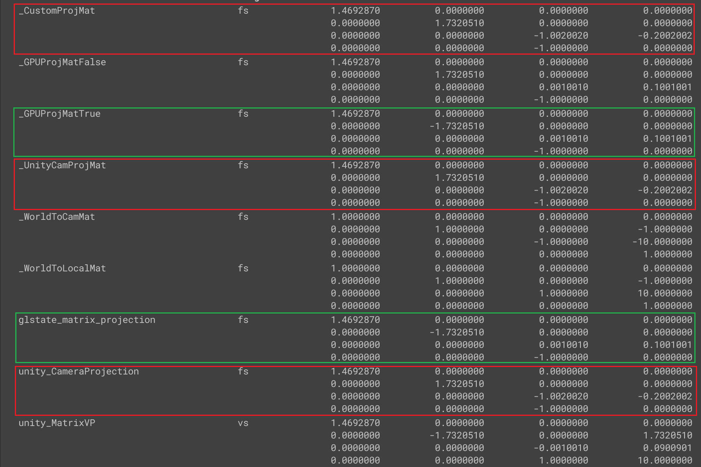
private void Update() { if (mat != null) { var cam = Camera.main; if (cam != null) { mat.SetMatrix("_WorldToLocalMat", cam.transform.worldToLocalMatrix); mat.SetMatrix("_WorldToCamMat", cam.worldToCameraMatrix); var customProjMat = new Matrix4x4(); CalcGLProjMat(ref customProjMat, cam); mat.SetMatrix("_CustomProjMat", customProjMat); mat.SetMatrix("_GPUProjMatTrue", GL.GetGPUProjectionMatrix(customProjMat, true)); mat.SetMatrix("_GPUProjMatFalse", GL.GetGPUProjectionMatrix(customProjMat, false)); mat.SetMatrix("_UnityCamProjMat", cam.projectionMatrix); } } } // void CalcMyProjMat(ref Matrix4x4 mat, Camera cam) { if (cam == null) return; float n = cam.nearClipPlane; float f = cam.farClipPlane; // Fov Axis is Vertical float fovV = Mathf.Deg2Rad * cam.fieldOfView; float zoomy = 1f / Mathf.Tan(fovV / 2f); // cam.aspect = width / height float zoomx = zoomy / cam.aspect; mat.m00 = zoomx; mat.m11 = zoomy; mat.m22 = (f + n) / (f - n); mat.m23 = 1f; mat.m32 = 2 * f * n / (n - f); /* zoomx 0 0 0 0 zoomy 0 0 0 0 (f+n)/(f-n) 1 0 0 2nf/(n-f) 0 **/ } void MyProjMat2GLProjMat(ref Matrix4x4 mat) { var flipZMat = Matrix4x4.identity; flipZMat.m22 = -1; mat = flipZMat * mat; mat = mat.transpose; } void CalcGLProjMat(ref Matrix4x4 mat, Camera cam) { CalcMyProjMat(ref mat, cam); MyProjMat2GLProjMat(ref mat); }
- What's difference between UNITY_MATRIX_P and unity_CameraProjection? https://forum.unity.com/threads/whats-difference-between-unity_matrix_p-and-unity_cameraprojection.1079549/
- https://docs.unity3d.com/ScriptReference/Camera-projectionMatrix.html
- What's difference between UNITY_MATRIX_P and unity_CameraProjection? https://forum.unity.com/threads/whats-difference-between-unity_matrix_p-and-unity_cameraprojection.1079549/
- UNITY_MATRIX_V
unity 的 view matrix 采用 OpenGL 方式，不同 GraphicAPI 不会影响 view matrix。
下图来自 UnityCatLikeCoding/MyTest/03TestShaderMatrix 工程中的展示效果:
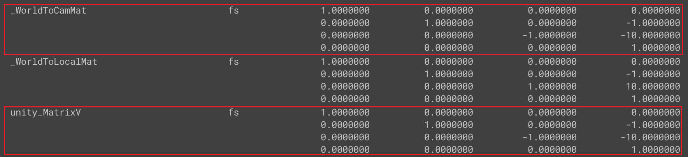
- 参考资料
- 各种坐标系统惯例
Unity Shader 定义的宏
shader 各个阶段对应的预处理器宏
SHADER_STAGE_VERTEX
SHADER_STAGE_FRAGMENT
SHADER_STAGE_DOMAIN
SHADER_STAGE_HULL
SHADER_STAGE_GEOMETRY
SHADER_STAGE_COMPUTE
UNITY_COMPILER_HLSL 使用 HLSL 编译时，定义该宏(for D3D or GLCore/GLES3/GLES platforms)
UNITY_COMPILER_HLSL2GLSL 使用 hlsl2glsl 编译时，定义该宏
UNITY_COMPILER_CG 使用 NVIDIA 的 Cg
https://docs.unity3d.com/Manual/SL-BuiltinMacros.html
https://docs.unity3d.com/Manual/SL-ShadingLanguage.html
UNITY_ENABLE_REFLECTION_BUFFERS TODO-How? 延迟渲染模式下，延迟渲染反射球时会设置该变量开启。延迟渲染模式下，默认该变量是开启的，在 Graphics Settings 中将 DeferredReflections 选项选为 NoSupport 即可关闭。
https://docs.unity3d.com/ScriptReference/Rendering.BuiltinShaderDefine.html
UNITY_USE_NATIVE_HDR 查看 2019 版本的源代码发现相关代码被注释掉了，UNITY_USE_NATIVE_HDR 应该永远都不会被开启
Unity Shader Compiler
- Windows & Microsoft platforms (DX11, DX12 and Xbox One) all use Microsoft’s HLSL compiler (currently d3dcompiler_47).
- OpenGL Core , OpenGL ES 3, OpenGL ES 2.0 and Metal use Microsoft’s HLSL followed by bytecode translation into GLSL or Metal, using HLSLcc.
- OpenGL ES 2.0 can use source level translation via hlsl2glslfork and glsl optimizer. This is enabled by adding #pragma prefer_hlsl2glsl gles
- Other console platforms use their respective compilers (e.g. PSSL on PS4).
- Surface Shaders use Cg 2.2 and MojoShader for code generation analysis step.
Unity shader 预编译命令
multi_compile_local // 为本地变体，只发生在本Shader，非全局控制
Shader 汇编指令
- D3D11 汇编指令
命令 说明 示例 mul result opt1 opt2 opt1 乘 opt2 保存到 result add result opt1 opt2 opt1 加 opt2 保存到 result mad result opt1 opt2 opt3 opt1 乘 opt2 再加 opt3 保存结果到 result mov result opt1 将 opt1 数据保存到 result dcl_sampler s0, mode_default 创建贴图采样对象 s0 dcl_resource_texture2d(float,float,float,float) t0 创建 2D 贴图资源 t0 sample result.xyzw, uv.xyxx, t0.xyzw, s0 使用 s0 采样器以 uv 为贴图坐标，对贴图资源 t0 进行采样将结果保存到 result 中 - Misc
rcp 求倒数
pack and unpack data
urp 下面文件中，包含了很多 pack 和 unpack 方法。
com.unity.render-pipelines.core/ShaderLibrary/Packing.hlsl
- pack unpack int
// Packs an integer stored using at most 'numBits' into a [0..1] real. real PackInt(uint i, uint numBits) { uint maxInt = (1u << numBits) - 1u; return saturate(i * rcp(maxInt)); } // Unpacks a [0..1] real into an integer of size 'numBits'. uint UnpackInt(real f, uint numBits) { uint maxInt = (1u << numBits) - 1u; return (uint)(f * maxInt + 0.5); // Round instead of truncating }
GPU 性能
- GPU GFLOPS https://gflops.surge.sh/
Combining Textures
Linear Color Space
- Linear Color Space 原理
sRGB 颜色空间的 EOTF（ gamma 电信号到线性光信号的转换函数）通常被近似为 e2.2
sRGB 颜色空间的 OETF（线性光信号到 gamma 电信号的转换函数）通常被近似为 l1
准确的 EOTF 和 OETF 如下：
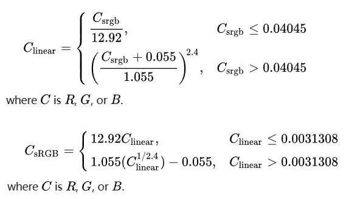
Gamma space 是指经过 gamma 矫正的颜色。gamma 矫正是对光照亮度的调整。最简单的方式是提升原始值某次幂，如 \(originalValue^{gamma}\) 。
gamma=1 表示没有改变。gamma=2 表示对原始值求平方。
这种转换原本是为了适应非线性的 CRT 显示器的。一个附加的好处是这种转换刚好和我们眼睛对不同光强度的敏感程度相一致。人眼对不同的暗的颜色要比不同的亮的颜色更加敏感。所以使用更多位数字存储暗颜色是很有意义的，求幂运算可以实现该需求，它会将比较小的值扩展到一个更大的范围，同时将较大的值压缩到一个小的范围。
运用最广泛的图片颜色格式是 sRGB.
- Encoding with gamma 1/2.2 即 \(originalValue^{\frac{1}{2.2}} = originalValue^{0.45}\)

- Decoding with gamma 2.2 即 \(originalValue^{2.2}\)

- 伽马矫正函数图示
横坐标为编码前的颜色值，纵坐标为编码后的颜色值。蓝色的线表示线性编码前后颜色值不变。红色的线表示 Gamma 编码前后颜色值变大。以 0.5 为分界线，1/2.2 Gamma 编码后，[0-0.5] 被扩展到了 [0-0.7297…] [0.5-1] 被压缩到了 [0.7297… - 1]。1/2.2 Gamma 编码的图片要比 Linear 编码的图片亮度高。
下面的 HTML 可用于 GammaToLinear 转换
<!DOCTYPE html> <html> <body> <h2>颜色转换</h2> <form action="" id="originColor"> TD 颜色 R: <input type="text" id="oR" value ="128" size="4"> G: <input type="text" id="oG" value ="128" size="4"> B: <input type="text" id="oB" value ="64" size="4"> </form> <br> <form action="" id="newColor"> Qin 颜色 R: <input type="text" id="nR" value ="" size="4" disabled> G: <input type="text" id="nG" value ="" size="4" disabled> B: <input type="text" id="nB" value ="" size="4" disabled> </form> <br> <button type="button" onclick='convertColor()'>转换</button> </body> <script type="text/javascript"> function convertColor() { var r = document.getElementById("oR").value / 255; var g = document.getElementById("oG").value / 255; var b = document.getElementById("oB").value / 255; //window.alert("test = " + r + b + g); document.getElementById("nR").value = Math.round(Math.pow(r, 1/2.2) * 255); document.getElementById("nG").value = Math.round(Math.pow(g, 1/2.2) * 255); document.getElementById("nB").value = Math.round(Math.pow(b, 1/2.2) * 255); } </script> </html>
// GammaToLinearSpace(col.rgb); 下面代码是 GammaToLinearSpace 的汇编码 void main() { u_xlat0 = texture2D(_MainTex, vs_TEXCOORD0.xy); u_xlat1.xyz = u_xlat0.xyz * vec3(0.305306017, 0.305306017, 0.305306017) + vec3(0.682171106, 0.682171106, 0.682171106); u_xlat1.xyz = u_xlat0.xyz * u_xlat1.xyz + vec3(0.0125228781, 0.0125228781, 0.0125228781); u_xlat0.xyz = u_xlat0.xyz * u_xlat1.xyz; SV_Target0 = u_xlat0; return; } // LinearToGammaSpace(col.rgb); 下面代码是 LinearToGammaSpace 的汇编代码 void main() { u_xlat0 = texture2D(_MainTex, vs_TEXCOORD0.xy); u_xlat16_1.xyz = max(u_xlat0.xyz, vec3(0.0, 0.0, 0.0)); u_xlat16_2.xyz = log2(u_xlat16_1.xyz); u_xlat16_2.xyz = u_xlat16_2.xyz * vec3(0.416666657, 0.416666657, 0.416666657); u_xlat16_2.xyz = exp2(u_xlat16_2.xyz); u_xlat16_2.xyz = u_xlat16_2.xyz * vec3(1.05499995, 1.05499995, 1.05499995) + vec3(-0.0549999997, -0.0549999997, -0.0549999997); u_xlat0.xyz = max(u_xlat16_2.xyz, vec3(0.0, 0.0, 0.0)); SV_Target0 = u_xlat0; return; }
// 下面代码是 图片Gamma和Linear转换工具 using System.Collections; using System.Collections.Generic; using UnityEngine; using UnityEditor; public class LinearGammaConvert : MonoBehaviour { static List<string> _assetPathList = new List<string>(); [MenuItem("Assets/Tools/ImageLinearToGamma")] public static void LinearToGamma() { _assetPathList.Clear(); GetSelectionPathList(_assetPathList); foreach(var path in _assetPathList) { ConvertBetweenLinearGamma(path, true); } _assetPathList.Clear(); } [MenuItem("Assets/Tools/ImageGammaToLinear")] public static void GammaToLinear() { _assetPathList.Clear(); GetSelectionPathList(_assetPathList); foreach(var path in _assetPathList) { ConvertBetweenLinearGamma(path, false); } _assetPathList.Clear(); } static void GetSelectionPathList(List<string> pathList) { if(Selection.objects!=null) { foreach(var obj in Selection.objects) { var path = AssetDatabase.GetAssetPath(obj); if(!string.IsNullOrEmpty(path)) { pathList.Add(path); } } } } static void ConvertBetweenLinearGamma(string imgPath, bool isToGamma) { if (string.IsNullOrEmpty(imgPath)) return; var textureImportor = AssetImporter.GetAtPath(imgPath) as TextureImporter; if (textureImportor == null) return; textureImportor.isReadable = true; textureImportor.sRGBTexture = !isToGamma; textureImportor.textureCompression = TextureImporterCompression.Uncompressed; textureImportor.SaveAndReimport(); var texture = AssetDatabase.LoadAssetAtPath<Texture2D>(imgPath); float gammaValue = isToGamma ? 0.4545f : 2.2f; var pixels = texture.GetPixels(); for(var i=0; i<pixels.Length; i++) { pixels[i].r = Mathf.Pow(pixels[i].r, gammaValue); pixels[i].g = Mathf.Pow(pixels[i].g, gammaValue); pixels[i].b = Mathf.Pow(pixels[i].b, gammaValue); } texture.SetPixels(pixels); texture.Apply(); System.IO.File.WriteAllBytes(imgPath, texture.EncodeToTGA()); } }
- Encoding with gamma 1/2.2 即 \(originalValue^{\frac{1}{2.2}} = originalValue^{0.45}\)
- Unity Gamma and Linear workflow
- Gamma Workflow
gamma space 下 shader 中的值全部为 gamma 编码，输出到 swapchain RT 时，不需要硬件执行 gamma 编码，所以 framebuffer RT format 为 B8G8R8A8_UNORM
贴图的 sRGB 设置不会有任何作用，贴图都是 sRGB。当 color channel 值为 0.5，从 shader 中对贴图采样得到的值也是 0.5。
- Linear Workflow
linear space 下 shader 中的值全部为 linear 值，输出到 swapchain RT 时，需要硬件执行 gamma 编码，所以 swapchain framebuffer RT format 为 B8G8R8A8_SRGB
贴图的 sRGB 设置会生效。当 color channel 值为 0.5，若贴图设置为 sRGB 时，从 shader 中对贴图采样得到的值为 0.21223。若贴图未设置为 sRGB，从 shader 中对贴图采样得到的值为 0.5。
- Gamma Workflow
- DetailTex 叠加到 MainTex 上为什么需要乘二？
MainTex 颜色范围为[0-1] DetailTex 颜色范围也为[0-1], 如果将 DetailTex 制作为灰度图并且颜色值取 0.5，那么 MainTex*DetailTex*2 可以保证图片亮度不会变化。DetailTex 颜色值小于 0.5 的地方就会减低颜色亮度，大于 0.5 的地方就会提高颜色亮度。
但是，当 Unity 引擎切换到线性空间，乘二是不正确的。DetailTex 转化为线性空间时，0.5 的 DetailTex 颜色值会变为 \(0.5^{2.2}=0.2176\) ,乘二后为 0.4352, 所以颜色亮度会减低。最好的解决方案是当 Unity 引擎切换到线性空间时，应该乘 \(frac{1}{0.5^{2.2}}=frac{1}{0.2176}=4.5956\)
Unity 中 unity_ColorSpaceDouble 用来处理不同的颜色空间乘不同的值。
- SetVector SetColor
GammaSpace 下，SetVector SetColor 效果没有差别。下图为设置颜色值为(0.5, 0, 0)

LinearSpace 下，SetVector SetColor 效果会有明显差别。下图为设置颜色值为(0.5, 0, 0)
编辑器中设置的值和 Shader Property List 中设置的值是相同的。
线性空间下，通过 SetColor 传入的值被认为是经过 Gamma=1/2.2=0.4545 编码的值，Unity 引擎会对该值进行 Gamma=2.2 的编码(对 Gamma=1/2.2 进行解码)，从而将 Gamma 空间的值转换为线性空间。所以，SetVector(0.5^2.2, 0, 0, 0) 和 SetColor(0.5, 0, 0, 0)的效果是等价的。
- 参考资料
- Linear or gamma workflow https://docs.unity3d.com/Manual/LinearRendering-LinearOrGammaWorkflow.html
- Gamma 空间是什么，为什么我们需要它 https://blog.csdn.net/qq_18229381/article/details/78053018
- Linear or gamma workflow https://docs.unity3d.com/Manual/LinearRendering-LinearOrGammaWorkflow.html
The First Light
normal 从物体空间到世界空间的变换
// obj to world i.normal = mul(transpose((float3x3)unity_WorldToObject), v.normal); inline float3 UnityObjectToWorldNormal( in float3 norm ) { #ifdef UNITY_ASSUME_UNIFORM_SCALING return UnityObjectToWorldDir(norm); #else // 改变左乘 右乘顺序 等价于 矩阵转置 // mul(IT_M, norm) => mul(norm, I_M) => {dot(norm, I_M.col0), dot(norm, I_M.col1), dot(norm, I_M.col2)} return normalize(mul(norm, (float3x3)unity_WorldToObject)); #endif }
Tags LightMode=ForwardBase
定义该 Tags 才可以在 shader 中访问场景中主方向光的信息。
BlinnPhong
视角不逆光时的显示效果如下：

视角逆光时会有显示错误。错误如下图：
Energy Conservation
// Unity 实现的能量守恒 UnityStandardUtils.cginc half SpecularStrength(half3 specular) { #if (SHADER_TARGET < 30) // SM2.0: instruction count limitation // SM2.0: simplified SpecularStrength return specular.r; // Red channel - because most metals are either monocrhome or with redish/yellowish tint #else return max (max (specular.r, specular.g), specular.b); #endif } // Diffuse/Spec Energy conservation inline half3 EnergyConservationBetweenDiffuseAndSpecular (half3 albedo, half3 specColor, out half oneMinusReflectivity) { oneMinusReflectivity = 1 - SpecularStrength(specColor); #if !UNITY_CONSERVE_ENERGY return albedo; #elif UNITY_CONSERVE_ENERGY_MONOCHROME return albedo * oneMinusReflectivity; #else return albedo * (half3(1,1,1) - specColor); #endif }
Specular / Metallic Workflow
- Specular Workflow
Specular Workflow 中将 Specular Color 的强度提高来实现金属材质。将 Specular Color 的强度减弱来实现非金属材质。
// 默认是 Specular Workflow #ifndef UNITY_SETUP_BRDF_INPUT #define UNITY_SETUP_BRDF_INPUT SpecularSetup #endif inline FragmentCommonData SpecularSetup (float4 i_tex) { half4 specGloss = SpecularGloss(i_tex.xy); half3 specColor = specGloss.rgb; half smoothness = specGloss.a; half oneMinusReflectivity; half3 diffColor = EnergyConservationBetweenDiffuseAndSpecular (Albedo(i_tex), specColor, /*out*/ oneMinusReflectivity); FragmentCommonData o = (FragmentCommonData)0; o.diffColor = diffColor; o.specColor = specColor; o.oneMinusReflectivity = oneMinusReflectivity; o.smoothness = smoothness; return o; } // Diffuse/Spec Energy conservation inline half3 EnergyConservationBetweenDiffuseAndSpecular (half3 albedo, half3 specColor, out half oneMinusReflectivity) { oneMinusReflectivity = 1 - SpecularStrength(specColor); #if !UNITY_CONSERVE_ENERGY return albedo; #elif UNITY_CONSERVE_ENERGY_MONOCHROME return albedo * oneMinusReflectivity; #else // 该情况下，如果 specColor 不是灰度图，diffuse 颜色会显示异常 return albedo * (half3(1,1,1) - specColor); #endif } half SpecularStrength(half3 specular) { #if (SHADER_TARGET < 30) // SM2.0: instruction count limitation // SM2.0: simplified SpecularStrength return specular.r; // Red channel - because most metals are either monocrhome or with redish/yellowish tint #else return max (max (specular.r, specular.g), specular.b); #endif }
- Metallic Workflow
Metallic Workflow 中通过金属度来实现金属和非金属材质。
// 在自己的 shader 中定义 UNITY_SETUP_BRDF_INPUT = MetallicSetup 来指定使用 Metallic 流程 CGINCLUDE #define UNITY_SETUP_BRDF_INPUT MetallicSetup ENDCG inline FragmentCommonData MetallicSetup (float4 i_tex) { half2 metallicGloss = MetallicGloss(i_tex.xy); half metallic = metallicGloss.x; half smoothness = metallicGloss.y; // this is 1 minus the square root of real roughness m. half oneMinusReflectivity; half3 specColor; half3 diffColor = DiffuseAndSpecularFromMetallic (Albedo(i_tex), metallic, /*out*/ specColor, /*out*/ oneMinusReflectivity); FragmentCommonData o = (FragmentCommonData)0; o.diffColor = diffColor; o.specColor = specColor; o.oneMinusReflectivity = oneMinusReflectivity; o.smoothness = smoothness; return o; } inline half3 DiffuseAndSpecularFromMetallic (half3 albedo, half metallic, out half3 specColor, out half oneMinusReflectivity) { specColor = lerp (unity_ColorSpaceDielectricSpec.rgb, albedo, metallic); oneMinusReflectivity = OneMinusReflectivityFromMetallic(metallic); // 返回 diffuseColor // metallic=1 diffuseColor=0 oneMinusReflectivity=0 // metallic=0 diffuseColor=albedo*oneMinusDielectricSpec oneMinusReflectivity=oneMinusDielectricSpec return albedo * oneMinusReflectivity; } // 常量定义 #ifdef UNITY_COLORSPACE_GAMMA #define unity_ColorSpaceGrey fixed4(0.5, 0.5, 0.5, 0.5) #define unity_ColorSpaceDouble fixed4(2.0, 2.0, 2.0, 2.0) #define unity_ColorSpaceDielectricSpec half4(0.220916301, 0.220916301, 0.220916301, 1.0 - 0.220916301) #define unity_ColorSpaceLuminance half4(0.22, 0.707, 0.071, 0.0) // Legacy: alpha is set to 0.0 to specify gamma mode #else // Linear values #define unity_ColorSpaceGrey fixed4(0.214041144, 0.214041144, 0.214041144, 0.5) #define unity_ColorSpaceDouble fixed4(4.59479380, 4.59479380, 4.59479380, 2.0) #define unity_ColorSpaceDielectricSpec half4(0.04, 0.04, 0.04, 1.0 - 0.04) // standard dielectric reflectivity coef at incident angle (= 4%) #define unity_ColorSpaceLuminance half4(0.0396819152, 0.458021790, 0.00609653955, 1.0) // Legacy: alpha is set to 1.0 to specify linear mode #endif inline half OneMinusReflectivityFromMetallic(half metallic) { // 推导： // We'll need oneMinusReflectivity, so // 1-reflectivity = 1-lerp(dielectricSpec, 1, metallic) = lerp(1-dielectricSpec, 0, metallic) // store (1-dielectricSpec) in unity_ColorSpaceDielectricSpec.a, then // 1-reflectivity = lerp(alpha, 0, metallic) = alpha + metallic*(0 - alpha) = // = alpha - metallic * alpha half oneMinusDielectricSpec = unity_ColorSpaceDielectricSpec.a; // metallic=0 Reflectivity=DielectricSpec OneMinusReflectivity=oneMinusDielectricSpec // metallic=1 Reflectivity=1 OneMinusReflectivity=0 return oneMinusDielectricSpec - metallic * oneMinusDielectricSpec; }
Multi Lights
Light Coord
#ifdef POINT # define DECLARE_LIGHT_COORDS(idx) unityShadowCoord3 _LightCoord : TEXCOORD##idx; # define COMPUTE_LIGHT_COORDS(a) a._LightCoord = mul(unity_WorldToLight, mul(unity_ObjectToWorld, v.vertex)).xyz; # define LIGHT_ATTENUATION(a) (tex2D(_LightTexture0, dot(a._LightCoord,a._LightCoord).rr).r * SHADOW_ATTENUATION(a)) #endif #ifdef SPOT # define DECLARE_LIGHT_COORDS(idx) unityShadowCoord4 _LightCoord : TEXCOORD##idx; # define COMPUTE_LIGHT_COORDS(a) a._LightCoord = mul(unity_WorldToLight, mul(unity_ObjectToWorld, v.vertex)); # define LIGHT_ATTENUATION(a) ( (a._LightCoord.z > 0) * UnitySpotCookie(a._LightCoord) * UnitySpotAttenuate(a._LightCoord.xyz) * SHADOW_ATTENUATION(a) ) #endif #ifdef DIRECTIONAL # define DECLARE_LIGHT_COORDS(idx) # define COMPUTE_LIGHT_COORDS(a) # define LIGHT_ATTENUATION(a) SHADOW_ATTENUATION(a) #endif #ifdef POINT_COOKIE # define DECLARE_LIGHT_COORDS(idx) unityShadowCoord3 _LightCoord : TEXCOORD##idx; # define COMPUTE_LIGHT_COORDS(a) a._LightCoord = mul(unity_WorldToLight, mul(unity_ObjectToWorld, v.vertex)).xyz; # define LIGHT_ATTENUATION(a) (tex2D(_LightTextureB0, dot(a._LightCoord,a._LightCoord).rr).r * texCUBE(_LightTexture0, a._LightCoord).w * SHADOW_ATTENUATION(a)) #endif #ifdef DIRECTIONAL_COOKIE # define DECLARE_LIGHT_COORDS(idx) unityShadowCoord2 _LightCoord : TEXCOORD##idx; # define COMPUTE_LIGHT_COORDS(a) a._LightCoord = mul(unity_WorldToLight, mul(unity_ObjectToWorld, v.vertex)).xy; # define LIGHT_ATTENUATION(a) (tex2D(_LightTexture0, a._LightCoord).w * SHADOW_ATTENUATION(a)) #endif #define UNITY_LIGHTING_COORDS(idx1, idx2) DECLARE_LIGHT_COORDS(idx1) UNITY_SHADOW_COORDS(idx2) #define LIGHTING_COORDS(idx1, idx2) DECLARE_LIGHT_COORDS(idx1) SHADOW_COORDS(idx2) // vertex shader 中，计算_LightCoord #define UNITY_TRANSFER_LIGHTING(a, coord) COMPUTE_LIGHT_COORDS(a) UNITY_TRANSFER_SHADOW(a, coord) #define TRANSFER_VERTEX_TO_FRAGMENT(a) COMPUTE_LIGHT_COORDS(a) TRANSFER_SHADOW(a) #endif
Light Attenuation
#ifdef POINT sampler2D_float _LightTexture0; unityShadowCoord4x4 unity_WorldToLight; #define UNITY_LIGHT_ATTENUATION(destName, input, worldPos) \ unityShadowCoord3 lightCoord = mul(unity_WorldToLight, unityShadowCoord4(worldPos, 1)).xyz; \ fixed shadow = UNITY_SHADOW_ATTENUATION(input, worldPos); \ // 按照距离的平方衰减 fixed destName = tex2D(_LightTexture0, dot(lightCoord, lightCoord).rr).r * shadow; #endif #ifdef SPOT sampler2D_float _LightTexture0; unityShadowCoord4x4 unity_WorldToLight; sampler2D_float _LightTextureB0; inline fixed UnitySpotCookie(unityShadowCoord4 LightCoord) { // 采样时从齐次坐标系转换到欧拉坐标系 // 偏移 0.5 这样灯光坐标系原点就和图片中心点对应了 return tex2D(_LightTexture0, LightCoord.xy / LightCoord.w + 0.5).w; } inline fixed UnitySpotAttenuate(unityShadowCoord3 LightCoord) { // 使用RenderDoc 截取_LightTextureB0 对应的图片资源，发现其为1024x1的从1到0衰减的图片 return tex2D(_LightTextureB0, dot(LightCoord, LightCoord).xx).r; } #if !defined(UNITY_HALF_PRECISION_FRAGMENT_SHADER_REGISTERS) #define DECLARE_LIGHT_COORD(input, worldPos) unityShadowCoord4 lightCoord = mul(unity_WorldToLight, unityShadowCoord4(worldPos, 1)) #else #define DECLARE_LIGHT_COORD(input, worldPos) unityShadowCoord4 lightCoord = input._LightCoord #endif #define UNITY_LIGHT_ATTENUATION(destName, input, worldPos) \ DECLARE_LIGHT_COORD(input, worldPos); \ fixed shadow = UNITY_SHADOW_ATTENUATION(input, worldPos); \ fixed destName = (lightCoord.z > 0) * UnitySpotCookie(lightCoord) * UnitySpotAttenuate(lightCoord.xyz) * shadow; #endif #ifdef DIRECTIONAL #define UNITY_LIGHT_ATTENUATION(destName, input, worldPos) fixed destName = UNITY_SHADOW_ATTENUATION(input, worldPos); #endif #ifdef POINT_COOKIE samplerCUBE_float _LightTexture0; unityShadowCoord4x4 unity_WorldToLight; sampler2D_float _LightTextureB0; #if !defined(UNITY_HALF_PRECISION_FRAGMENT_SHADER_REGISTERS) #define DECLARE_LIGHT_COORD(input, worldPos) unityShadowCoord3 lightCoord = mul(unity_WorldToLight, unityShadowCoord4(worldPos, 1)).xyz #else #define DECLARE_LIGHT_COORD(input, worldPos) unityShadowCoord3 lightCoord = input._LightCoord #endif #define UNITY_LIGHT_ATTENUATION(destName, input, worldPos) \ DECLARE_LIGHT_COORD(input, worldPos); \ fixed shadow = UNITY_SHADOW_ATTENUATION(input, worldPos); \ // 使用RenderDoc 截取_LightTextureB0 对应的图片资源，发现其为1024x1的从1到0衰减的图片 fixed destName = tex2D(_LightTextureB0, dot(lightCoord, lightCoord).rr).r * texCUBE(_LightTexture0, lightCoord).w * shadow; #endif #ifdef DIRECTIONAL_COOKIE sampler2D_float _LightTexture0; unityShadowCoord4x4 unity_WorldToLight; #if !defined(UNITY_HALF_PRECISION_FRAGMENT_SHADER_REGISTERS) #define DECLARE_LIGHT_COORD(input, worldPos) unityShadowCoord2 lightCoord = mul(unity_WorldToLight, unityShadowCoord4(worldPos, 1)).xy #else #define DECLARE_LIGHT_COORD(input, worldPos) unityShadowCoord2 lightCoord = input._LightCoord #endif #define UNITY_LIGHT_ATTENUATION(destName, input, worldPos) \ DECLARE_LIGHT_COORD(input, worldPos); \ fixed shadow = UNITY_SHADOW_ATTENUATION(input, worldPos); \ fixed destName = tex2D(_LightTexture0, lightCoord).w * shadow; #endif
Mixing Lights
通过增加 shader 变体来实现对混合灯光的支持。
#pragma multi_compile DIRECTIONAL POINT
Cookies
Spot Light 默认支持 Cookie，Spot Light 的形状是通过 Cookie 来实现。SpotLight 的 Cookie 贴图的 Wrap 模式采用 Clamp。
Direcional 默认不支持 Cookie，需要通过 shader 变体开启支持。其 Cookie 贴图的 Wrap 模式采用 Repeat。
Point 默认不支持 Cookie，需要通过 shader 变体开启支持。其 Cookie 贴图是 Cube 贴图，Wrap 模式采用 Clamp。
// 下面代码等价于 #pragma multi_compile_fwdadd #pragma multi_compile DIRECTIONAL POINT DIRECTIONAL_COOKIE POINT_COOKIE
- multi_compile_fwdbase 变体 https://www.cnblogs.com/sifenkesi/p/9942272.html
Vertex Lights
灯光数量增加后，drawcall 数量会成倍增加。Unity 可以设置逐像素光照的数量。如果将超出数量限制的光照直接不进行计算，会导致明显的显示错误，可以采用更廉价的顶点光照来代替像素光照。
Unity 在 Base Pass 中实现顶点光照。引擎会寻找包含 VERTEXLIGHT_ON 关键字的 Base Pass 着色器。
顶点光照只支持 点光源，方向光和聚光灯都能在顶点着色器中计算。
在 Light 的 RenderMode 属性中，可以设置重要类型，Important 类型的光照总是逐像素光照，Not Important 类型的光照永远不会被当作逐像素光照，Auto 类型的光照其重要性由引擎来决定。
// UnityCG.cginc // 该函数返回了4个点光源对于当前顶点的综合光照颜色 // 在顶点中计算 4 个点光源光照，当光源数目不足 4 个时，计算消耗依然是 4 个光照的计算量 // Used in ForwardBase pass: Calculates diffuse lighting from 4 point lights, with data packed in a special way. float3 Shade4PointLights ( float4 lightPosX, float4 lightPosY, float4 lightPosZ, float3 lightColor0, float3 lightColor1, float3 lightColor2, float3 lightColor3, float4 lightAttenSq, float3 pos, float3 normal) { // to light vectors float4 toLightX = lightPosX - pos.x; float4 toLightY = lightPosY - pos.y; float4 toLightZ = lightPosZ - pos.z; // squared lengths float4 lengthSq = 0; lengthSq += toLightX * toLightX; lengthSq += toLightY * toLightY; lengthSq += toLightZ * toLightZ; // don't produce NaNs if some vertex position overlaps with the light lengthSq = max(lengthSq, 0.000001); // NdotL float4 ndotl = 0; ndotl += toLightX * normal.x; ndotl += toLightY * normal.y; ndotl += toLightZ * normal.z; // correct NdotL float4 corr = rsqrt(lengthSq); ndotl = max (float4(0,0,0,0), ndotl * corr); // attenuation lightAttenSq 用于改进顶点光照的效果 float4 atten = 1.0 / (1.0 + lengthSq * lightAttenSq); float4 diff = ndotl * atten; // final color float3 col = 0; col += lightColor0 * diff.x; col += lightColor1 * diff.y; col += lightColor2 * diff.z; col += lightColor3 * diff.w; return col; }
Spherical Harmonics
- 原理概述
球谐函数背后的思想是你可以只用一个连续函数来描述所有入射光在某个点的效果，这个函数定义在球的表面。
通常来说，这个函数是用球面坐标表示的。但是也可以使用 3D 坐标，这样我们就可以使用物体的 normal 向量对函数进行采样了。
为了创建这样的函数，你必须在所有方向上对光照强度进行采样，然后将结果转换为单个连续的函数。为了达到完美模拟，你必须为表面的每个点做这样的工作。这当然是无法做到的，所以我们只能做到近似效果。
首先，我们只从对象本地原点的角度定义函数。光照条件在随物体表面变化不大时效果还是可以的。小物体，或者光照比较弱或光照离物体很远时满足这种情况。幸运的是，这恰好是那些不值得逐像素计算的光照或者顶点光照。
其次，我们必须近似函数自身。你可以将任何连续的函数分解为多个不同频率的函数。这些被称为波段。对于任意一个函数，你可能需要无数个波段来模拟。
- Spherical Harmonics Bands
第一个基带：使用一个常量颜色值是最简单近似灯光的方式。光照在各个方向上都是相同的。使用单个子函数表示，这个子函数为一个常量值。
第二个基带：第二个基带引入了线性方向光，对于每一个轴向，其描述了最多的光照来自哪儿。使用三个函数表示，每个函数包含一个我们法线的坐标值，并乘上一个常量。
第三个基带：第三个基带更加复杂，它有 5 个函数组成。这些函数都是二次方的，他们包含了两个法线坐标的乘积。
l band NO sub func count 0 1 1 3 2 5 3 7 4 9 下表为最大阶数 n 下，对应所有基带的子函数的个数
n n^2 1 1=1 2 1+3=4 3 1+3+5=9 4 1+3+5+7=16 下图列出了各个基带的子函数，每一项都需要再乘上 \(\frac{1}{2\sqrt{\pi}}\)

完整的归一化之后的(复)球谐函数如下：

因此我们可以使用 9 个因子来近似表示任何一种光照情况，考虑到颜色有 RGB 三个分量，一共需要使用 3*9=27 个因子。
下图为 unity 中传递给 shader 的球谐数据:
- unity_SHAr.rgba 存储了光照 r 分量的第 1 个基带和第 0 个基带的参数因子，unity_SHBr.rgba + unitySHC.r 存储了光照 r 分量的第 2 个基带的参数因子
- unity_SHAg.rgba 存储了光照 g 分量的第 1 个基带和第 0 个基带的参数因子，unity_SHBg.rgba + unitySHC.g 存储了光照 g 分量的第 2 个基带的参数因子
- unity_SHAb.rgba 存储了光照 b 分量的第 1 个基带和第 0 个基带的参数因子，unity_SHBb.rgba + unitySHC.b 存储了光照 b 分量的第 2 个基带的参数因子
- unity_SHAr.rgba 存储了光照 r 分量的第 1 个基带和第 0 个基带的参数因子，unity_SHBr.rgba + unitySHC.r 存储了光照 r 分量的第 2 个基带的参数因子
- ShadeSH9
// normal should be normalized, w=1.0 half3 SHEvalLinearL0L1 (half4 normal) { half3 x; // Linear (L1) + constant (L0) polynomial terms x.r = dot(unity_SHAr,normal); x.g = dot(unity_SHAg,normal); x.b = dot(unity_SHAb,normal); return x; } // normal should be normalized, w=1.0 half3 SHEvalLinearL2 (half4 normal) { half3 x1, x2; // 4 of the quadratic (L2) polynomials half4 vB = normal.xyzz * normal.yzzx; x1.r = dot(unity_SHBr,vB); x1.g = dot(unity_SHBg,vB); x1.b = dot(unity_SHBb,vB); // Final (5th) quadratic (L2) polynomial half vC = normal.x*normal.x - normal.y*normal.y; x2 = unity_SHC.rgb * vC; return x1 + x2; } // normal should be normalized, w=1.0 // output in active color space half3 ShadeSH9 (half4 normal) { // Linear + constant polynomial terms half3 res = SHEvalLinearL0L1 (normal); // Quadratic polynomials res += SHEvalLinearL2 (normal); # ifdef UNITY_COLORSPACE_GAMMA res = LinearToGammaSpace (res); # endif return res; }
- 环境光和 LightProbe
环境光和 LightProbe 都使用了球谐光照。在 Unity 中叠加到了间接光照的 diffuse 中。
环境光对应一组球谐系数。每个 LightProbe 也对应存储一组球谐系数。全局照明系统会烘培环境光探针，即使用球谐参数保存环境光参数，但是当几何体使用了光照探针和 Lightmaps 时，并不会应用环境光探针，因为环境光影响在光照探针和 Lightmaps 中已经存在了。只有当不存在光照探针和 Lightmap 时，才会使用环境光探针。
Tips:
RenderSettings.ambientIntensity 只会影响 ambientProbe，而不会影响 LightProbe。
unity 通过 SkyManager 来管理环境光(environment lighting). SkyManager 会自动生成一个 ambientProbe 和 default reflection probe 来 capture environtment lighting。
// Should SH (light probe / ambient) calculations be performed? // - 静态和动态lightmaps开启时，不执行SH计算。When both static and dynamic lightmaps are available, no SH evaluation is performed // - 静态和动态lightmaps关闭时，一定执行SH计算。 When static and dynamic lightmaps are not available, SH evaluation is always performed // - 对于低级LOD，静态lightmap和LightProbe实时全局照明可以合并在一起。 For low level LODs, static lightmap and real-time GI from light probes can be combined together // - forwardadd,shdowcaster等Pass不需要执行SH计算。Passes that don't do ambient (additive, shadowcaster etc.) should not do SH either. #define UNITY_SHOULD_SAMPLE_SH (defined(LIGHTPROBE_SH) && !defined(UNITY_PASS_FORWARDADD) && !defined(UNITY_PASS_PREPASSBASE) && !defined(UNITY_PASS_SHADOWCASTER) && !defined(UNITY_PASS_META)) half3 ShadeSHPerPixel (half3 normal, half3 ambient, float3 worldPos) { half3 ambient_contrib = 0.0; #if UNITY_SAMPLE_FULL_SH_PER_PIXEL // Completely per-pixel #if UNITY_LIGHT_PROBE_PROXY_VOLUME if (unity_ProbeVolumeParams.x == 1.0) ambient_contrib = SHEvalLinearL0L1_SampleProbeVolume(half4(normal, 1.0), worldPos); else ambient_contrib = SHEvalLinearL0L1(half4(normal, 1.0)); #else ambient_contrib = SHEvalLinearL0L1(half4(normal, 1.0)); #endif ambient_contrib += SHEvalLinearL2(half4(normal, 1.0)); ambient += max(half3(0, 0, 0), ambient_contrib); #ifdef UNITY_COLORSPACE_GAMMA ambient = LinearToGammaSpace(ambient); #endif #elif (SHADER_TARGET < 30) || UNITY_STANDARD_SIMPLE // Completely per-vertex // nothing to do here. Gamma conversion on ambient from SH takes place in the vertex shader, see ShadeSHPerVertex. #else // L2 per-vertex, L0..L1 & gamma-correction per-pixel // Ambient in this case is expected to be always Linear, see ShadeSHPerVertex() #if UNITY_LIGHT_PROBE_PROXY_VOLUME if (unity_ProbeVolumeParams.x == 1.0) ambient_contrib = SHEvalLinearL0L1_SampleProbeVolume (half4(normal, 1.0), worldPos); else ambient_contrib = SHEvalLinearL0L1 (half4(normal, 1.0)); #else ambient_contrib = SHEvalLinearL0L1 (half4(normal, 1.0)); #endif ambient = max(half3(0, 0, 0), ambient+ambient_contrib); // include L2 contribution in vertex shader before clamp. #ifdef UNITY_COLORSPACE_GAMMA ambient = LinearToGammaSpace (ambient); #endif #endif return ambient; } inline UnityGI UnityGI_Base(UnityGIInput data, half occlusion, half3 normalWorld) { UnityGI o_gi; ResetUnityGI(o_gi); // Base pass with Lightmap support is responsible for handling ShadowMask / blending here for performance reason #if defined(HANDLE_SHADOWS_BLENDING_IN_GI) half bakedAtten = UnitySampleBakedOcclusion(data.lightmapUV.xy, data.worldPos); float zDist = dot(_WorldSpaceCameraPos - data.worldPos, UNITY_MATRIX_V[2].xyz); float fadeDist = UnityComputeShadowFadeDistance(data.worldPos, zDist); data.atten = UnityMixRealtimeAndBakedShadows(data.atten, bakedAtten, UnityComputeShadowFade(fadeDist)); #endif o_gi.light = data.light; o_gi.light.color *= data.atten; // 此处调用 ShadeSHPerPixel 方法计算环境光 /LightProbe的球谐光照，将结果存储到indirectLight.diffuse中 #if UNITY_SHOULD_SAMPLE_SH o_gi.indirect.diffuse = ShadeSHPerPixel(normalWorld, data.ambient, data.worldPos); #endif #if defined(LIGHTMAP_ON) // Baked lightmaps half4 bakedColorTex = UNITY_SAMPLE_TEX2D(unity_Lightmap, data.lightmapUV.xy); half3 bakedColor = DecodeLightmap(bakedColorTex); #ifdef DIRLIGHTMAP_COMBINED fixed4 bakedDirTex = UNITY_SAMPLE_TEX2D_SAMPLER (unity_LightmapInd, unity_Lightmap, data.lightmapUV.xy); o_gi.indirect.diffuse += DecodeDirectionalLightmap (bakedColor, bakedDirTex, normalWorld); #if defined(LIGHTMAP_SHADOW_MIXING) && !defined(SHADOWS_SHADOWMASK) && defined(SHADOWS_SCREEN) ResetUnityLight(o_gi.light); o_gi.indirect.diffuse = SubtractMainLightWithRealtimeAttenuationFromLightmap (o_gi.indirect.diffuse, data.atten, bakedColorTex, normalWorld); #endif #else // not directional lightmap o_gi.indirect.diffuse += bakedColor; #if defined(LIGHTMAP_SHADOW_MIXING) && !defined(SHADOWS_SHADOWMASK) && defined(SHADOWS_SCREEN) ResetUnityLight(o_gi.light); o_gi.indirect.diffuse = SubtractMainLightWithRealtimeAttenuationFromLightmap(o_gi.indirect.diffuse, data.atten, bakedColorTex, normalWorld); #endif #endif #endif #ifdef DYNAMICLIGHTMAP_ON // Dynamic lightmaps fixed4 realtimeColorTex = UNITY_SAMPLE_TEX2D(unity_DynamicLightmap, data.lightmapUV.zw); half3 realtimeColor = DecodeRealtimeLightmap (realtimeColorTex); #ifdef DIRLIGHTMAP_COMBINED half4 realtimeDirTex = UNITY_SAMPLE_TEX2D_SAMPLER(unity_DynamicDirectionality, unity_DynamicLightmap, data.lightmapUV.zw); o_gi.indirect.diffuse += DecodeDirectionalLightmap (realtimeColor, realtimeDirTex, normalWorld); #else o_gi.indirect.diffuse += realtimeColor; #endif #endif o_gi.indirect.diffuse *= occlusion; return o_gi; }
Bumpiness
高度图转 normal map 的方法
- 方案 1
- 通过高度求出每一点的斜率。该斜率就是该点的 tangent。求出 u 或 v 方向的 tangent。
- 将 tangent 绕 z 轴旋转 90 度，就是 normal。

// 利用 u 方向高度变化来求 normal float2 delta = float2(_HeightMap_TexelSize.x, 0); float h1 = tex2D(_HeightMap, i.uv); float h2 = tex2D(_HeightMap, i.uv + delta); // scale normal with 1/delta.x 第一种形式消除了除法，而且改善了精度 // i.normal = float3(delta.x, h2 - h1, 0); <==> i.normal = float3(1, (h2 - h1)/delta.x, 0); i.normal = float3(delta.x, h2 - h1, 0); // 调换 x 和 y 将 tangent 转化为 normal i.normal = float3(h2 - h1, delta.x, 0); // 放大y减弱normal效果 i.normal = float3(h2 - h1, 1, 0); // 也可以利用 v 方向高度来变化求 normal.实现方法相同
下图为使用该方式计算 normal 的效果图
- 通过高度求出每一点的斜率。该斜率就是该点的 tangent。求出 u 或 v 方向的 tangent。
- 方案 2
- 通过高度求出每一点的斜率。该斜率就是该点的 tangent。分别求出 u/v 方向的 tangent。
- 将 u/v 方向的 tangent 进行叉乘生成 normal。
下面是向量叉乘公式:

此处 tangent 向量叉乘计算结果为：
\begin{equation} \begin{bmatrix} 0\\ {f_v}'\\ 1 \end{bmatrix} \times \begin{bmatrix} 1\\ {f_u}'\\ 0 \end{bmatrix} = \begin{bmatrix} {f_v}'*0-1*{f_u}'\\ 1*1-0*0 \\ 0*{f_u}'-{f_v}'*1 \end{bmatrix} = \begin{bmatrix} -{f_u}'\\ 1 \\ -{f_v}' \end{bmatrix} \end{equation}
float2 du = float2(_HeightMap_TexelSize.x * 0.5, 0); float u1 = tex2D(_HeightMap, i.uv - du); float u2 = tex2D(_HeightMap, i.uv + du); float3 tu = float3(1, u2 - u1, 0); float2 dv = float2(0, _HeightMap_TexelSize.y * 0.5); float v1 = tex2D(_HeightMap, i.uv - dv); float v2 = tex2D(_HeightMap, i.uv + dv); float3 tv = float3(0, v2 - v1, 1); i.normal = cross(tv, tu); i.normal = normalize(i.normal);
- 通过高度求出每一点的斜率。该斜率就是该点的 tangent。分别求出 u/v 方向的 tangent。
Normal 向量的插值
Normal 贴图的 Filter，以及顶点的 Normal 向量在传递到片段着色器过程中的插值 都会导致 normal 向量不再是单位向量，所以需要重新单位化。
Normal 贴图存储惯例
Normal 贴图通用的惯例是将向上的方向存储到 z 分量.所以，在 shader 中采样出来 normal 向量后需要调换 y 分量和 z 分量。
DXT5nm 存储 normal 贴图
其只存储了 normal 的 x，y 分量，丢弃掉了 z 分量。z 分量通过计算得到 \(z=\sqrt{1-x^2-y^2}\) .
x 分量存储在 A 通道，y 分量存储在 G 通道。R 通道和 B 通道没有使用。
DXT5 按照 4x4 个像素为一个块进行压缩。R 占用 5 位，B 占用 5 位，G 占用 6 位，A 占用 8 位。RGB 公用一个查找表，A 单独使用一个查找表。所以将 x 分量存储到 A 通道可以保持 x 分量和 y 分量的独立性。
手机平台不支持 DXT5nm 格式，在手机平台 unity 仍然使用通用的 rgb 进行编码。
缩放 Normal
只需要在单位化 normal 前，对 normal 的 x 分量和 z 分量进行缩放，就可以强化和弱化 y 分量。
Blending Normals
回顾使用高度图生成 normal 贴图的方法，可以知道，如果希望 normal 效果叠加，其实就是将高度叠加，也就是斜率叠加（斜率为 h/x, 贴图各个地方 x 都相同，因此高度相当于斜率）。
normal 贴图中存储的值为:(s 表示单位化过程中，对各个分量的缩放)
所以叠加 MainNormalTex 和 DetailNormalTex 的高度后得到的 normal 为
Whiteout Blending : 对上面得到的 normal 乘 \(M_zD_z\) ，然后丢弃掉对 x 和 y 分量的缩放、这样可以强化 X 和 Y 分量
下面这段文字翻译自 Blending in Detial 文章：
在开发 Reoriented Normal Mapping 方法时，我们希望新的方法满足下面的属性，从而能让艺术家从直观上理解其行为：
属性 1：符合逻辑，方法有清晰的数学理论基础。（如：有清晰的几何解释）
属性 2：处理恒等情况，如果其中一个 normal map 是平的，则输出和另外一个 normal map 一样。
属性 3：不会变平，两个 normal map 的强度都会被保持。
尽管 Whiteout 方法看似可行，但是其并不完全具备上面的第一和第三条属性。为了满足这些属性，我们的策略是对 detail normal 进行旋转使其跟随 base normal 对应的表面，就像切空间的 normal 会被变换以跟随几何表面的法线。
Unity 中 base normal 和 detail normal 的混合使用了类似的思路，但是，其构造的 detail normal 旋转矩阵使用的三个向量并不是正交的。
float3 n1 = tex2D(texBase, uv).xyz*2 - 1; float3 n2 = tex2D(texDetail, uv).xyz*2 - 1; float3x3 nBasis = float3x3( float3(n1.z, n1.y, -n1.x), // +90 degree rotation around y axis float3(n1.x, n1.z, -n1.y), // -90 degree rotation around x axis float3(n1.x, n1.y, n1.z)); float3 r = normalize(n2.x*nBasis[0] + n2.y*nBasis[1] + n2.z*nBasis[2]); return r*0.5 + 0.5;
- Blending in Detail https://blog.selfshadow.com/publications/blending-in-detail/index.html
- Normal Blend 方法总结 https://zhuanlan.zhihu.com/p/364821684
Tangent Space And Tangent Space To World Space
TangentSpace 基向量如下：(假设左手坐标系，Tangent 对应 x 轴，Normal 对应 y 轴，Binormal 对应 z 轴)
- Tangent 向量对应 U axis
- Normal 向量对应表面法线
- Binormal（或 Bitangent）向量对应 V axis。Binormal = Tangent x Normal = -(Normal x Tangent)。
- 为什么要在 tangent vector 的 w 分量中存储-1 或 1？
创建左右对称的 3D 模型(例如：人类，动物)时，通常会对 mesh 进行作于镜像。这样就只需要编辑半部分模型，而且也只需要一半的贴图数据。在进行模型镜像的时候，顶点的 normal,tangent,向量也需要进行镜像，但是 binormal 向量则不需要。可以通过在 tangent 的 w 分量中存储-1 来表示 binormal 为非镜像的，tangent 的 w 分量中存储 1 来表示 binormal 为镜像的。
- 为什么不需要对 worldTangent 和 worldBinormal 进行 normalize?
worldTangent worldBinormal 只用于得到 TangentToWorld 变换矩阵，从而将 tangentNormal 转换为 worldNormal。不会直接使用 worldTangent worldBinormal 用于光照计算，所以不需要 normalize。
- 为什么 Unity 中没有对法线 y、z 分量进行调换？

// Unity 实现 half3x3 CreateTangentToWorldPerVertex(half3 normal, half3 tangent, half tangentSign) { // For odd-negative scale transforms we need to flip the sign half sign = tangentSign * unity_WorldTransformParams.w; half3 binormal = cross(normal, tangent) * sign; // TIPS: normal 放到了最后一列从而和法线的真实的y相对应，从而实现了法线y，z分量的调换 return half3x3(tangent, binormal, normal); } // vertex shader float4 tangentWorld = float4(UnityObjectToWorldDir(v.tangent.xyz), v.tangent.w); float3x3 tangentToWorld = CreateTangentToWorldPerVertex(normalWorld, tangentWorld.xyz, tangentWorld.w); // fragment shader half3 tangent = tangentToWorld[0].xyz; half3 binormal = tangentToWorld[1].xyz; half3 normal = tangentToWorld[2].xyz; // TIPS: float3 normalWorld = tangent * normalTangent.x + binormal * normalTangent.y + normal * normalTangent.z;
Shadows
方向光阴影
- ShadowBias
- 开启屏幕空间阴影
- 开启关闭的方法
- 关闭 在 ProjectSetting/Graphic 中，将 Screen Space Shadows 设置为 No Support，Tier 中取消勾选 Cascaded Shadows 。
- 开启 在 ProjectSetting/Graphic 中，将 Screen Space Shadows 设置为 Built-in shader，Tier 中勾选 Cascaded Shadows 。
- 关闭 在 ProjectSetting/Graphic 中，将 Screen Space Shadows 设置为 No Support，Tier 中取消勾选 Cascaded Shadows 。
- Rendering to Depth Texture
Unity 绘制场景中物体将其深度写入到 DepthTexture
- Rendering To Shadow Maps
Unity 在光源位置对场景进行绘制，将物体深度写入到 Shadowmap
开启 shadow cascades 后，会多次绘制阴影。开启 2 级会绘制两次，开启 4 级会绘制 4 次。
下图为第一个方向光视角下开启 4 级 cascades 阴影渲染的阴影贴图：

下图为第二个方向光视角下开启 4 级 cascades 阴影渲染的阴影贴图：

- Collecting Shadows
Unity 使用 Hidden/Internal-ScreenSpaceShadows shader 绘制一个全屏的矩形，以前面得到的 DepthTexture 和 Shadowmap 为输入，对于每一个片段通过比较对应的场景摄像机的深度和光照摄像机的深度得出屏幕空间的阴影贴图。
在这个过程中，Unity 通过 Filtering 来实现软阴影。
下图为第一个方向光对应的屏幕空间阴影贴图：
下图为第二个方向光对应的屏幕空间阴影贴图：

- 最终结果
下图为两个方向光绘制场景时对应的 drawcall：

下图为绘制结果：
- 开启关闭的方法
- 关闭屏幕空间阴影
- ShadowQuality
减低 ShadowDistance 可以提高阴影精度，但是会缩小阴影范围。
设置投影类型 QualitySettings.shadowProjection = ShadowProjection.CloseFit; 可以提高阴影精度。
开启 Cascade。
- ForwardAddPass 阴影支持
// 方案1 fwd pass 中添加如下命令 #pragma multi_compile_fwdadd_fullshadows // 方案2 // 2.1 fwd pass 中修改Tag // 2.2添加 DIRECTIONAL SHADOWS_SCREEN变体 Tags { "LightMode" = "ForwardAdd" "SHADOWSUPPORT"="true" } // ... #pragma multi_compile _ DIRECTIONAL #pragma multi_compile _ SHADOWS_SCREEN
- 参考资料


Spot Light Shadow
相关宏定义
| 宏定义 | DrawCall | 说明 |
|---|---|---|
| UNITY_NO_SCREENSPACE_SHADOWS | 开启屏幕空间阴影 | |
| SHADOWS_DEPTH | Shadows.RenderJob ShadowCaster | Directional 和 Spot 生成阴影贴图写入深度的宏定义 |
| SHADOWS_CUBE | Shadows.RenderJob ShadowCaster | PointLight 生成阴影贴图写入深度的宏定义 |
| SHADOWS_SCREEN | RenderForward ForwardBasePass | 主 Directional 开启阴影对应的宏定义 |
| SHADOWS_SCREEN DIRECTIONAL | RenderForward ForwardAddPass | 第二个 Directional 开启阴影对应的宏定义 |
| SHADOWS_DEPTH SPOT | RenderForward ForwardAddPass | Spot 开启阴影对应的宏定义 |
| SHADOWS_CUBE POINT | RenderForward ForwardAddPass | Point 开启阴影对应的宏定义 |
- DIRECTIONAL SPOT POINT 3 个对应 Light 组件上的 LightType 的设置
- SHADOWS_SCREEN SHADOWS_DEPTH SHADOWS_CUBE 对应物体 Renderer 组件上的 ReceiveShadow 设置
参考资料
- Signed Distance Field Shadow in Unity https://zhuanlan.zhihu.com/p/37918356
- Unity 平面阴影(王者荣耀阴影实现) https://zhuanlan.zhihu.com/p/42781261
Reflection
Environment Mapping
- 缺少 Indirect Specular Lighting
在 shader 中组合了 diffuse specular ambient 后，感觉应该可以创建出看上去真实的画面了，然而物体表面依然暗淡，闪耀的表面效果看起来不正确。闪耀的表面应该像镜子，特别是表面为金属时。（完美的镜面反射会反射所有光照，所以其不存在 diffuse.光滑度越高、金属度越高，材质越接近完美镜面。）
下图为 Metallic Smoothness 取不同值时的渲染效果:
上图 metallic=1 时，env ambient 几乎对渲染没有任何影响，这是因为金属度越高反射率越大，反射率越大其漫反射部分就越少(参考 PhysicalTheory.org 中 金属和非金属放射光的差异 的描述)，所以 ambient 对于 metallic=1 的材质几乎没有任何影响。
上图 metallic=1 Smoothness=1 时，几乎是一个黑色的球，只能看到一个很小的高光，这个很小的高光是表面将直接光源反射到了朝向我们的方向(朝向摄像机的方向)。之所以渲染结果是黑球，是因为 shader 中只包含了直接光照和间接光照的 diffuse（也就是 ambient），为了反射环境，需要添加间接光照的高光反射，即 indirectLight.specular。
- Indirect Specular Lighting 特点
视线和法线夹角越大，Fresnel 反射越强。表面越光滑 Fresnel 反射越强。

因为 Fresnel 间接反射来源于间接光照(上图中直接光照颜色为白色，间接光照的高光直接设置为了红色)，所以它产生的效果独立于直接光照，因此上图中即使处于阴影部分的边缘处 Fresnel 反射依然很强，其独立于直接光源的阴影。
UnityIndirect CreateIndirectLight (Interpolators i) { UnityIndirect indirectLight; indirectLight.diffuse = 0; indirectLight.specular = 0; #if defined(VERTEXLIGHT_ON) indirectLight.diffuse = i.vertexLightColor; #endif #if defined(FORWARD_BASE_PASS) indirectLight.diffuse += max(0, ShadeSH9(float4(i.normal, 1))); // 间接高光颜色设置为了红色 indirectLight.specular = float3(1, 0, 0); #endif return indirectLight; }
Imperfect Reflections
模糊的反射是通过环境贴图的 mipmap 来实现的。
- Metals VS Nonmetals
金属和非金属表面都可以产生清晰的反射，但是他们看起来是不同的。镜面反射在闪耀的电介质材质(非金属)上效果会很强，但是镜面反射并不会主导电介质材质(非金属)的外观，他们仍然表现出大量的可见的 diffuse 反射。

金属会改变镜面反射的颜色，但是非金属则不会。这对于镜面高光和环境镜面反射都适用。下图中金属的镜面高光颜色为红色，非金属是白色。
- Mirrors and Shadows
间接反射是独立于表面的直接照明的。这在其阴影区域会更加明显。对于非金属，这会让表面更亮一些，你依然可以看到直接光照导致的阴影。

同样的规则适用于金属。但是，金属的间接反射起主导作用。因此，直接光照和阴影会随着光泽度增加而消失。完美镜面上不存在阴影。
现实世界中很少有完美的镜面。现实世界中的材质都是由金属和非金属混合而成的，可以通过调节金属度来模拟不完美的镜面材质。
Box Projection
ReflectionProbe 的 Box 区域是和世界坐标轴对齐的，它不受旋转和缩放影响。
BoxProjection 原理如下图所示：

./UnityCatLikeCoding/01_08re_box_projection.ggb
BoxProjection 对应代码实现如下：
half3 BoxProjection(half3 dir, half3 pos, half4 cubemapPos, half3 boxMin, half3 boxMax) { // cubemapPos.w 控制 BoxProjection 是否生效 // UNITY_BRANCH 用于开启真正的分支 UNITY_BRANCH if (cubemapPos.w > 0) { half3 factors = ((dir > 0 ? boxMax : boxMin) - pos) / dir; half realFactor = min(min(factors.x, factors.y), factors.z); return dir * realFactor + (pos - cubemapPos); } return dir; }
- 关于 UNITY_BRANCH https://forum.unity.com/threads/correct-use-of-unity_branch.476804/
- HLSL branch flatten https://docs.microsoft.com/zh-cn/windows/win32/direct3dhlsl/dx-graphics-hlsl-if
Blending Reflection Probes
只有将 Renderer 的 reflectionProbeUsage 属性设置为 BlendProbesAndSkybox 时，反射探针才会和 Skybox 进行混合
public enum ReflectionProbeUsage { Off = 0, // 关闭反射探针 BlendProbes = 1, // 反射探针只和反射探针进行混合 BlendProbesAndSkybox = 2, // 反射探针可以和 skybox 进行混合 Simple = 3 // 只使用其中一个反射探针或 skybox，不进行混合 }
// 混合反射探针的逻辑 UnityIndirect CreateIndirect(v2f i, half3 viewDir) { UnityIndirect indirect; indirect.diffuse = 0; indirect.specular = 0; #if defined(FORWARD_BASE_PASS) indirect.diffuse += max(0, ShadeSH9(half4(i.worldNormal, 1))); half roughness = 1 - _Smoothness; roughness *= 1.7 - 0.7 * roughness; half3 reflectDir = reflect(-viewDir, i.worldNormal); half3 reflectDir1 = BoxProjection(reflectDir, i.worldPos, unity_SpecCube0_ProbePosition, unity_SpecCube0_BoxMin, unity_SpecCube0_BoxMax); half4 envColor = UNITY_SAMPLE_TEXCUBE_LOD(unity_SpecCube0, reflectDir1, roughness*UNITY_SPECCUBE_LOD_STEPS); envColor.rgb = DecodeHDR(envColor, unity_SpecCube0_HDR); UNITY_BRANCH if (unity_SpecCube0_BoxMin.a < 0.9999) { half3 reflectDir2 = BoxProjection(reflectDir, i.worldPos, unity_SpecCube1_ProbePosition, unity_SpecCube1_BoxMin, unity_SpecCube1_BoxMax); half4 envColor2 = UNITY_SAMPLE_TEXCUBE_SAMPLER_LOD(unity_SpecCube1, unity_SpecCube0, reflectDir2, roughness*UNITY_SPECCUBE_LOD_STEPS); // DecodeHDR 中代码处理了 intensity 逻辑 envColor2.rgb = DecodeHDR(envColor2, unity_SpecCube1_HDR); envColor = lerp(envColor2, envColor, unity_SpecCube0_BoxMin.a); } //indirect.specular = half3(1, 0, 0); indirect.specular = envColor.rgb; #endif return indirect; }
下面着重列出 Reflection CubeMap 的采样
// Step 1 // MetallicSetup half smoothness = metallicGloss.y; // this is 1 minus the square root of real roughness m. // SpecularSetup half smoothness = specGloss.a; // Step 2 perceptualRoughness = 1 - smoothness // Step 3 indirectSpecular = Unity_GlossyEnvironment (UNITY_PASS_TEXCUBE(unity_SpecCube0), data.probeHDR[0], glossIn); // Unity_GlossyEnvironment builtin_shaders/CGIncludes/UnityImageBasedLighting.cginc half3 Unity_GlossyEnvironment (UNITY_ARGS_TEXCUBE(tex), half4 hdr, Unity_GlossyEnvironmentData glossIn) { half perceptualRoughness = glossIn.roughness /* perceptualRoughness */ ; // TODO: CAUTION: remap from Morten may work only with offline convolution, see impact with runtime convolution! // For now disabled #if 0 float m = PerceptualRoughnessToRoughness(perceptualRoughness); // m is the real roughness parameter // smallest such that 1.0+FLT_EPSILON != 1.0 (+1e-4h is NOT good here. is visibly very wrong) const float fEps = 1.192092896e-07F; // remap to spec power. See eq. 21 in --> http://jbit.net/~sparky/academic/mm_brdf.pdf // <<Microfacet Based Bidirectional Reflectance Distribution Function>> // 阿里云备份 float n = (2.0/max(fEps, m*m))-2.0; // remap from n_dot_h formulatino to n_dot_r. See section "Pre-convolved Cube Maps vs Path Tracers" // --> https://s3.amazonaws.com/docs.knaldtech.com/knald/1.0.0/lys_power_drops.html // 有道云备份 <<Power Drops Within Lys>> n /= 4; // remap back to square root of real roughness (0.25 include both the sqrt root of the conversion and sqrt for going from roughness to perceptualRoughness) perceptualRoughness = pow( 2/(n+2), 0.25); #else // MM: came up with a surprisingly close approximation to what the #if 0'ed out code above does. perceptualRoughness = perceptualRoughness*(1.7 - 0.7*perceptualRoughness); #endif half mip = perceptualRoughnessToMipmapLevel(perceptualRoughness); half3 R = glossIn.reflUVW; half4 rgbm = UNITY_SAMPLE_TEXCUBE_LOD(tex, R, mip); return DecodeHDR(rgbm, hdr, isGammaSpace ? 1 : 0); } define UNITY_SPECCUBE_LOD_STEPS (6) half perceptualRoughnessToMipmapLevel(half perceptualRoughness) { return perceptualRoughness * UNITY_SPECCUBE_LOD_STEPS; } // Decodes HDR textures // handles dLDR, RGBM formats inline half3 DecodeHDR(half4 data, half4 decodeInstructions, int colorspaceIsGamma) { // Take into account texture alpha if decodeInstructions.w is true(the alpha value affects the RGB channels) half alpha = decodeInstructions.w * (data.a - 1.0) + 1.0; // If Linear mode is not supported we can skip exponent part if(colorspaceIsGamma) return (decodeInstructions.x * alpha) * data.rgb; return (decodeInstructions.x * pow(alpha, decodeInstructions.y)) * data.rgb; }
Bouncing Reflections
Lighting/Scene 下的数据记录在当前打开的场景文件中，每个场景的数据可以不同。
EnvironmentLighting/Source 指定天空球作为环境光来源，还是自定义环境光来源。
EnvironmentLighting/IntensityMultiplier 当 EnvironmentLighting/Source 为 Skybox 时，该调节项控制天空球光照亮度.
EnvironmentReflections/Source 指定使用天空球作为环境反射源，还是自定义环境反射源。
EnvironmentReflections/IntensityMultiplier 控制反射源在场景中提供反射的因子，值为 1 时符合物理规律。
EnvironmentReflections/Bounces 指定烘培反射 Probe 时，光线弹射次数
Tips:
EnvironmentReflections/Bounces 对 EnvCubeMap 的烘培没有影响，但对 Refelction Probe 的烘培有影响。如下图所示，bounces 为 2 时，ReflectionCubeMap 中的球体反射了地面的红色。
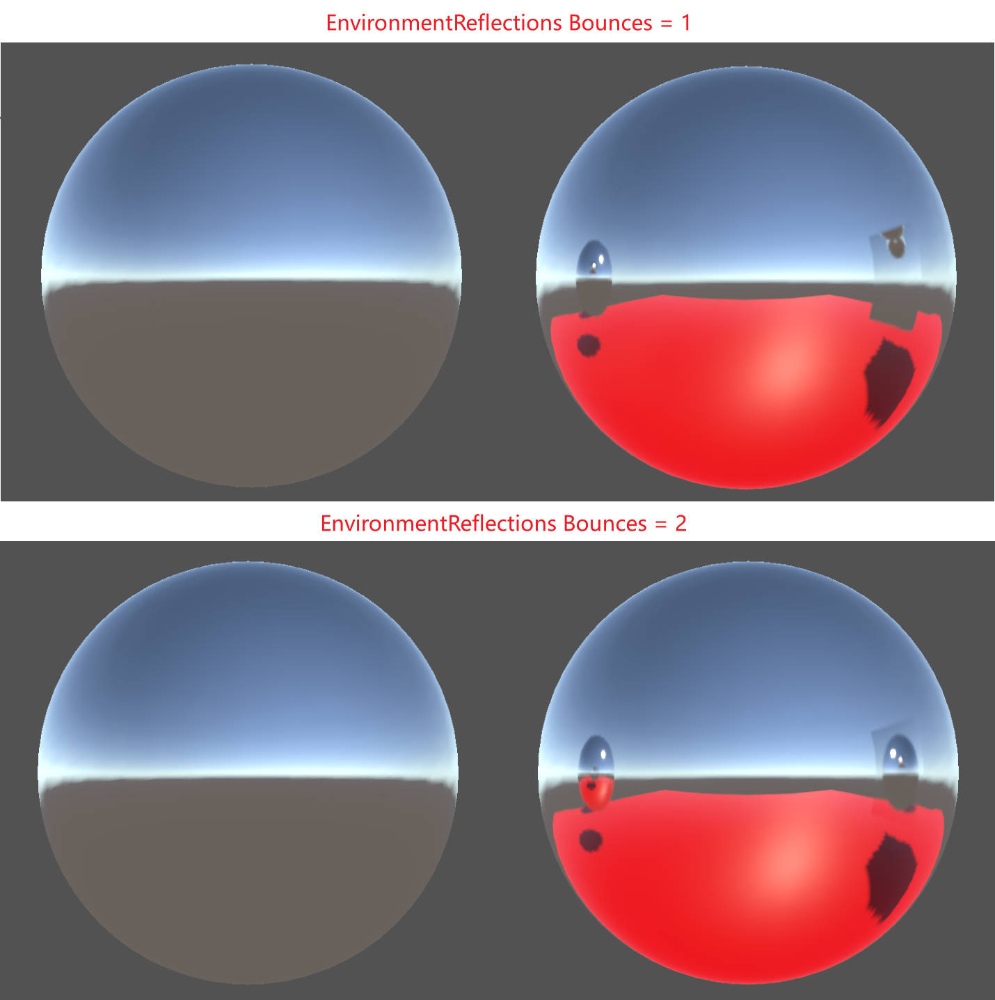
ComplexMaterials & More Complexity
Emission
Unity HDR Color 的计算逻辑如下：
[Serializefield] private Color _emissionColorValue; [Serializefield] private float _intensity; mat.SetVector("_EmissionColor", _emissionColorValue * Mathf.Pow(2, _intensity));
Shader 中实现 Emission 的方法：
[NoScaleOffset] _EmissionMap ("Emission", 2D) = "black" {} [HDR]_Emission ("Emission", Color) = (0, 0, 0) #pragma shader_feature _EMISSION_MAP sampler2D _EmissionMap; float3 _Emission; float3 GetEmission (Interpolators i) { #if defined(FORWARD_BASE_PASS) #if defined(_EMISSION_MAP) return tex2D(_EmissionMap, i.uv.xy) * _Emission; #else return _Emission; #endif #else return 0; #endif } float4 MyFragmentProgram (Interpolators i) : SV_TARGET { //… float4 color = UNITY_BRDF_PBS( albedo, specularTint, oneMinusReflectivity, GetSmoothness(i), i.normal, viewDir, CreateLight(i), CreateIndirectLight(i, viewDir) ); color.rgb += GetEmission(i); return color; }
Smoothness & Metallic Map
将 MetallicMap 和 SmoothnessMap 存储到一张 DXT5 格式的贴图中 ，Metallic Map 放到贴图 r 通道, Smoothness Map 放到贴图 a 通道。等价于使用两张 DXT1 格式贴图分别存储。因为 DXT5 分开对 RGB 和 A 通道进行压缩。
Occlusion
[NoScaleOffset] _OcclusionMap ("Occlusion", 2D) = "white" {} _OcclusionStrength("Occlusion Strength", Range(0, 1)) = 1 #pragma shader_feature _OCCLUSION_MAP sampler2D _OcclusionMap; float _OcclusionStrength; float GetOcclusion (Interpolators i) { #if defined(_OCCLUSION_MAP) return lerp(1, tex2D(_OcclusionMap, i.uv.xy).g, _OcclusionStrength); #else return 1; #endif } // Occlusion 同时影响直接光照阴影和间接光照阴影时，Occlusion效果会过强 // 因为Occlusion是基于物体形状的而不是特定光照的，其只影响间接光照会更合理一些。凹痕越深的地方，各个方向的间接光照减弱越多，而直接光照照进凹痕时，还是可以加将其照亮。 UnityLight CreateLight (Interpolators i) { //… UNITY_LIGHT_ATTENUATION(attenuation, i, i.worldPos); // 通过将Occlusion和atten相乘来影响直接光照阴影 attenuation *= GetOcclusion(i); light.color = _LightColor0.rgb * attenuation; light.ndotl = DotClamped(i.normal, light.dir); return light; } UnityIndirect CreateIndirectLight (Interpolators i, float3 viewDir) { //… #if defined(FORWARD_BASE_PASS) //… float occlusion = GetOcclusion(i); // 通过将Occlusion和间接光照的diffuse、specular相乘来影响间接光照阴影 indirectLight.diffuse *= occlusion; indirectLight.specular *= occlusion; #endif return indirectLight; }
Transparency
Cutout
- clip 操作对于移动平台的 TBDR 来说消耗比较大，通过添加 _RENDERING_CUTOUT ShaderFeature，对于不需要 clip 的材质可以提升渲染性能。
- 修改 cutout 材质的渲染队列，让其在不透明(Opaque)物体之后绘制，这样如果 cutout 材质对应的物体被不透明物体遮挡了，就可以避免对 cutout 物体的绘制，从而提高性能。
Semitransparent
- 半透明物体需要采用 Blend SrcAlpha OneMinusSrcAlpha 的混合方式，这样才能将半透明物体后面的物体透出来。
- 半透明物体不能写深度缓冲区，否则半透明物体叠加在一起时，深度测试会剔除掉物体的一部分，导致渲染结果不正确。
RenderType tag
下面是 Unity 内置 shader 的 Shader replacement tags, 在使用替换的 shader 进行渲染时，需要使用为 shader 设置的"RenderType" tag。
- Opaque: most of the shaders (Normal , Self Illuminated, Reflective, terrain shaders).
- Transparent: most semitransparent shaders (Transparent, Particle, Font, terrain additive pass shaders).
- TransparentCutout: masked transparency shaders (Transparent Cutout, two pass vegetation shaders).
- Background: Skybox shaders.
- Overlay: GUITexture, Halo, Flare shaders.
- TreeOpaque: terrain engine tree bark.
- TreeTransparentCutout: terrain engine tree leaves.
- TreeBillboard: terrain engine billboarded trees.
- Grass: terrain engine grass.
- GrassBillboard: terrain engine billboarded grass.
Fading vs Transparency
- Fade Mode
Fade Mode 中，使用的混合模式为 Blend SrcAlpha OneMinusSrcAlpha，几何体的颜色会依据 alpha 值降隐，漫反射和高光反射都会降隐。这种效果对于玻璃是不合适的，玻璃是全透明的，但是依然有清晰的高光和反射。 Transparent Mode
Transparent Mode 中，使用的混合模式为 Blend One OneMinusSrcAlpha, albedo 会乘 alpha 值，因此漫反射会根据 alpha 值降隐，高光反射会影响到透明度。这种模式适用于玻璃。
光线被反射后，透过半透明物体的光线会对应减少，如果所有光线都被反射，则不透明度为 1，如果没有光线被反射，则不透明度为原始值。y=kx+b 两个方程两个未知数，即可求出最终的 alpha 值。
k * Reflectivity + b = newAlpha
光线都被反射: Reflectivity=1 newAlpha=1 k*1 + b = 1 k=1-b
光线没被反射: Reflectivity=0 newAlpha=oldAlpha k*0 + b = oldAplha b=oldAlpha
newAlpha = (1-oldAlpha) * Reflectivity + oldAlpha
= Reflectivity - oldAlpha*Reflectivity + oldAlpha
= Reflectivity + oldAlpha*(1 - Reflectivity)
= oneMinusReflectivity + oldAlpha*oneMinusReflectivity
#if defined(_RENDERING_TRANSPARENT) albedo *= alpha; alpha = 1 - oneMinusReflectivity + alpha * oneMinusReflectivity; #endif
Semitransparent Shadows
Cutout Shadow
透贴的阴影只需要在 ShadowCaster Pass 的片段着色器中使用 clip(alpha - _Cutoff)指令将对应的片段剔除就可以了。
Transparenct Shadow
使用 Dithering 技术来实现半透明阴影。依据 alpha 值 clip 投影表面，从而模拟出半透明阴影。下图为使用这种技术实现的阴影效果：
_DitherMaskLOD Unity 使用的 Dither 贴图的模式如下，其一共包含 16 种模式，每个模式中的小像素块是 4x4 的像素块。开始是一个全空的模式(下图最右边)，依次向左每个模式填充一个像素块，直到模式中有 7 个像素块被填充。然后图案翻转，直到所有像素被填充。
// 采样 _DitherMaskLOD 用到的uv.z的范围为[0, 1] 因为一共有16种模式，所以uv.z = 0 对应第一种模式uv.z = 1.0/16.0 = 0.0625 对应第二种模式 uv.z = 0.9375 对应第15中模式 // alpha*0.9375 当alpha越小选取的模式越靠右边，取样得到的dither值为0的概率越大，当alpha越大选取的模式越靠左边，取样得到的dither值为1的概率越大，从而模拟了半透明的阴影 float3 uv = float3(i.vpos.xy, alpha*0.9375); float dither = tex3D(_DitherMaskLOD, uv); clip(dither - 0.01);
Deferred Shading
Forward Path vs Deferred Path
- DrawCall 对比
当场景中只有一个方向光时，Forward Path 和 Deferred Path 的 DrawCall 数目相差不多，Forward Path 因为需要单独生成 DepthTexture，在开始的 DepthPass 中多出了 48 个 DrawCall
场景中有两个方向光时，Forward Path 比 Deferred Path 多出了很多 DrawCall。
- GBuffer 内容

- Rendering Lights
- Directional Lights
因为方向光影响所有物体，通过渲染一个覆盖整个视图的四边形来计算方向光的渲染。Unity 默认使用 Internal-DeferredShading.shader 来渲染这个四边形。(每个方向光使用一个四边形计算一次，多个方向光计算多次)
下图中使用了两个方向光，其中渲染了两次：

- Spot Lights
spot light 不会影响所有物体，使用一个棱锥体可以表示 Spot light 照亮的体积，所以通过渲染一个棱锥体来执行 Spot Light 的渲染，这样只有棱锥体可见区域会被渲染。如果棱锥体完全被其他物体遮挡，则不需要渲染该 spot light。如果棱锥体的任何一个片段被渲染，将会执行该 spot light 的光照计算。
只有真的有物体在 spot light 照亮的体积中时，光照计算才是有意义的。在棱锥体后面的几何体是不需要渲染的，因为 spot light 照不到该几何体。
为了避免渲染不必要的片段，首先使用 Internal-StencilWrite.shader 渲染棱锥体，该 Pass 会写入模板缓冲区，用来标识哪些片段需要渲染。不过当棱锥体和摄像机近平面交叉时不能使用该技术，因为此时近平面外的正面被摄像机剔除，只有反面写入了模板值。
- Point lights
point light 和 spot light 类似，只是使用球体来表示 point light 照亮的体积。
- Light Volume
直接渲染 Light Volume 而不做特殊处理会有以下问题：
- 当灯光和近平面相交时，可见的 Light Volume 是背面，不关闭背面剔除 。灯光就不可见了。
由于我们是将 Light Volume 投影到屏幕上来得到光源影响范围。这会导致 Light Volume 远离屏幕一侧的物体也会参与光照计算。如下图：
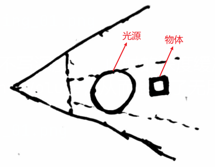
可以利用模板缓冲区来解决上面问题，具体做法如下：
a. 渲染 Light Volume，开启深度测试，Cull Back（渲染正面），关闭深度写入，模板测试全通过。
b. 深度测试失败, 模板值减 1，深度测试成功，模板值不变
c. 再次渲染 LightVolume, 开启深度测试，Cull Front（渲染背面），关闭深度写入，模板测试全通过。
d. 深度测试失败，模板值加 1，深度测试成功，模板值不变
e. 再次渲染 LightVolume, 开启模板测试, 进行光照计算。
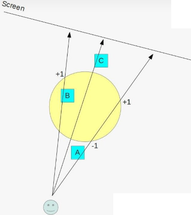
Tips: 该方法还适用于多光源
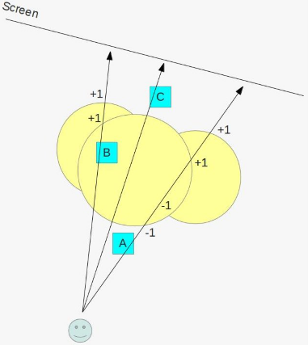
详细解释可以参考:
- 当灯光和近平面相交时，可见的 Light Volume 是背面，不关闭背面剔除 。灯光就不可见了。
- Directional Lights
- Light Range
延迟渲染中，Unity 默认使用 LDR(Low Dynamic Range)渲染场景，此时颜色值被写入到 ARGB32 格式的贴图中，Unity 使用对数运算来编码颜色从而扩大存储的颜色范围。Final Deferred Pass 会将这些颜色值转化为正常范围的颜色值。可以在 Camera 中可以设置是否开启 HDR。
col.xyz += GetEmissive(i); #if defined(DEFERRED_PASS) output.gBuffer0.rgb = albedo; output.gBuffer0.a = GetOcclusion(i); output.gBuffer1.rgb = specColor; output.gBuffer1.a = smoothness; output.gBuffer2 = float4(normal * 0.5 + 0.5, 1); #if !defined(UNITY_HDR_ON) // 使用指数-对数运算来编码解码颜色 // exp2(-col.rgb) = 2^{-col.rgb} col.rgb = exp2(-col.rgb); #endif output.gBuffer3 = col; #else //return indirect.specular.rgbr; output.color = col; #endif // DEFFERRED_PASS return output;
下图为不开启和开启 HDR 对于的 RenderTarget 贴图格式：
- Mixing Rendering Modes
场景中一部分物体使用的 shader 不支持延迟渲染模式时，引擎会先执行延迟渲染，将支持延迟渲染的物体绘制出来，然后再执行前向渲染，将其他不支持延迟渲染的物体绘制出来。
Unity 的延迟渲染不支持半透明物体，半透明物体需要 Forward rendering 阶段来渲染(因为半透明物体意味着需要将半透明物体叠在其后面的物体上，每多一个半透物体重叠就额外需要一整套 GBuffer 来存储对应半透明物体的渲染数据)。

Support Deferred Path
- 创建 deferred pass
延迟渲染需要 GPU 支持 MRT(multiple render targets).
Pass { Tags { // 表示该Pass用于延迟渲染 "LightMode" = "Deferred" } CGPROGRAM #pragma target 3.0 // 如果GPU不支持MRT则排除当前Pass #pragma exclude_renderers nomrt // 延迟渲染不支持 _RENDERING_FADE和 _RENDERING_TRANSPARENT #pragma shader_feature _ _RENDERING_CUTOUT #pragma shader_feature _METALLIC_MAP #pragma shader_feature _ _SMOOTHNESS_ALBEDO _SMOOTHNESS_METALLIC #pragma shader_feature _NORMAL_MAP #pragma shader_feature _OCCLUSION_MAP #pragma shader_feature _EMISSION_MAP #pragma shader_feature _DETAIL_MASK #pragma shader_feature _DETAIL_ALBEDO_MAP #pragma shader_feature _DETAIL_NORMAL_MAP #pragma vertex MyVertexProgram #pragma fragment MyFragmentProgram #define DEFERRED_PASS #include "MyDeferred.cginc" ENDCG }
- deferred pass frag output
struct FragmentOutput { // 延迟渲染需要将数据保存到多个RenderTarget #if defined(DEFERRED_PASS) float4 gBuffer0 : SV_Target0; float4 gBuffer1 : SV_Target1; float4 gBuffer2 : SV_Target2; float4 gBuffer3 : SV_Target3; #else float4 color : SV_Target; #endif };
- gbufer0123
FragmentOutput output; #if defined(DEFERRED_PASS) #if !defined(UNITY_HDR_ON) color.rgb = exp2(-color.rgb); #endif // GBuffer0.rgb 记录albedo output.gBuffer0.rgb = albedo; // GBuffer0.a记录Occlusion output.gBuffer0.a = GetOcclusion(i); // GBuffer1.rgb 记录了 specularColor output.gBuffer1.rgb = specularTint; // GBuffer1.a 记录了Smoothness output.gBuffer1.a = GetSmoothness(i); // GBuffer2中记录了normal output.gBuffer2 = float4(i.normal * 0.5 + 0.5, 1); // GBuffer3中记录了Emissive 和 environment ambient，后续光照计算得到的颜色都会叠加到GBuffer3中 output.gBuffer3 = color; #else output.color = ApplyFog(color, i); #endif return output;
- 为什么自己写的 DeferredPass GBuffer0 中输出了高光颜色，GBuffer1 中颜色比较暗?
FrameDebug 发现 MetallicMap 的贴图使用了 Unity 的默认贴图，进一步检查发现 shader 属性列表中定义的属性名称和 shader 中使用的名称不一致。
- 为什么自己写的 DeferredPass GBuffer0 中输出了高光颜色，GBuffer1 中颜色比较暗?
- support LDR
#if defined(DEFERRED_PASS) output.gBuffer0.rgb = albedo; output.gBuffer0.a = GetOcclusion(i); output.gBuffer1.rgb = specColor; output.gBuffer1.a = smoothness; output.gBuffer2 = float4(normal * 0.5 + 0.5, 1); #if !defined(UNITY_HDR_ON) col.rgb = exp2(-col.rgb); #endif output.gBuffer3 = col; #else //return indirect.specular.rgbr; output.color = col; #endif // DEFFERRED_PASS return output;
- Tone mapping 进化论 https://zhuanlan.zhihu.com/p/21983679
- Tone Mapping 与 Gamma Correction https://zhuanlan.zhihu.com/p/79203830
- Tone mapping 进化论 https://zhuanlan.zhihu.com/p/21983679
Deferred Reflections
- Unity 内置的屏幕空间反射
延迟渲染时，反射球会被渲染，反射球被投影到和反射球体积有交叉的几何体上。因此，反射球的反射不会扩展到反射球体积之外。反射球的渲染类似于灯光的渲染，只是反射球是使用正方体渲染的。
多个反射球按照顺序渲染，首先 skybox 被渲染，会覆盖整个视图。然后，各个反射球被渲染，每个反射球只会覆盖其体积内的表面。多个反射球体积有重叠时，重叠区域内，先绘制的反射球会被后绘制的反射球覆盖。
默认情况下，体积大的反射球会先绘制，这样体积小的反射球就可以覆盖体积大的反射球。你可以通过修改反射球的 Importance 属性值来调整它的绘制顺序。
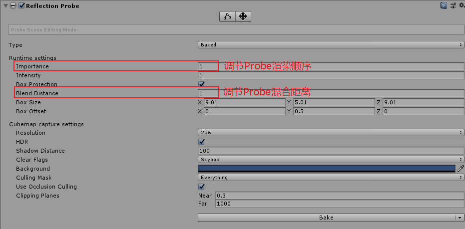
- 延迟渲染使用非屏幕空间反射
关闭延迟渲染的屏幕空间反射后，Unity 会采用前向渲染的方式计算反射，将反射效果写入 GBuffer3 中。
Fog
Forward Fog
在 LightSetting 可以设置雾相关的属性。
- ForwardPath 中为什么天空盒子不受雾效果的影响？
雾效果是在 Standard Shader 中的片段着色器中，对片段颜色进行修改来实现的。Unity 的天空盒并没有使用 Standard Shader 进行渲染，所以其不受雾影响。
- Linear Fog
线性模式的雾可以设置雾生效的最小距离和最大距离。离摄像机距离小于最小距离时没有雾的效果，在最小距离到最大距离雾的效果逐渐增加到最大，大于最大距离时显示最大雾的效果（即物体完全呈现雾的颜色）
LinearFog 计算公式 \(f = \frac{fogEnd - fogCoor}{fogEnd-fogStart}\)
- Exponential Fog
一次指数模式的雾。
ExponentialFog 计算公式 \(f = 2^{-fogCoor*fogDensity}\)
- Exponential Squared Fog
二次指数模式的雾。
ExponentialSquaredFog 计算公式 \(f = 2^{-(fogCoor*fogDensity)^{2}}\)
- Depth-Based Fog
Unity Shader 使用裁剪空间坐标的 w 分量作为 Fog Coordinate，裁剪空间坐标的 w 分量为投影变换前摄像机坐标系下坐标的 z 分量。这种计算雾的方式也称为基于深度的雾计算。
基于深度的雾计算比基于距离的雾计算效率更高。基于距离的雾比基于深度的雾效果要好，基于深度的雾在摄像机旋转视角时，雾效会变化。下图说明了其中的原理：

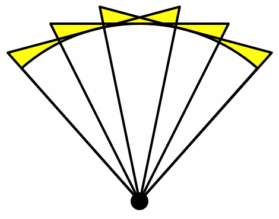
- 代码实现
- ApplyFog
v2f vert (appdata v) { v2f o; UNITY_INITIALIZE_OUTPUT(v2f, o); o.pos = UnityObjectToClipPos(v.vertex); o.uv.xy = TRANSFORM_TEX(v.uv, _MainTex); o.uv.zw = TRANSFORM_TEX(v.uv, _DetailTex); o.worldNormal = mul(v.normal, (float3x3)unity_WorldToObject); o.worldPos = mul(unity_ObjectToWorld, v.vertex); // 基于深度的雾 #if FOG_DEPTH // OpenGL clip space z range = [-near, far] o.worldPos.w = o.pos.z; #endif float3 tangentWorld = UnityObjectToWorldDir(v.tangent.xyz); float3x3 tangentToWorld = MCreateTangentToWorldPerVertex(o.worldNormal, tangentWorld, v.tangent.w); o.tangentToWorld[0] = tangentToWorld[0]; o.tangentToWorld[1] = tangentToWorld[1]; o.tangentToWorld[2] = tangentToWorld[2]; ComputeVertexLightColor(o); #if defined(UNITY_NO_SCREENSPACE_SHADOWS) TRANSFER_SHADOW(o); #else UNITY_TRANSFER_SHADOW(o, 0); #endif COMPUTE_LIGHT_COORDS(o); return o; } float4 ApplyFog(float color, v2f i) { float viewDistance = length(_WorldSpaceCameraPos - i.worldPos); #if FOG_DEPTH viewDistance = UNITY_Z_0_FAR_FROM_CLIPSPACE(i.worldPos.w); #endif UNITY_CALC_FOG_FACTOR_RAW(viewDistance); // 多光源支持 只需要对第一个光源叠加雾的颜色就可以了，其他光源只根据雾的强度进行减弱。 float3 fogColor = 0; #if defined(FORWARD_BASE_PASS) fogColor = unity_FogColor.rgb; #endif return lerp(fogColor, color, unityFogFactor); }
- UNITY_Z_0_FAR_FROM_CLIPSPACE(coord) 将 zclip space z value map to [0, far]
#if defined(UNITY_REVERSED_Z) #if UNITY_REVERSED_Z == 1 //D3d with reversed Z => z clip range is [near, 0] -> remapping to [0, far] //max is required to protect ourselves from near plane not being correct/meaningfull in case of oblique matrices. #define UNITY_Z_0_FAR_FROM_CLIPSPACE(coord) max(((1.0-(coord)/_ProjectionParams.y)*_ProjectionParams.z),0) #else //GL with reversed z => z clip range is [near, -far] -> should remap in theory but dont do it in practice to save some perf (range is close enough) #define UNITY_Z_0_FAR_FROM_CLIPSPACE(coord) max(-(coord), 0) #endif #elif UNITY_UV_STARTS_AT_TOP //D3d without reversed z => z clip range is [0, far] -> nothing to do #define UNITY_Z_0_FAR_FROM_CLIPSPACE(coord) (coord) #else //Opengl => z clip range is [-near, far] -> should remap in theory but dont do it in practice to save some perf (range is close enough) #define UNITY_Z_0_FAR_FROM_CLIPSPACE(coord) (coord) #endif
- 为什么此处不需要将 Z 值线性化？而从深度缓存区取出的深度值需要线性化？
ClipSpace 的 Z 值(OpenGL Clip Space Z Range=[-near,far])没有经过透视除法，所以其 Z 值本身就是线性的;
深度缓冲区中的 Z 值（Depth Buffer Z Range=[0, 1]）经过了透视除法，其值不是线性的(10%近处的场景占用了 0-0.9 范围的深度)。
- Depth Testing https://learnopengl.com/Advanced-OpenGL/Depth-testing
- linear Depth Buffer(线性深度缓冲区) https://www.cnblogs.com/pulas/archive/2012/02/07/2341462.html
- Depth Testing https://learnopengl.com/Advanced-OpenGL/Depth-testing
- 为什么此处不需要将 Z 值线性化？而从深度缓存区取出的深度值需要线性化？
- UNITY_CALC_FOG_FACTOR_RAW 实现了前面的计算公式
#if defined(FOG_LINEAR) // factor = (end-z)/(end-start) = z * (-1/(end-start))+(end/(end-start)) #define UNITY_CALC_FOG_FACTOR_RAW(coord) float unityFogFactor = \ (coord) * unity_FogParams.z + unity_FogParams.w #elif defined(FOG_EXP) // factor = exp(-density*z) #define UNITY_CALC_FOG_FACTOR_RAW(coord) float unityFogFactor = \ unity_FogParams.y * (coord); \ unityFogFactor = exp2(-unityFogFactor) #elif defined(FOG_EXP2) // factor = exp(-(density*z)^2) #define UNITY_CALC_FOG_FACTOR_RAW(coord) float unityFogFactor = \ unity_FogParams.x * (coord); \ unityFogFactor = exp2(-unityFogFactor*unityFogFactor) #else #define UNITY_CALC_FOG_FACTOR_RAW(coord) float unityFogFactor = 0.0 #endif // x = density / sqrt(ln(2)), useful for Exp2 mode // y = density / ln(2), useful for Exp mode // z = -1/(end-start), useful for Linear mode // w = end/(end-start), useful for Linear mode float4 unity_FogParams;
- ApplyFog
Deferred Fog
- Shader Source Code
Shader "Custom/DeferredFog" { CGINCLUDE #include "UnityCG.cginc" sampler2D _MainTex; sampler2D _CameraDepthTexture; float3 _FrustumCorners[4]; struct VertexData { float4 vertex : POSITION; }; struct Interpolators { float4 pos : SV_POSITION; float2 uv : TEXCOORD0; #if defined(FOG_DISTANCE) float3 ray; #endif }; Interpolators VertexProgram (VertexData v) { Interpolators i; i.pos = float4(v.vertex.xy, 0.0, 1.0); // 直接通过三角形顶点坐标求的uv坐标 i.uv = (v.vertex + 1) * 0.5; #if UNITY_UV_STARTS_AT_TOP i.uv= i.uv * float2(1.0, -1.0) + float2(0.0, 1.0); #endif #if defined(FOG_DISTANCE) // 将 i.uv 映射为数组的索引值 i.ray = _FrustumCorners[i.uv.x+2*i.uv.y] #endif return i; } float4 FragmentProgram (Interpolators i) : SV_Target { float depth = SAMPLE_DEPTH_TEXTURE(_CameraDepthTexture, i.uv); depth = Linear01Depth(depth); // 为了和Forward Path中深度雾计算一直需要减掉near , 参考 UNITY_Z_0_FAR_FROM_CLIPSPACE 函数中的处理 // _ProjectionParams // x=1 or -1 y=near z=far w=1/far #if defined(FOG_DISTANCE) float viewDistance = length(depth * i.ray); #else float viewDistance = depth * _ProjectionParams.z - _ProjectionParams.y; #endif UNITY_CALC_FOG_FACTOR_RAW(viewDistance); unityFogFactor = saturate(unityFogFactor); // 天空盒深度值为1，通过下面判断，让雾不影响天空盒 if (depth > 0.9999) { unityFogFactor = 1; } float3 color = tex2D(_MainTex, i.uv).rgb; float3 foggedColor = lerp(unity_FogColor.rgb, color, unityFogFactor); return float4(foggedColor, 1); } ENDCG SubShader { Cull Off ZWrite Off ZTest Always Pass { CGPROGRAM #pragma vertex VertexProgram #pragma fragment FragmentProgram #pragma multi_compile_fog ENDCG } Pass { CGPROGRAM #define FOG_DISTANCE #pragma vertex VertexProgram #pragma fragment FragmentProgram #pragma multi_compile_fog ENDCG } } }
- Depth-Based Fog
- Distance Based Fog
从摄像机原点向远平面发射一条射线，如果从原点到远平面之间有物体，这射线最先接触的物体的交点到摄像机原点的距离就是我们要求的距离。
从摄像机原点 O 到远平面交点 F 的射线(向量 OF)和从原点 O 到最先接触物体的交点 I 的射线(向量 OI)之间的关系为 \(OF=depth*OI\) ,其中 depth 为交点 I 对应的深度值。
在 vertex shader 中设置每个顶点对应的 \(ray=\overrightarrow{OF}\) ,在 fragment shader 中就会得到各个像素对应的 OF 向量。
Deferred Lights
Light Shader
- 两个 Pass
DeferredShading 需要两个 Pass。第一个 Pass 执行光照计算，第二个 Pass 处理 LDR 模式下的颜色解码。
当 HDR 没开启时，光照数据是按照指数-对数运算编码解码的，前面的 DeferredShading 使用指数运算进行了编码，此时需要使用对数运算进行解码。
- Avoiding the Sky
当 HDR 没有开启时，SceneView 中天空盒会显示不正确(Unity 2020.1.4f1 版本)，在第二个 Pass 中使用 StencilBuffer 作为 Mask，从而避免对数运算解码对天空盒对应的像素进行操作。
Pass { Cull Off ZTest Always ZWrite Off Stencil { Ref [_StencilNonBackground] ReadMask [_StencilNonBackground] CompBack Equal CompFront Equal } // ....... }
Directional Lights
使用正交投影矩阵渲染一个矩形。具体实现参考有道云笔记 Unity Source Code.md
- 读取 G-Buffer 数据使用的 UV
struct Interpolators { float4 pos : SV_POSITION; float4 uv : TEXCOORD0; }; Interpolators VertexProgram (VertexData v) { Interpolators i; i.pos = UnityObjectToClipPos(v.vertex); // 读取G-Buffer数据使用的UV i.uv = ComputeScreenPos(i.pos); return i; }
- 像素对应的世界坐标位置
从原始透视摄像机到近平面四个角的射线存储在绘制四边形的 normal 中。
struct VertexData { float4 vertex : POSITION; float3 normal : NORMAL; }; struct Interpolators { float4 pos : SV_POSITION; float4 uv : TEXCOORD0; float3 ray : TEXCOORD1; }; Interpolators VertexProgram (VertexData v) { Interpolators i; i.pos = UnityObjectToClipPos(v.vertex); i.uv = ComputeScreenPos(i.pos); i.ray = v.normal; return i; } fixed4 frag (v2f i) : SV_Target { float2 uv = i.uv.xy / i.uv.w; float depth = SAMPLE_DEPTH_TEXTURE(_CameraDepthTexture, uv); depth = Linear01Depth(depth); float3 rayToFarPlane = i.ray * _ProjectionParams.z / i.ray.z; float3 viewPos = rayToFarPlane * depth; // 求像素对应的世界坐标位置，unity_CameraToWorld矩阵为原始透视摄像机到世界空间的转换矩阵 float3 worldPos = mul(unity_CameraToWorld, float4(viewPos, 1)).xyz; // ...... }
- Supporting LDR
HDR 模式下，DeferredShading 只需要一个 Pass，该 Pass 的 Blend 模式设置为 Blend One One。直接将光照效果叠在之前计算的 Emission 等之上。
LDR 模式下，DeferredShading 需要两个 Pass：
第一个 Pass 执行光照计算，计算所得的颜色为 exp2(-lightingResult)，该值需要和之前 GBuffer 存储的颜色 exp2(-emissionGBuffer)组合起来，因此其 Blend 模式设置为 Blend DstColor Zero。
第二个 Pass 对颜色进行解码，其 Blend 模式设置为 Blend One Zero。
Point Lights
将点光源当作一个球来进行渲染。具体渲染流程如下：
- 按照下面方法，使用模板标记出处于球体内的对象：
Write Depth Off, DepthTest LEqual, Cull Front; 渲染点光源对应的球，未通过深度测试的像素，Stencil 值加 1。
Stencil { ReadMask 8 WriteMask 8 Comp always Pass keep Fail keep ZFail IncrementSaturate }
- Write Depth Off, DepthTest LEqual, Cull Back; 渲染点光源对应的球，未通过深度测试的像素，Stencil 值减 1。
Depth Aways, Cull Front; Stencil 如下; 渲染点光源对应的球。
Tips: 此处 Cull Front 来处理摄像机在点光源球内的情况。
Stencil { Ref 0 ReadMask 8 WriteMask 8 Comp Greater Pass keep Fail keep ZFail keep }
详细的原理解释可以参考下面的链接：
Unity Stencil 对 8 位模板值每位的分配如下：
- Bit #7 标记非背景的对象
- Bit #6 标记非 lightmapped 对象
- Bit #5 Unity 未使用
- Bit #4 用于光照体的 Culling
- Bit #1-3 用于 light layer culling mask
- https://docs.unity3d.com/Manual/SL-Stencil.html
Spotlights
因为方向光可以影响到所有的物体，因此通过绘制全屏的矩形来实现方向光照明。SpotLight 只会影响其锥形范围内的物体，通常不需要为整个屏幕像素计算 SpotLight，通过绘制一个包含了 SpotLight 的金字塔来实现 SpotLight 照明。
- 像素对应的世界坐标位置
unity_v2f_deferred vert_deferred (float4 vertex : POSITION, float3 normal : NORMAL) { unity_v2f_deferred o; o.pos = UnityObjectToClipPos(vertex); o.uv = ComputeScreenPos(o.pos); // 从透视摄像机原点到像素对应的顶点的射线 // TODO Unity Camera Space和OpenGL惯例相同，即Camera的forward方向为Z轴的负方向，因此，此处需要反向 // https://docs.unity3d.com/ScriptReference/Camera-worldToCameraMatrix.html o.ray = UnityObjectToViewPos(vertex) * float3(-1,-1,1); // normal contains a ray pointing from the camera to one of near plane's // corners in camera space when we are drawing a full screen quad. // Otherwise, when rendering 3D shapes, use the ray calculated here. o.ray = lerp(o.ray, normal, _LightAsQuad); return o; }
Q&A
- 为什么 DeferredShading 中 Directional 对应的顶点数据不是摄像机近平面四个角，或者是摄像机和四个角连线上的点？
参考有道云笔记 Unity Source Code.md，可以看出 Directional 对应的四边形的顶点 Position 数据为(0,0,nearPlane) (0,1,nearPlane) (1,1,nearPlane) (1,0,nearPlane)。绘制该矩形使用的矩阵为正交矩阵。这四个顶点经过正交矩阵变换后就是屏幕上 4 个角的点，nearPlane 对应 4 个角经过透视投影变换后也为屏幕上 4 个角的点。
- 为什么 DeferredShading 中片段着色器返回 0，依然可以渲染出物体？
DeferredShading 为了不覆盖之前 ColorBuffer 中的内容，其混合模式使用了 Blend One One, 所以当 DeferredShading 返回 0 时，其实显示的是之前绘制的内容。
- 为什么 Forward Path 和 Deferred Path 中计算 SpotLight Cookie 的方法不同？
// ForwardShading fixed UnitySpotCookie(float4 lightCoord) { // 此处uv需要偏移0.5 return tex2D(_LightTextureB, lightCoord.xy / lightCoord.w + 0.5).w; } // DeferredShading #if defined(SPOT) float4 uvCookie = mul(unity_WorldToLight, float4(worldPos, 1)); uvCookie.xy /= uvCookie.w; // 此处uv不需要偏移0.5 Unity在引擎层计算unity_WorldToLight时考虑了uv的偏移，此处就不需要进行计算了。 atten *= tex2Dbias(_LightTexture0, float4(uvCookie.xy, 0, -8)).w; atten *= uvCookie.w < 0; #if defined(SHADOWS_DEPTH) shadowed = true; sAtten = CalcSAtten(sFade, worldPos); #endif #else // ...... #endif
Static Lighting
Lightmapping 光照贴图
- 简介
计算光照是比较昂贵的开销。虽然延迟渲染允许我们使用很多灯光，但是阴影依然是一个限制因素。如果我们的场景是动态的，我们无法避免这些计算。但是如果灯光和场景不会改变，我们就可以计算一次灯光后重用它。这样我们就可以放置很多灯光在场景中，而不需要在运行时渲染这些灯光。我们也可以使用区域灯光，这种灯光只能在烘培光照贴图的情况下使用。
- Unity 中使用光照贴图的步骤
- 把灯光的模式从 Realtime 切换为 Baked
灯光一共有三种模式
- Realtime 实时灯光
- Baked 烘培灯光
- Mixed 混合灯光(既用于实时光照计算，又用于烘培光照计算)
- Realtime 实时灯光
- 在 Lighting Setting 中勾选 Baked Global Illumination.设置 Lighting Mode 为 Baked Indirect
Lighting Mode 一共有三种模式
- 将场景中固定不变的物体标记为 Lightmap Static
MeshRenderer 组件的 Inspector 窗口中有一个 Lightmap Static 勾选框，其修改的就是 Lightmap Static 标记
当场景中只有 Baked 模式的灯光时，光照贴图提供的光照要比实时光照效果暗一些。这是因为烘培的光照贴图只有 diffuse 光照，没有 specular 光照。specular 光照依赖于视角，即 specular 和摄像机方向相关，通常来说摄像机是可变的，所以无法在光照贴图中包含摄像机相关信息。这种限制意味着，光照贴图适用于微弱的光照和不闪亮(黯淡)的表面，不适用于强烈的光照和闪耀的表面。如果你需要 specular 光照，你必须使用实时光照。所以通常你需要混合使用烘培和实时光照。
- Light=Baked LightingMode=BakedIndirect（LightingSetting 中 LightingMode=BakedIndirect，场景中的灯光使用 Baked 模式）
lightmapper 会将直接光和间接光都烘培到光照贴图中。此时，引擎向 shader 中传递的_LightColor0 值为(0,0,0,0)，所以实时调节灯光强度，不会有效果。
这种模式下，无论场景中有多少灯光，运行时，只渲染一次物体。此时场景中没有实时光，此时不需要渲染阴影贴图，观察到的阴影效果是光照贴图中的颜色信息造成的。
- Light=Mixed LightingMode=BakedIndirect（LightingSetting 中 LightingMode=BakedIndirect，场景中的灯光使用 Mixed 模式）
lightmapper 只会将间接光烘培到光照贴图中，所以该模式下的光照贴图比 Baked 模式下的要暗。此时，引擎会将正确的_LightColor0 传给 shader，所以实时调节灯光强度，会有效果（只会对直接光照有效果）。
此时场景中有实时光，此时需要渲染阴影贴图，并且静态物体和动态物体都需要绘制阴影贴图。
- 把灯光的模式从 Realtime 切换为 Baked
- Lightmapping Settings
Lightmapper 有两种
- Enlighten
- Progressive 该方式会增量式生成 lightmaps，会优先生成当前 scene view 可见的物体的 lightmap，这对于编辑是比较方便的。
Directional Mode 有两种
- Directional Mode 生成两张 lightmap 贴图，一张存储物体接收到的光亮度和颜色。另一张存储主要光照的方向，以及主要光照在所有光照中占的比例。
- Non-Direction
- https://docs.unity3d.com/Manual/LightmappingDirectional.html
Ambient Occlusion : 它是间接光照在角落和褶皱处的阴影。它是一种人为增强效果，可以提升深度感。Ambient Occlusion 单单基于表面的隐藏程度，其不会考虑光照的真实路径。所以，和自发光表面结合使用时，会有明显错误。
- Enlighten
- Indirect Light
烘培光照会考虑光照在多个表面的弹射，光子的每次弹射，都会损失一些能量，并且会被交互的材质修改颜色。Unity 在烘培间接光照时，都会考虑这些因素。
- Transparency
对于单面透明物体，需要创建 Lightmap Parameters，将 IsTransparent 参数指定为 True，将 Lightmap Parameters 指定给单面透明物体。半透明物体会让间接光照通过，而不透明物体会阻挡间接光照。

使用光照贴图
// 当使用lightmaps后，unity 将不会包含顶点光照计算 #pragma multi_compile _ LIGHTMAP_ON VERTEXLIGHT_ON struct appdata { float4 vertex : POSITION; float2 uv : TEXCOORD0; float3 normal : NORMAL; float4 tangent: TANGENT; // lightmap uv float2 uv1 : TEXCOORD1; }; struct v2f { float4 uv : TEXCOORD0; float4 pos : SV_POSITION; float3 worldNormal : TEXCOORD1; float3 tangentToWorld[3] : TEXCOORD2; float3 worldPos : TEXCOORD5; UNITY_SHADOW_COORDS(6) DECLARE_LIGHT_COORDS(7) #ifdef VERTEXLIGHT_ON float3 vertexLightColor : TEXCOORD8; #elif defined(LIGHTMAP_ON) // lightmapUV float2 lightmapUV : TEXCOORD8; #endif }; v2f vert (appdata v) { v2f o; UNITY_INITIALIZE_OUTPUT(v2f, o); // ...... #if defined(LIGHTMAP_ON) // 因为 lightmap的transformation没有被定义为unity_Lightmap_ST，所以无法使用TRANSFORM_TEX宏 o.lightmapUV = v.uv1 * unity_LightmapST.xy + unity_LightmapST.zw; #endif return o; } UnityIndirect CreateIndirectLight (Interpolators i, float3 viewDir) { // ...... #if defined(VERTEXLIGHT_ON) indirectLight.diffuse = i.vertexLightColor; #endif #if defined(FORWARD_BASE_PASS) || defined(DEFERRED_PASS) #if defined(LIGHTMAP_ON) // lightmap 和顶点光照不会同时出现 indirectLight.diffuse = 0; // DecodeLightmap 会处理光照贴图不同格式 indirectLight.diffuse = DecodeLightmap(UNITY_SAMPLE_TEX2D(unity_Lightmap, i.lightmapUV)); #else indirectLight.diffuse += max(0, ShadeSH9(float4(i.normal, 1))); #endif // ...... #endif return indirectLight; }
- lightmap encode and decode
线性空间下，lightmap 被标记为 sRGB(RGB 使用 gamma 编码，A使用线性值)，在 shader 中采样 lightmap 并 decode 后，颜色值为 linear 值。
Gamma 空间下，lightmap ，最终颜色值为 gamma 颜色空间。
- RGBM
RGBM encoding
在 RGB 通道存储颜色，在 A 通道存储亮度(multiplier 相乘系数 M)，
Gamma Space RGBM 编码的 lightmaps.a 存储的亮度范围为 0-5，LIGHTMAP_HDR_MULTIPLIER=5.0，LIGHTMAP_HDR_EXPONENT=1.0
Linear Space RGBM 编码的 lightmaps.a 存储的亮度范围为 0-34.49 (5^2.2=34.49) LIGHTMAP_HDR_MULTIPLIER=5^2.2=34.49，LIGHTMAP_HDR_EXPONENT=2.2
decodeInstructions.x 为 LIGHTMAP_HDR_MULTIPLIER
decodeInstructions.y 为 LIGHTMAP_HDR_EXPONENT
RGBM decoding
decoding formula : rgb = lightmap.rgb * (LIGHTMAP_HDR_MULTIPLIER * pow(lightmap.a, LIGHTMAP_HDR_EXPONENT))。
decode 代码如下所示：
inline half3 DecodeLightmapRGBM (half4 data, half4 decodeInstructions) { // If Linear mode is not supported we can skip exponent part #if defined(UNITY_COLORSPACE_GAMMA) # if defined(UNITY_FORCE_LINEAR_READ_FOR_RGBM) return (decodeInstructions.x * data.a) * sqrt(data.rgb); # else return (decodeInstructions.x * data.a) * data.rgb; # endif #else return (decodeInstructions.x * pow(data.a, decodeInstructions.y)) * data.rgb; #endif }
- dLDR
dLDR 全称为 Double Low Dynamic Range
dLDR encoding
简单将[0, decodeInstructions.x]范围映射到[0, 1]范围。超过 decodeInstructions.x 的亮度被截断为 decodeInstructions.x。
encoding formula : lightmap.rgb = rgb / decodeInstructions.x
Gamma Space decodeInstructions.x = 2.0
Linear Space decodeInstructions.x = pow(2.0, 2.2) = 4.59
dLDR decoding
decoding formula : rgb = lightmap.rgb * decodeInstructions.x。
decode 代码如下所示：
// Decodes doubleLDR encoded lightmaps. inline half3 DecodeLightmapDoubleLDR( fixed4 color, half4 decodeInstructions) { // decodeInstructions.x contains 2.0 when gamma color space is used or pow(2.0, 2.2) = 4.59 when linear color space is used on mobile platforms return decodeInstructions.x * color.rgb; }
- HDR
HDR lightmaps 不使用任何 encoding 机制，其所支持的颜色范围为 16 位浮点贴图格式所表示的范围，即[0, 65504]
- 指定 lightmap 编码格式
Edit > Project Settings > Player > Other Settings > Lightmap Encoding
Mobile Other High Quality HDR HDR Normal Quality RGBM encoding RGBM encoding Low Quality dLDR RGBM encoding - 参考资料
- https://docs.unity3d.com/Manual/Lightmaps-TechnicalInformation.html
- Unity3D ShaderLab 之 DecodeLightmap 解读 https://zhuanlan.zhihu.com/p/35096536
- https://docs.unity3d.com/Manual/Lightmaps-TechnicalInformation.html
- RGBM
生成光照贴图
- lightmapper 默认规则
lightmapper 不会使用实时渲染管线，所以它并不会使用我们的自己的 shader 来渲染 lightmap。
lightmapper 会通过材质的 RenderType 来决定怎样对待物体表面:
- RenderType="Opaque" 不透明物体
- RenderType="Transparent" 半透明物体
- RenderType="TransparentCutout" 透贴型物体
- RenderType="Opaque" 不透明物体
- 通过 Meta Pass 将 Albedo 和 Emission 传递给 lightmapper
Pass { Name "META-MyLightmapping" Tags { // LightMode 必须为 Meta "LightMode"="Meta" } Cull Off CGPROGRAM #include "MyStaticLighting_Lightmapping.cginc" //#include "MyStaticLighting_Lightmapping_Test.cginc" #pragma vertex vert #pragma fragment frag #pragma shader_feature _EMISSION #pragma shader_feature _METALLICMAP_ON #pragma shader_feature _SMOOTHNESSMAP_ALBEDO _SMOOTHNESSMAP_METALLIC #pragma shader_feature _ALBEDODETAIL_ON ENDCG } #ifndef MY_STATICLIGHTING_LIGHTMAPPING #define MY_STATICLIGHTING_LIGHTMAPPING #include "UnityPBSLighting.cginc" #include "UnityMetaPass.cginc" struct appdata { float4 vertex : POSITION; float2 uv : TEXCOORD0; float2 uv1 : TEXCOORD1; }; struct v2f { float4 pos : SV_POSITION; float4 uv : TEXCOORD0; }; //#define _MainTex _MainTexM //#define _MainTex_ST _MainTexM_ST float4 _Color; sampler2D _MainTex; float4 _MainTex_ST; float _Cutoff; sampler2D _DetailTex; float4 _DetailTex_ST; sampler2D _DetailMask; float3 _EmissionColor; sampler2D _EmissiveMap; fixed _Smoothness; fixed _Metallic; sampler2D _MetallicSmoothnessMap; v2f vert(appdata v) { v2f o; UNITY_INITIALIZE_OUTPUT(v2f, o); o.pos = UnityMetaVertexPosition(v.vertex, v.uv1.xy, v.uv1.xy, unity_LightmapST, unity_LightmapST); //v.vertex.xy = v.uv1 * unity_LightmapST.xy + unity_LightmapST.zw; //v.vertex.z = v.vertex.z > 0 ? 0.0001 : 0; //o.pos = UnityObjectToClipPos(v.vertex); o.uv.xy = TRANSFORM_TEX(v.uv, _MainTex); o.uv.zw = TRANSFORM_TEX(v.uv, _DetailTex); return o; } float GetAlpha(v2f i) { return tex2D(_MainTex, i.uv.xy).a * _Color.a; } float GetDetailMask(v2f i) { return tex2D(_DetailMask, i.uv.zw); } float3 GetAlbedo(v2f i) { float3 albedo = tex2D(_MainTex, i.uv.xy); albedo *= _Color; #if defined(_ALBEDODETAIL_ON) float3 detailAlbedo = tex2D(_DetailTex, i.uv.zw); albedo = lerp(albedo, albedo*detailAlbedo*unity_ColorSpaceDouble, GetDetailMask(i)); #endif return albedo; } float3 GetEmissive(v2f i) { float3 emissive = 0; #if defined(_EMISSION) emissive = tex2D(_EmissiveMap, i.uv); if (dot(emissive, emissive) < 0.001) { emissive = _EmissionColor; } else { emissive = emissive * _EmissionColor; } #endif return emissive; } float GetMetallic(v2f i) { #if defined(_METALLICMAP_ON) return tex2D(_MetallicSmoothnessMap, i.uv.xy).r * _Metallic; #else return _Metallic; #endif } float GetSmoothness(v2f i) { #if defined(_SMOOTHNESSMAP_METALLIC) && defined(_METALLICMAP_ON) return tex2D(_MetallicSmoothnessMap, i.uv.xy).a * _Smoothness; #elif defined(_SMOOTHNESSMAP_ALBEDO) return tex2D(_MainTex, i.uv.xy).a * _Smoothness; #else return _Smoothness; #endif } float4 frag(v2f i) : SV_TARGET { UnityMetaInput o; //o.Emission = float3(0, 0, 1); o.Emission = GetEmissive(i); //o.Albedo = float3(1, 0, 0); float oneMinusReflectivity; o.Albedo = DiffuseAndSpecularFromMetallic(GetAlbedo(i), GetMetallic(i), o.SpecularColor, oneMinusReflectivity); // 越粗糙的表面提供的间接光照会越多, 越粗糙的表面会越多反射Specular光照出去 float roughness = SmoothnessToRoughness(GetSmoothness(i)) * 0.5; o.Albedo += o.SpecularColor * roughness; //o.Albedo = GetAlbedo(i); // Specular和视角相关，无法烘培SpecularColor o.SpecularColor = 0; return UnityMetaFragment(o); } half4 UnityMetaFragment (UnityMetaInput IN) { half4 res = 0; #if !defined(EDITOR_VISUALIZATION) // MetaPass 会被调用多次, 使用unity_MetaFragmentControl 来控制返回Albedo还是Emission if (unity_MetaFragmentControl.x) { res = half4(IN.Albedo,1); // d3d9 shader compiler doesn't like NaNs and infinity. unity_OneOverOutputBoost = saturate(unity_OneOverOutputBoost); // Apply Albedo Boost from LightmapSettings. res.rgb = clamp(pow(res.rgb, unity_OneOverOutputBoost), 0, unity_MaxOutputValue); } if (unity_MetaFragmentControl.y) { half3 emission; if (unity_UseLinearSpace) emission = IN.Emission; else emission = GammaToLinearSpace(IN.Emission); res = half4(emission, 1.0); } #endif return res; } #endif
- 半透明物体烘培
对于透明物体，lightmapper 会通过材质的_Color 属性值的 a 分量，以及_MainTex 贴图的 a 分量来确定透明度，所以不能使用_MainColor _Tint 等代替_Color，也不能使用_DiffuseTex _Albedo 等代替_MainTex。lightmapper 会通过材质的 _Cutoff 属性值，作为透贴门槛值， 所以不能使用_AlphaCutoff 等属性代替_Cutoff。
Tips:
- lightmapper 不会调用 shader 中的函数来获取 Alpha 值。
- Blend Mode 不会影响烘培结果
- RenderQueue 不会影响烘培结果
- 2020.3.17 版本中，[MainTexture] [MainColor] 对于不透明烘培是没作用的。但是，影响半透明物体的烘培。
- 使用 [MainTexture] [MainColor]， 此时贴图名称可以为 _BaseMap 以外的其他名称。但是，SceneView 中 Baked Global Illumination/Albedo, 依然会依赖 _BaseMap, _BaseColor 名字。
- 2020.3.17 版本中，[HideInInspector] _Color("Base Color", Color) = (1, 1, 1, 1) 对于烘培也是没作用的。但是，烘培系统会读取这些数据，如果不存在会有错误日志。(不透明物体不会报错)
Rendering/16StaticLighting/16StaticLighting_My_Baked_Transparent 该场景可以测试透明物体的烘培。将 MyStaticLighting.shader 中 Property 中的_Color 用_ColorM 代替，开启 TEST_META_PROP_NAME 宏定义，就可以测试上面规则。
#if defined(TEST_META_PROP_NAME) float4 _ColorM; #define _Color _ColorM sampler2D _MainTexM; float4 _MainTexM_ST; #define _MainTex _MainTexM #define _MainTex_ST _MainTexM_ST float3 _EmissionColorM; #define _EmissionColor _EmissionColorM #else float4 _Color; sampler2D _MainTex; float4 _MainTex_ST; float3 _EmissionColor; #endif

- Baked Transparency https://catlikecoding.com/unity/tutorials/custom-srp/baked-light/
- lightmapper 不会调用 shader 中的函数来获取 Alpha 值。
- 烘培参数
Lightmapper/Max Bounces 设置为 0 可以只烘培直接光照
Directional Lightmaps 具有方向的光照贴图
- 简介
lightmapper 只使用了顶点的几何数据，它没有考虑法线贴图数据。光照贴图的精度太低了，无法捕捉到传统法线贴图提供的细节。这意味着静态光照将会比较平。
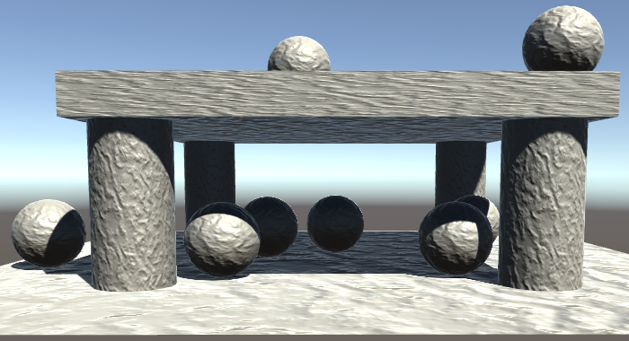

上面两张图是，使用法线贴图的情况下，实时光照和烘培光照的效果对比。可以看到在烘培光照中，法线贴图的影响几乎没有，画面中微弱的法线效果来自环境反射。
- 方向性
将 Directional Mode 设置为 Directional，就可以让法线贴图和烘培的光照协同工作。 在 Lighting/Lightmapping Settings/DirecionalMode 中，可以设置 Directional Mode = Directional。
Directional Mode=Directional 时，unity 会生成两张光照贴图，一张就像之前一样的光照强度贴图，用于存储光照强度。新的另一张为光照方向贴图 rgb 通道用于存储最多的烘培光照的来源方向，a 通道用于描述接受到的总的光照有多少来自该主导方向(totalLight*alpha=dirLight => totalLight=dirLight/alpha)。
下图为 NonDirectional 和 Directional 模式的对比：


- 使用烘培的方向贴图
// 开启烘培方向贴图的宏定义 #pragma multi_compile _ DIRLIGHTMAP_COMBINED UnityIndirect CreateIndirect(v2f i, half3 viewDir, float smoothness) { float occlusion = GetOcclusion(i); UnityIndirect indirect; #ifdef VERTEXLIGHT_ON indirect.diffuse = i.vertexLightColor; #else indirect.diffuse = 0; #endif indirect.specular = 0; #if defined(FORWARD_BASE_PASS) || defined(DEFFERRED_PASS) #if defined(LIGHTMAP_ON) //indirect.diffuse = UNITY_SAMPLE_TEX2D(unity_Lightmap, i.lightmapUV); indirect.diffuse = DecodeLightmap(UNITY_SAMPLE_TEX2D(unity_Lightmap, i.lightmapUV)); #if defined(DIRLIGHTMAP_COMBINED) // 采样烘培的方向贴图 float4 lightmapDir = UNITY_SAMPLE_TEX2D_SAMPLER(unity_LightmapInd, unity_Lightmap,i.lightmapUV); // 使用Half Lambert计算Diffuse indirect.diffuse = DecodeDirectionalLightmap(indirect.diffuse, lightmapDir, GetNormal(i)); #endif #else // 叠加环境光 indirect.diffuse += max(0, ShadeSH9(half4(i.worldNormal, 1))); #endif // ...... #endif return indirect; } inline half3 DecodeDirectionalLightmap (half3 color, fixed4 dirTex, half3 normalWorld) { // In directional (non-specular) mode Enlighten bakes dominant light // direction in a way, that using it for half Lambert and then dividing // by a "rebalancing coefficient" gives a result close to plain diffuse // response lightmaps, but normalmapped. // Note that dir is not unit length on purpose. Its length is // "directionality", like for the directional specular lightmaps. half halfLambert = dot(normalWorld, dirTex.xyz - 0.5) + 0.5; return color * halfLambert / max(1e-4h, dirTex.w); }
Light Probes
Lightmaps 只对静态物体起作用，对动态物体不起作用。这会导致动态物体无法融入烘培光照的场景。Unity 使用 LightProbe 来存储其所在点的烘培光照信息，LightProbe 没有使用贴图存储光照信息，其使用 Spherical Harmonics 存储这些信息。
场景中的动态物体会使用 LightProbe 存储的烘培光照信息来取代全局的环境数据。
Q&A
- 使用 lightmap 时，顶点着色器中传入的 lightmap uv 是如何求得的？又是如何传入顶点着色器的？
- 关于 3D 模型的二套 UV https://zhuanlan.zhihu.com/p/83322397
- 关于 3D 模型的二套 UV https://zhuanlan.zhihu.com/p/83322397
- 什么错误导致 lightmap 中不包含 Emission 颜色？
- 缺乏 Meta Pass
Meta Pass 的 Fragment 没有按照如下方式输出
float4 frag (v2f i) : SV_TARGET { UnityMetaInput surfaceData; surfaceData.Emission = GetEmissive(i); surfaceData.Albedo = GetAlbedo(i); surfaceData.SpecularColor = 0; return UnityMetaFragment(surfaceData); }
- 材质的 MaterialGlobalIlluminationFlags 没设置为 BakedEmissive
vertex 着色器函数中输出的 SV_POSITION 不正确
v2f_meta vert_test(VertexInput v) { v2f_meta o; //o.pos = UnityObjectToClipPos(v.vertex); // 这样计算得出的pos是错误的。 o.pos = UnityMetaVertexPosition(v.vertex, v.uv1.xy, v.uv2.xy, unity_LightmapST, unity_DynamicLightmapST); o.uv = TexCoords(v); return o; }
- unity lightmap 数据清除有 bug，清除 lightmap 后，隐藏一个物体，再烘培，检查数据是否正确。
lightmap 缓存极其不稳定，有时候隐藏了烘培依然不可以，需要隐藏一个其他物体再来一次。 frag 着色器的 out 标记 SV_TARGET 是否全部使用大写SV_Target 也是可以的
- 缺乏 Meta Pass
- Deferred Path 模式下，FrameDebug 中发现没有设置 unity_Lightmap unity_LightmapInd 参数
宏定义写错了 DEFERRED_PASS 写成了 DEFFERRED_PASS。导致采样 unity_Lightmap unity_LightmapInd 的代码没有执行到，所以引擎没将图片传给 GPU。
- 烘培点光源，光穿过了不透明物体
光源阴影为 None 导致该问题，需要将点光源的阴影类型设置为 Hard 或 Soft。
方向光把阴影设置为 NoneShaodws 也会穿过不透明物体。
Mixed Lighting
烘培光照贴图的优缺点
Baking Indirect Light
实时光照和烘培光照各有优缺点，通过下面方式可以将实时光照和烘培光照结合使用。
- Lighting/Mixed Lighting/Lighting Mode 设置为 Baked Indirect
- 场景中 Light 组件 Mode 选择 Mixed
这样设置时，烘培光照贴图时会发生两个变化：
- lightmapper 只会将间接光照存储到光照贴图中，所以此时的光照贴图比之前要暗一些。
- lightmap 只用于为静态物体提供间接光照，静态物体的直接光照也由场景中灯光实时提供；动态物体间接光由 light probe 提供，直接光照由场景中灯光实时提供。
注意:
在上面的设置下，静态物体也需要实时画阴影贴图。这种模式相当于实时光照的工作再加上光照贴图实现的间接光照，所以这种模式是比较消耗性能的。
Using a Shadowmask
- Lighting/Mixed Lighting/Lighting Mode 设置为 Shadowmask
- 场景中 Light 组件 Mode 选择 Baked
这样设置时，并不会生产 shadowmask，此时相当于完全烘培 （相当于 Light=Baked LightingMode=BakedIndirect 设置下的烘培）。
- Lighting/Mixed Lighting/Lighting Mode 设置为 Shadowmask
- 场景中 Light 组件 Mode 选择 Mixed
这样设置时，间接光照和 mixed lights 的阴影 attenuation 都会存储到光照贴图中，阴影会存储到单独的一张 shadowmask 贴图中。
如果只有 1 盏灯那么 shadowmask 只会占 r 通道，shadowmask 最多 4 个通道，所以最多可以支持 4 盏灯。
这种模式比 MixedLight+BakedIndirect 的优势在于静态物体不需要实时画阴影。
- Sampling the Shadowmask
float GetShadowFade(v2f i, float atten) { #if HANDLE_SHADOWS_BLENDING_IN_GI float viewZ = dot(_WorldSpaceCameraPos - i.worldPos, UNITY_MATRIX_V[2].xyz); float shadowFadeDistance = UnityComputeShadowFadeDistance(i.worldPos, viewZ); float sFade = UnityComputeShadowFade(shadowFadeDistance); float bakedAtten = UnitySampleBakedOcclusion(i.lightmapUV, i.worldPos); return UnityMixRealtimeAndBakedShadows(atten, bakedAtten, sFade); #else return atten; #endif } // unity_OcclusionMaskSelector 该向量只有一个分量会被设置为1，用于匹配当前被渲染的灯光 fixed UnitySampleBakedOcclusion (float2 lightmapUV, float3 worldPos) { #if defined (SHADOWS_SHADOWMASK) #if defined(LIGHTMAP_ON) fixed4 rawOcclusionMask = UNITY_SAMPLE_TEX2D_SAMPLER(unity_ShadowMask, unity_Lightmap, lightmapUV.xy); #else fixed4 rawOcclusionMask = UNITY_SAMPLE_TEX2D(unity_ShadowMask, lightmapUV.xy); #endif return saturate(dot(rawOcclusionMask, unity_OcclusionMaskSelector)); #else return 1.0; #endif } inline half UnityMixRealtimeAndBakedShadows (half realtimeShadowAttenuation, half bakedShadowAttenuation, half fade) { // 无实动态阴影时，直接使用烘培的attenuation #if !defined(SHADOWS_DEPTH) && !defined(SHADOWS_SCREEN) && !defined(SHADOWS_CUBE) return bakedShadowAttenuation; #endif #if defined (SHADOWS_SHADOWMASK) #if defined (LIGHTMAP_SHADOW_MIXING) realtimeShadowAttenuation = saturate(realtimeShadowAttenuation + fade); return min(realtimeShadowAttenuation, bakedShadowAttenuation); #else // shadowFadeDistance范围内，使用sFadeFactor在实时阴影和烘培阴影之间插值 // 超出shadowFadeDistance后，直接使用烘培的attenuation return lerp(realtimeShadowAttenuation, bakedShadowAttenuation, fade); #endif #else //no shadowmask 没有使用shadowmask时，使用实时阴影atten+shadowFadeFactor return saturate(realtimeShadowAttenuation + fade); #endif }
- Support Deferred Path
DeferredShading 中将 ShadowMask 写入到 GBuffer4 中
DeferredLighting 中读取 GBuffer4 内容，对直接光照进行衰减
// DeferredShading (MixedLighting.shader) struct frag_output { #if defined(DEFERRED_PASS) float4 gBuffer0 : SV_Target0; float4 gBuffer1 : SV_Target1; float4 gBuffer2 : SV_Target2; float4 gBuffer3 : SV_Target3; #if defined(SHADOWS_SHADOWMASK) && (UNITY_ALLOWED_MRT_COUNT>4) float4 gBuffer4 : SV_Target4; #endif #else float4 color : SV_Target; #endif }; frag_output frag (v2f i) { frag_output output; // ...... #if defined(SHADOWS_SHADOWSMASK) && (UNITY_ALLOWED_MRT_COUNT>4) float2 shadowUV = 0; #if defined(LIGHTMAP_ON) shadowUV = i.lightmapUV; #endif output.gBuffer4 = UnityGetRawBakedOcclusions(shadowUV, i.worldPos.xyz); #endif } // DeferredLighting (MixedLighting_DeferredLighting.shader) float GetShadowMaskAttenuation(float2 uv) { float atten = 1; #if defined(SHADOWS_SHADOWMASK) float4 mask = tex2D(_CameraGBufferTexture4, uv); atten = saturate(dot(mask, unity_OcclusionMaskSelector)); #endif return atten; } UnityLight CreateLight(float2 uv, float3 worldPos, float viewZ) { UnityLight light; float atten = 1; float sAtten = 1; float sFade = GetShadowFade(worldPos, viewZ); bool shadowed = false; // ...... #if defined(SHADOWS_SHADOWMASK) shadowed = true; #endif if (shadowed) { float smAtten = GetShadowMaskAttenuation(uv); sAtten = UnityMixRealtimeAndBakedShadows(sAtten, smAtten, sFade); //sAtten = saturate(sAtten + sFade); #if defined(UNITY_FAST_COHERENT_DYNAMIC_BRANCHING) && defined(SHADOWS_SOFT) #if !defined(SHADOWS_SHADOWMASK) UNITY_BRANCH if (sFade > 0.99) { sAtten = 1; } #endif #endif } light.color = _LightColor.rgb * atten * sAtten; return light; }
- Distance Shadowmask Mode
Unity2017 版本之前 Distance Shadowmask 在 Lighting Setting 中设置，Unity2017 版本以及之后版本在 QualitySettings 中设置。
注意：
这种模式下，ShadowDistance 外使用 ShadowMask（相当于 ShadowMask 模式），ShadowDistance 内使用实时阴影（相当于 MixedLight+BakedIndirect，静态物体和动态物体都需要绘制阴影贴图，所以这种模式也是比较消耗性能的）。
- Multiple Lights
//ForwardAdd Pass 添加如下代码，UNITY_LIGHT_ATTENUATION 就可以正确工作了 #pragma multi_compile _ SHADOWS_SHADOWMASK
Subtractive Shadows
- 简介
Subtractive mode 只适用于 forward path。Subtractive Mode 的理念是静态物体依然通过 lightmaps 照亮，并且同时将动态物体的阴影因素考虑进去，这是通过减低阴影区域光照贴图的亮度来实现的。这种方式不生成 Shadow Mask 贴图。
Subtractive mode 只适用于一个方向光，因此只支持主方向光的阴影。
Light Mode 为 Mixed，三种 Lighting Mode（BakedIndirect ShadowMask Subtractive）对应的 Lightmap 贴图的对比如下（由烘培 16StaticLighting_Unity 场景生成）：
Light Mode 为 Mixed，三种 Lighting Mode（BakedIndirect ShadowMask Subtractive）对应的生成阴影贴图的 drawcall：
注意： LightMode 为 Mixed，Lighting Mode 为 BakedIndirect 时，静态物体依然会绘制阴影。
- 实现
#if defined(LIGHTMAP_ON) && defined(SHADOWS_SCREEN) #if defined(LIGHTMAP_SHADOW_MIXING) && !defined(SHADOWS_SHADOWMASK) #define SUBTRACTIVE_LIGHTING 1 #endif #endif UnityLight CreateLight (Interpolators i) { UnityLight light; // Subtractive模式下，静态物体的直接光照都被烘培到lightmap中了，不需要计算直接光照 #if defined(DEFERRED_PASS) || SUBTRACTIVE_LIGHTING light.dir = float3(0, 1, 0); light.color = 0; #else // ...... #endif return light; } // Unity实现中对应的函数为：SubtractMainLightWithRealtimeAttenuationFromLightmap void ApplySubtractiveLighting(v2f i, inout UnityIndirect indirect) { #if SUBTRACTIVE_LIGHTING UNITY_LIGHT_ATTENUATION(attenuation, i, i.worldPos.xyz); attenuation = GetShadowFade(i, attenuation); //float ndotl = 1; //使用顶点属性插值得到的normal计算所得的阴影非常淡 发现是因为没有对插值后的normal进行单位化导致的。 //float ndotl = saturate(dot(i.worldNormal, _WorldSpaceLightPos0.xyz)); float ndotl = saturate(dot(normalize(i.worldNormal), _WorldSpaceLightPos0.xyz)); float3 needMinusLight = ndotl * _LightColor0.rgb * (1 - attenuation); float3 subtractedLight = indirect.diffuse - needMinusLight; subtractedLight = max(subtractedLight, unity_ShadowColor.rgb); // 支持ShadowStrength subtractedLight = lerp(subtractedLight, indirect.diffuse, _LightShadowData.x); // 静态物体上烘培的阴影也会显示unity_ShadowColor.rgb颜色 //indirect.diffuse = indirect.diffuse; // 只修改动态物体在静态物体上投射的阴影 indirect.diffuse = min(subtractedLight, indirect.diffuse); #endif }
总结
Lighting Setting 中选中 Mixed Lighting/Baked Global Illumination 勾选框，开启离线烘培。
离线烘培结果由以下 4 个配置决定：
- Lighting/Scene/LightingSetting/Mixed Lighting/Lighting Mode (BakedIndirect, Shadowmask, Subtractive)
- Lighting/Scene/LightingSetting/Lightmapping Settings/Directional Mode (Directional, Non-Directional)
- 场景中 Light 的 Mode (Realtime, Baked, Mixed)
- 场景中 GameObject 的 Static Mark 是否包含 Contribute GI(unity 2020 版本) | Lightmap Static(unity 2017 版本)
场景中元素对烘培的贡献：
- Light: 被标记为 Realtime 的 Light 对离线烘培系统不产生任何影响。
- Object:
- 动态物体不会对离线烘培系统产生任何影响。例如，烘培场景时，动态的发绿色光的球不会导致 lightmap 贴图变绿。
- 离线烘培的 LightProbe 会为动态物体提供间接光照。离线烘培的 lightmap 会为静物体提供间接光照（某些情况下，还包含直接光照）。
- 动态物体不会对离线烘培系统产生任何影响。例如，烘培场景时，动态的发绿色光的球不会导致 lightmap 贴图变绿。
使用离线烘培对渲染的影响包括一下方面：
- 直接光间接光如何计算
- diffuse 如何计算
- specular 如何计算
- diffuse 如何计算
- 阴影如何计算
Light 对象的 Mode 为 Baked 时，Lighting Mode 任意：
- 直接光和间接光都烘培，两者都在 lightmap 中。运行时，Baked Light 对动态物体不起任何作用。烘培的 LightProbe 为动态物体提供间接光照。
- 无 specular。
- 阴影包含在 lightmap 中。动态物体对静态物体不投影。静态物体对动态物体不投影。
| Mixed | |
|---|---|
| BakedIndirect | 只烘培间接光，直接光实时计算 |
| 有 specular。 | |
| 静态物体也需要实时生成阴影贴图。 | |
| Shadowmask | 只烘培间接光，直接光实时计算。 |
| 有 specular。 | |
| 烘培 ShadowMask。静态物体不需要实时生成阴影贴图。静态物体无法在动态物体上投影 | |
| DistanceShadowmask | 只烘培间接光，直接光实时计算。 |
| 有 specular。 | |
| 烘培 ShadowMask。远处的静态物体不需实时生成阴影贴图。近处的静态物体需实时生成阴影贴图，近处的静态物体可在动态物体上投影 | |
| Subtractive | 直接光和间接光都烘培，两者都在 lightmap 中。 |
| 无 specular。 | |
| 阴影包含在 lightmap 中。动态物体对静态物体投影，静态物体对动态物体不投影 |
Tips:
烘培时设置灯光 Mode 为 Baked. 运行起来后修改 Light 的 Mode 不起作用。
下图是 Light Mode Baked VS Mixed 的对比，从图可以看出：
- Light Mode 为 Baked 时，不同 Lighting Mode 设置并不会起作用，此时 Lighting Mode 相当于 BakedIndirect。
- Light Mode 为 Mixed 时，烘培的光照贴图会变暗，因为此时只烘焙了间接光照。
Q&A
- 如果烘培灯光和实时灯光分开，烘培灯光的 Mode 使用 Baked，实时灯光的 Mode 使用 Realtime，这样做是否合理？
一般来说，这样做是不正确的，这会导致 Realtime 灯光没有间接光照效果。但是，也要考虑项目的实际情况，例如，灯光会移动时，应该将其设置为 realtime，灯光移动时间接光照不动会导致穿帮。
- 烘培灯光的情况下，如何解决静态物体无法在动态的物体上投影的问题？
LightMode 为 Mixed，LightingMode 为 BakedIndirect，ShadowDistance 范围内的静态物体也会绘制阴影贴图，从而可以解决该问题。
LightMode 为 Mixed，LightingMode 为 ShadowMask，ShadowMask Mode 为 Distance ShadowMask 的情况下，ShadowDistance 范围内的静态物体也会绘制阴影贴图，从而可以解决该问题。
LightMode 为 Mixed，LightingMode 为 ShadowMask，ShadowMask Mode 为 ShadowMask 的情况下，静态物体不会绘制阴影贴图，因此静态物体不会在动态物体上投影。
LightMode 为 Mixed，LightingMode 为 Substractive 的情况下，静态物体不会绘制阴影贴图，因此静态物体不会在动态物体上投影。
- ERROR: Deferred Path 模式下，点击 Generate Lighting 没有烘培出光照贴图
关闭 Unity，重新打开，可以解决该问题。
- Deferred Path 模式下的间接光照计算是怎样的？
indirect.diffuse DeferredPath 和 ForwardPath 计算相同，会将结果直接写入 GBuffer3 中。
indirect.specular 的计算则分是否开启屏幕空间反射，不开启时，DeferredPath 和 ForwardPath 计算相同，会将结果直接写入 GBuffer3 中。开启时，则在屏幕空间反射时计算。
- Error: 阴影轮廓处有光晕
经过检查发现是计算 Normal 时有错误，在下面代码的注释中有具体说明
float3 GetNormal(v2f i) { float3 normal = float3(0, 1, 0); #if defined(_NORMAL_ON) normal.xy = tex2D(_NormalMap, i.uv).wy * 2 - 1; normal.xy *= _BumpScale; normal.z = sqrt(1 - saturate(dot(normal.xy, normal.xy))); normal = normal.xzy; #endif #if defined(_NORMALDETAIL_ON) float3 detailNormal; detailNormal.xy = tex2D(_DetailNormal, i.uv).wy * 2 - 1; detailNormal.xy *= _BumpScale; detailNormal.z = sqrt(1 - saturate(dot(detailNormal.xy, detailNormal.xy))); detailNormal = lerp(float3(0,1,0), detailNormal.xzy, GetDetailMask(i)); normal.x = normal.x + detailNormal.x; normal.y = normal.y * detailNormal.y; normal.z = normal.z + detailNormal.z; #endif normal = normalize(normal); #define __CALC_WORLDSPACE_NORMAL #if defined(__CALC_WORLDSPACE_NORMAL) float3 wTangent = i.tangentToWorld[0]; float3 wBinormal = i.tangentToWorld[1]; float3 wNormal = i.tangentToWorld[2]; // 上面代码已经将normal向上的分量从z换到了y，所以这里和wNormal相乘的应该时normal的y分量 // normal = normalize(wTangent*normal.x + wBinormal*normal.y + wNormal*normal.z); normal = normalize(wTangent*normal.x + wNormal*normal.y + wBinormal*normal.z); #endif return normal; }
- Error: Subtractive 模式下动态物体的阴影很淡

void ApplySubtractiveLighting(v2f i, inout UnityIndirect indirect) { #if SUBTRACTIVE_LIGHTING UNITY_LIGHT_ATTENUATION(attenuation, i, i.worldPos.xyz); attenuation = GetShadowFade(i, attenuation); // 使用顶点属性插值得到的normal计算所得的阴影非常淡 发现是因为没有对插值后的normal进行单位化导致的。 //float ndotl = saturate(dot(i.worldNormal, _WorldSpaceLightPos0.xyz)); float ndotl = saturate(dot(normalize(i.worldNormal), _WorldSpaceLightPos0.xyz)); float3 needMinusLight = ndotl * _LightColor0.rgb * (1 - attenuation); float3 subtractedLight = indirect.diffuse - needMinusLight; indirect.diffuse = max(subtractedLight, unity_ShadowColor.rgb); #endif }
RealtimeGI ProbeVolumes LOD Groups
Realtime Globall Illumination
- 简介
烘培光照虽然对静态几何体(通过光照贴图)和动态几何体(通过光照探针)起作用，但是烘培光照无法处理动态光照(Realtime Mode Light)。Mixed Mode Light 可以实时调节一些参数，但是过多的调整会让没有改变的烘培间接光照变得很明显。所以，当你有一个室外的场景时，太阳是不能改变的，它不能像真实生活中一样东升西落在空中穿行，因为这需要不断改变全局照明，所以只能让场景冻结在某个时间点上。
为了让间接光照支持光照方向的实时改变，Unity 使用 Enlighten 系统来计算实时全局照明。其就像烘培间接光一样工作，不同的是 Enlighten 是在运行时计算光照贴图和光照探针的。
计算间接光需要知道光照在静态表面之间是如何弹射的，也就是需要知道哪些表面有可能会被哪些表面在哪些角度上产生影响。计算出这些关系需要很多工作，不可能在运行时完成。所以，这些数据是由编辑器计算并存储起来，运行时 Enlighten 会利用这些数据来计算光照贴图和光照探针。即使如此，实时全局照明也只适用于低分辨率的光照贴图。
注意：无论是 RealtimeGI 的光照贴图，还是 BakedGI 的光照贴图，只有标记为 Lightmap 静态的物体，才会使用烘培的光照贴图。而动态的物体则使用烘培的 LightProbe 数据。
- Baking Realtime GI
Realtime GI 使用自己的 lightmap 坐标，Unity 会基于光照贴图和物体的设置自动生成这些 UV 坐标，这些 UV 坐标值被存储到 Mesh 的第三套 UV 通道。
v2f vert(appdata v) { v2f o; UNITY_INITIALIZE_OUTPUT(v2f, o); // unity_LightmapST 是烘培光照贴图UV的偏移和缩放 // unity_DynamicLightmapST是动态光照贴图UV的偏移和缩放 o.pos = UnityMetaVertexPosition(v.vertex, v.uv1.xy, v.uv2.xy, unity_LightmapST, unity_DynamicLightmapST); o.uv.xy = TRANSFORM_TEX(v.uv, _MainTex); o.uv.zw = TRANSFORM_TEX(v.uv, _DetailTex); return o; } float4 UnityMetaVertexPosition (float4 vertex, float2 uv1, float2 uv2, float4 lightmapST, float4 dynlightmapST) { // 通过unity_MetaVertexControl来控制当前操作的是烘培光照GI还是动态光照GI if (unity_MetaVertexControl.x) { vertex.xy = uv1 * lightmapST.xy + lightmapST.zw; // OpenGL right now needs to actually use incoming vertex position, // so use it in a very dummy way vertex.z = vertex.z > 0 ? 1.0e-4f : 0.0f; } if (unity_MetaVertexControl.y) { vertex.xy = uv2 * dynlightmapST.xy + dynlightmapST.zw; // OpenGL right now needs to actually use incoming vertex position, // so use it in a very dummy way vertex.z = vertex.z > 0 ? 1.0e-4f : 0.0f; } return UnityObjectToClipPos(vertex); }
注意：
烘培光照贴图和实时光照贴图都会用到 meta pass。所以当开启实时 GI 时，在打包的时候 meta pass 也会被包含进去。
- Sampling Realtime Lightmaps
所有的实时灯光都会对实时 GI 有贡献。但是，典型的用法是，只将主方向光作用于实时 GI，因为主方向光代表着太阳，其会在天空中移动。实时 GI 的所有功能对方向光都是有效的，实时 GI 不支持点光源和 SpotLight 的阴影。因此，当使用会投影的点光源和 SpotLight 时，最终会得到不正确的间接光照。
如果你想将某个实时光从实时 GI 中排除，只需要将该灯光的 IndirectMultiplier 设置为 0。
UnityIndirect CreateIndirect(v2f i, half3 viewDir, float smoothness) { float occlusion = GetOcclusion(i); UnityIndirect indirect; // ...... #if defined(DYNAMICLIGHTMAP_ON) // 动态Lightmap使用了和静态Lightmap不同的颜色格式，需要不同的解码 float3 dynamicLightDiffuse = DecodeRealtimeLightmap(UNITY_SAMPLE_TEX2D(unity_DynamicLightmap, i.dynamicLightmapUV)); #if defined(DIRLIGHTMAP_COMBINED) float4 dynamicLightmapDir = UNITY_SAMPLE_TEX2D_SAMPLER(unity_DynamicDirectionality, unity_DynamicLightmap,i.dynamicLightmapUV); indirect.diffuse += DecodeDirectionalLightmap(dynamicLightDiffuse, dynamicLightmapDir, GetNormal(i)); #else indirect.diffuse += dynamicLightDiffuse; #endif #endif #if !defined(LIGHTMAP_ON) && !defined(DYNAMICLIGHTMAP_ON) // 叠加环境光 indirect.diffuse += max(0, ShadeSH9(half4(i.worldNormal, 1))); #endif // ....... }
- Emissive Light
public class EmissiveOscillator : MonoBehaviour { Renderer r; Material mat; void Start() { r = GetComponent<Renderer>(); mat = r.material; } void Update() { Color c = Color.Lerp(Color.white, Color.black, Mathf.Sin(Time.time * Mathf.PI) * 0.5f + 0.5f); mat.SetColor("_EmissionColor", c); // 更新实时GI // 下面代码会触发使用MetaPass渲染物体，将EmissionColor传递给Enlighten //r.UpdateGIMaterials(); // 下面代码不会触发MetaPass渲染物体，只是直接将EmissionColor传递给Enlighten DynamicGI.SetEmissive(r, c); } }
Light Probe Proxy Volumes
烘培 GI 和实时 GI 都是通过 LightProbe 作用于动态物体的。物体的位置用于插值 LightProbe 数据，插值得到的数据再应用于 GI。这对于小物体来说是可行的，但是对于大物体来说就太粗暴了。
LLPV（light probe proxy volume）可以解决该问题。其会传递给 shader 一组经过插值的 LightProbe 数据，而不是一个。这些数据会存储到一张浮点型 3D 贴图中，且该贴图需要支持线性过滤模式，只有现代图形显卡才能支持。
在 Graphics/TierSettings/EnableLightProbeProxyVolume 中开启 LightProbeProxyVolume。
#if !defined(LIGHTMAP_ON) && !defined(DYNAMICLIGHTMAP_ON) #if UNITY_LIGHT_PROBE_PROXY_VOLUME if (unity_ProbeVolumeParams.x == 1) { // Light Probe Proxy Volume 只使用了两个基带 indirect.diffuse = SHEvalLinearL0L1_SampleProbeVolume(float4(i.worldNormal, 1), i.worldPos); indirect.diffuse = max(0, indirect.diffuse); #if defined(UNITY_COLORSPACE_GAMMA) indirect.diffuse = LinearToGammaSpace(indirect.diffuse); #endif } else { // 叠加环境光 LightProbe ShadeSH9中已经处理了颜色空间的问题 indirect.diffuse += max(0, ShadeSH9(half4(i.worldNormal, 1))); } #else // 叠加环境光 LightProbe indirect.diffuse += max(0, ShadeSH9(half4(i.worldNormal, 1))); #endif #endif
LOD Groups
- Baked GI and Lod Group
在烘培静态光照贴图时，使用的是 LOD0。即使在运行时显示的是 LOD1 或者是 LOD culled ，此时阴影和间接光照都是使用的烘培 LOD0 所得数据。
但是 LOD1 依然会使用 lightmap，其采样的数据和 LOD0 采样的数据并不同(分布在 lightmap 贴图的不同位置)，Unity 利用烘培的 LightProbe 来计算 LOD1 的间接光照然后写入到 Lightmap 中，所以烘培带有 LOD 的场景时，需要添加 LightProbe，否则 LOD1 的间接光照会变为黑色，从而显得很暗。
下图是，开启 LightProbe 和关闭 LightProbe 烘焙场景得到的不同效果:

- Realtime GI and Lod Group
当只开启 Realtime GI 时（LightingSeting 中，勾选 RealtimeGlobalIllumination，并且取消勾选 BakedGlobalIllumination），在运行时 Lod0 依然使用实时烘培的光照贴图，而 Lod1 会使用 LightProbe 数据(运行时，选中显示 Lod1 的物体，SceneView 下可以看到其使用的 LightProbe，这里需要强调的是，即使 Lod1 是静态物体其使用的也是 LightProbe)。
在同时使用 RealtimeGI 和 BakedGI 时（LightingSeting 中，勾选 RealtimeGlobalIllumination，并且勾选 BakedGlobalIllumination），Lod0 会同时使用 Realtime Lightmap （实时光的贡献）和 Baked Lightmap（烘培光的贡献），而 Lod1 只会使用 Baked Lightmap，因为 lightmap 和球谐光照无法同时使用，Lod1 就不会受到 realtime GI 的影响。
注意：烘培和渲染 Lod 是完全独立的，如果实时 GI 比烘培 GI 更重要，可以在运行时设置 LOD1 为非 lightmap-static，这样 LOD1 就会使用 Realtime GI 的 LightProbe。
- Cross-fading Between Lod Levels
#pragma multi_compile _ LOD_FADE_CROSSFADE // 4*64 大小贴图 sampler2D _DitherMaskLOD2D; void UnityApplyDitherCrossFade(float2 vpos) { vpos /= 4; // the dither mask texture is 4x4 // unity_LODFade变量存储了当前fade的总量，整个过程一共16步(fade一步的值为1/16) // quantized lod fade by 16 levels vpos.y = frac(vpos.y) * 0.0625 /* 1/16 */ + unity_LODFade.y; clip(tex2D(_DitherMaskLOD2D, vpos).a - 0.5); }
unity_LODFade.x 0-1 范围的 fade 值
unity_LODFade.y 量化为 16 阶后的 fade 值
- Q&A
GPU Instancing
Batching Instances
- Baching 简介
向 GPU 提交绘制命令会花费时间。将数据（mesh 和材质属性）提交给 GPU 也会耗费时间。
- Static Batching
Unity 可以将很多材质相同的静态物体合并为一个大的静态物体（可以减少 SetPassCall 但减少 DrawCall 的程度会打折扣），只有使用相同材质的物体才能以这种方式合并。Static Batching 会增加包体大小和内存消耗（使用相同 Mesh 的多个物体被合并为一个大的静态物体时，不会公用同一个 Mesh，而是对一个 Mesh 复制多次来填充大 Mesh，所有定点都被变换到同一个模型坐标系下，所以无法公用同一个 Mesh）
- Static Batching 可以减少 SetPassCall，但减少 DrawCall 的程度会打折扣。(lightmap 不同，submesh 被遮挡剔除都会打断 drawCall)
Tips:
SetPassCall 是切换材质时，执行的操作。StaticBatch 将相同材质的物体合并在一起，因此可以减少 SetPassCall
- Static Batching 可以减少 SetPassCall，但减少 DrawCall 的程度会打折扣。(lightmap 不同，submesh 被遮挡剔除都会打断 drawCall)
- Dynamic Batching:
Dynamic Batching for meshes: 对于足够小的一系列 Mesh，运行时 Unity 在 CPU 端会将他们变换到世界空间，将他们合并为一个大的 mesh(动态合并大物体的消耗太大了)。(可以减少 DrawCall)
Dynamic batching for dynamically generated geometries: 对于 Build-in Particle Systems, Line Renderers, Trail Renderers。动态合批的工作方式如下：(不能减少 DrawCall)
- 对于每个 Renderer，Unity 会将所有可以动态合批的内容构建到一个大的顶点缓存区中。
- renderer 会设置该 batch 的材质状态
- Unity 将顶点缓冲区绑定到 GPU
- 对于 batch 内的每个 renderer，Unity 会更新顶点缓冲区的偏移量，然后提交一个新的 draw call
- 对于每个 Renderer，Unity 会将所有可以动态合批的内容构建到一个大的顶点缓存区中。
- GPU Instancing
运行时通知 GPU 绘制同一个 mesh 多次，GPU Instancing 无法将不同的 mesh 或材质合并，但是其并不要求 mesh 必须为小 mesh。
- Baching Compare Batching Compare
- Baching Compare Batching Compare
- Static Batching
- Support GPU Instancing
- 支持 GPU Instancing
struct appdata { // 定义系统变量SV_InstanceID UNITY_VERTEX_INPUT_INSTANCE_ID float4 vertex : POSITION; float2 uv : TEXCOORD0; float3 normal : NORMAL; float4 tangent: TANGENT; float2 uv1 : TEXCOORD1; float3 uv2 : TEXCOORD2; }; vert_out vert (appdata v) { vert_out o; UNITY_INITIALIZE_OUTPUT(vert_out, o); // 求解当前实例的 Obj2World World2Obj矩阵 UNITY_SETUP_INSTANCE_ID(v); // ...... }
- Unity 对 GPU Instancing 的封装
// 定义instanceID static uint unity_InstanceID; CBUFFER_START(UnityDrawCallInfo) // Where the current batch starts within the instanced arrays. int unity_BaseInstanceID; CBUFFER_END // 系统变量名称SV_InstanceID #define UNITY_VERTEX_INPUT_INSTANCE_ID uint instanceID : SV_InstanceID; #define UNITY_SETUP_INSTANCE_ID(input) \ unity_InstanceID = input.instanceID + unity_BaseInstanceID; // Redefine some of the built-in variables / // macros to make them work with instancing. UNITY_INSTANCING_CBUFFER_START(PerDraw0) float4x4 unity_ObjectToWorldArray[UNITY_INSTANCED_ARRAY_SIZE]; float4x4 unity_WorldToObjectArray[UNITY_INSTANCED_ARRAY_SIZE]; UNITY_INSTANCING_CBUFFER_END // 使用instance数据覆盖原始定义内容 #define unity_ObjectToWorld unity_ObjectToWorldArray[unity_InstanceID] #define unity_WorldToObject unity_WorldToObjectArray[unity_InstanceID]
forward base pass, shadow pass, deferred pass 都支持 GPU Instancing.
forward add pass 不支持 GPU Instancing.
- 支持 GPU Instancing
- Batch Size
每个 Batch 都需要自己的矩阵数组。这些数据被发送给 GPU，然后被存储在内存缓冲区(D3D 的 ConstantBuffer,OpenGL 的 UniformBuffer)中。这些缓冲区有最大容量限制，这限制了每个 batch 的实例数量。
假设台式机每个 UniformBuffer 的大小为 64KB，一个矩阵有 16 个浮点数，每个浮点数需要 4 字节存储，每个实例需要 1 个 object-to-world 变换矩阵，如果使用了法线贴图，则还需要 1 个 world-to-object 变换矩阵(用于将法线变换到世界空间)
16*4*2 = 128Byte 64KB/128B=64*1024B/128=512
UNITY_INSTANCED_ARRAY_SIZE 默认被定义为 500, 移动平台下被定义为 250.
// 通过下面的指令可以将实例数量修改为512 #pragma instancing_options maxcount:512
- GPUInstancing https://docs.unity3d.com/Manual/GPUInstancing.html
- GPUInstancing https://docs.unity3d.com/Manual/GPUInstancing.html
Mixing Material Properties
所有 DrawCall Batching 都需要物体使用相同的材质。
可以通过 MaterialPropertyBlock 来修改材质属性，从而实现使用相同材质的物体可以有不同的外观，但是通过 MaterialPropertyBlock 修改材质属性，依然会导致 GPU Instancing 失败，因为不同的实例使用了不同的材质属性。
只有在 shader 中定义一个被修改属性的 buffer，Unity 才会将存储在 Material Property Block 中的属性当作数组传递到 GPU(和 Unity 在 GPUInstancing 时对变换矩阵数组的操作一样)，此时 GPU Instancing 才会生效。
MaterialPropertyBlock 支持 Color,Float,Matrix,Vector 类型的属性，如果想支持 Texture 类型，可以使用 TextureArray 然后添加一个 Index 属性将 Index 属性放到 InstancingBuffer 中。
多个属性可以组合放在同一个 Buffer 中，需要注意每个 Buffer 有尺寸限制。另外，Buffer 都是 32 位对齐的，也就是说一个 Float 占用的空间和一个 Vector 占用空间相同。可以使用多个 Buffer，但是 Buffer 的数量也是有限制的，而且 Buffer 也是有性能消耗的。当 GPUInstancing 开启后，每个被放入 Buffer 的属性都会变为一个数组，所以应该只将每个实例都不同的属性放入 Buffer。
struct appdata { // 定义系统变量 SV_InstanceID UNITY_VERTEX_INPUT_INSTANCE_ID float4 vertex : POSITION; float2 uv : TEXCOORD0; float3 normal : NORMAL; float4 tangent: TANGENT; float2 uv1 : TEXCOORD1; float3 uv2 : TEXCOORD2; }; struct vert_out { // 定义系统变量 SV_InstanceID UNITY_VERTEX_INPUT_INSTANCE_ID float4 uv : TEXCOORD0; float4 pos : SV_POSITION; float3 worldNormal : TEXCOORD1; // ...... }; struct frag_in { // 定义系统变量 SV_InstanceID UNITY_VERTEX_INPUT_INSTANCE_ID float4 uv : TEXCOORD0; // ...... }; vert_out vert (appdata v) { vert_out o; UNITY_INITIALIZE_OUTPUT(vert_out, o); UNITY_SETUP_INSTANCE_ID(v); // 将InstanceID传递到fragment UNITY_TRANSFER_INSTANCE_ID(v, o); // ....... return o; } float GetAlpha(frag_in i) { // 使用InstanceID获取当前实例的属性 float alpha = UNITY_ACCESS_INSTANCED_PROP(InstanceProperties, _Color).a; return tex2D(_MainTex, i.uv.xy).a * alpha; }
// 下面代码会将 unity_LODFade 放入Buffer，这样在设置LodFadeMode=CrossFade时，GPUInstancing不会失效 #pragma instancing_options lodfade
Parallax
参考资料
- Parallax-Mapping https://learnopengl.com/Advanced-Lighting/Parallax-Mapping
- Learn about Parallax en https://github.com/UPBGE/upbge/issues/1009
- Learn about Parallax cn https://zhuanlan.zhihu.com/p/128682162
Advanced Rendering
Flat and Wireframe Shading
Barycentric Coordinates
Q&A
Tessellation
Q&A
- ERROR: 'patchconstantfunc(function name)' attribute expected, where 'function name' is the name of the patch constant value evaluation function at ……
Unity_patchconstantfunc 改为 UNITY_patchconstantfunc 就可以了。
- ERROR: 'vert': cannot convert from 'struct TessControlPoint' to 'struct appdata'
TessControlPoint 中成员使用了 float 类型，appdata 中使用的 half 类型。使用同一类型就可以了
Surface Displacement
Bloom
Depth of Field
光学原理
- 光学成像原理之景深 https://blog.csdn.net/mingjinliu/article/details/103648118 有道笔记有备份
实现原理
- COC Pass (CircleOfConfusionPass)
采样摄像机深度贴图，转化为摄像机空间中的深度，计算 COC，将 COC 的值写入 RT。
计算 COC 公式如下：
COC = (EyeDepth - _FocusDistance)/_FocusRange;
Circle of confusion 是物体上一个点在胶片上对应的一个圆圈
- PreFilterPass
对原来的 RenderTarget 进行 DownSampling，同时将 COC 的值写入到 A 通道。
Tips：
降采样，为了保证图片不变暗颜色的权重计算使用下面方法：
half ColorWeight(half3 c) { return 1 / (1 + max(max(c.r, c.g),c.b)); }
降采样，为了保证 coc 值正确，写入的 coc 做如下取舍：
half coc0 = tex2D(_CoCTex,i.uv + o.xy).r; half coc1 = tex2D(_CoCTex,i.uv + o.zy).r; half coc2 = tex2D(_CoCTex,i.uv + o.xw).r; half coc3 = tex2D(_CoCTex,i.uv + o.zw).r; half cocMin = min(min(min(coc0, coc1), coc2), coc3); half cocMax = max(max(max(coc0, coc1), coc2), coc3); half coc = cocMax >= -cocMin ? cocMax : cocMin;
- Bokeh
Bokeh Pass 主要模拟了 DOF 模糊的圆圈效果。
CoC(Circle Of Confusion) 决定了 Bokeh 效果在每个点上的强度，Aperture 决定了 Bokeh 的形状。图片是由很多个 Aperture 形状投影到成像平面得到的。
一种创建 Bokeh 的方法是，使用每个图元的颜色为该图元渲染一个 Sprite，Sprite 的大小和不透明度都基于图元的 CoC（这种方式耗费很大，其需要大量的 Overdraw）。（该方法是将一个片段投影到多个片段上）
另一种方式是，每个片段从所有可能影响该片段的图元累加颜色，这种方法不需要额外的几何体，但是需要进行多次贴图采样。
使用 DiskKernels 来对上一步生成的贴图进行采样(以当前像素点为中心采样一个圆盘)，每个样本的权重按照如下方式来计算：
half Weight(half coc, half radius) { //return coc >= radius; // 如果coc大于radius则权重为1，否则为0 return saturate((coc - radius + 2) / 2); }
实现中可以利用 COC 的正负来分离开 DOF 的前景和背景，coc 为负的部分为前景，正的部分为背景。
- PostFilterPass
使用 Tent Filter 进一步将 DOF 的结果模糊，减弱 Bokeh 圆圈上很多个小圆点的 Artifact。
- CombinePass
使用 CoC Texture 来指导 DOF 贴图和原始未模糊的贴图.
half dofStrength = smoothstep(0.1, 1, abs(coc)); half3 color = lerp(source.rgb, dof.rgb, dofStrength);
FXAA
SSAA MSAA
SSAA 通过渲染更大分辨率的画面，通过 Downsampling 来消除锯齿。
MSAA 一个片段中分配多个采样点 N，计算被覆盖的采样点个数 X，从而获得当前片段颜色和片段中原始颜色的混合比例（X/N 为当前片段颜色 N-X/N 为原始颜色）。
MSAA 跟 SSAA 不同的地方在于，SSAA 对于所有子采样点着色，而 MSAA 只使用当前像素中心点对应的属性进行着色。这是 MSAA 相对于 SSAA 来说最大的好处。
MSAA 样本位置和重建函数都依赖于硬件实现(新的 GPU 和图形 API 支持在着色器中自定义重建过程)。
开启 MSAA 时，光栅化阶段执行的操作：
- 光栅化插值顶点属性时，取像素中心点对应的位置（因为，pixel shader 调用的位置就是在像素中心点），来生成该像素对应的属性。
对于每个样本都会执行覆盖测试(样本位置依赖于硬件实现)，而不再对像素中心点执行覆盖测试。如果样本在三角形内（或者样本通过了 top-left rule），则其对应的 mask[sampleIdx]被设置为 1.
- Tips: 如果像素内没有样本被覆盖，就算像素中心点被覆盖了，该像素依然不会被渲染。如下图最左边从上往下第二个三角形。

- Tips: 如果像素内没有样本被覆盖，就算像素中心点被覆盖了，该像素依然不会被渲染。如下图最左边从上往下第二个三角形。
- 如果 Early-Per-Fragment Test 开启，则对于被覆盖的每个样本（mask 为 1 的样本）都会执行 Scissor Test、 Stencil Test、Depth Buffer Test。（每个样本可能由不同的三角形覆盖）。
开启 MSAA 时，Pixel Shader 执行的操作：
- Pixel Shader 使用像素中心点对应的属性执行 Pixel Shader 中的计算。
开启 MSAA 时，Per-Fragment Operations 阶段：
- 将 Pixel Shader 中计算的结果，copy 到有效样本（对于 mask 为 1 切通过 depth-stencil 测试的样本）对应的 multisample buffer 中。
- 如果 Early-Per-Fragment Test 没有开启，则对于被覆盖的每个样本（mask 为 1 的样本）都会执行 Scissor Test、 Stencil Test、Depth Buffer Test。
- 对每个有效样本执行 blending dithering 以及 logical operations。此时，修改的都是 multisample buffer 中的内容，而不是 color buffer 中的内容。
- 有效样本 是指 mask 为 1 且通过了之前各种 Test 的样本。
- 有效样本 是指 mask 为 1 且通过了之前各种 Test 的样本。
- 使用重建函数利用 multisample buffer 中的内容构建出最终的颜色和深度，并写入到 color buffer 和 depth buffer 中。
- 不同平台使用不同方式，新的 GPU 和图形 API 支持在着色器中自定义重建过程。
- 参考资料：MSAA depth resolve http://aicdg.com/ue4-msaa-depth/
- 不同平台使用不同方式，新的 GPU 和图形 API 支持在着色器中自定义重建过程。
下图展示了 Pixel Shader 之后执行的操作：
下图展示了 MSAA 的实现原理：

在 OpenGL 中使用 MSAA 时，需要为一个像素存储多个样本值，因此，需要使用 multisample buffer 来代替默认的 buffer。大多数窗口系统可以为我们提供一个 multisample buffer 来代替 default buffer。
// GLFW 窗口系统通过下面接口来指定使用multisample buffer glfwWindowHint(GLFW_SAMPLES, 4); glEnable(GL_MULTISAMPLE);
当我们自己离屏渲染时，如果需要开启 MSAA，则需要自己创建 multisample buffer
// Off-Screen MSAA /// CONFIG-BUFFER // configure MSAA framebuffer unsigned int framebuffer; glGenFramebuffers(1, &framebuffer); glBindFramebuffer(GL_FRAMEBUFFER, framebuffer); // create a multisampled color attachment texture unsigned int textureColorBufferMultiSampled; glGenTextures(1, &textureColorBufferMultiSampled); glBindTexture(GL_TEXTURE_2D_MULTISAMPLE, textureColorBufferMultiSampled); glTexImage2DMultisample(GL_TEXTURE_2D_MULTISAMPLE, 4, GL_RGB, SCR_WIDTH, SCR_HEIGHT, GL_TRUE); glBindTexture(GL_TEXTURE_2D_MULTISAMPLE, 0); glFramebufferTexture2D(GL_FRAMEBUFFER, GL_COLOR_ATTACHMENT0, GL_TEXTURE_2D_MULTISAMPLE, textureColorBufferMultiSampled, 0); // create a (also multisampled) renderbuffer object for depth and stencil attachments unsigned int rbo; glGenRenderbuffers(1, &rbo); glBindRenderbuffer(GL_RENDERBUFFER, rbo); glRenderbufferStorageMultisample(GL_RENDERBUFFER, 4, GL_DEPTH24_STENCIL8, SCR_WIDTH, SCR_HEIGHT); glBindRenderbuffer(GL_RENDERBUFFER, 0); glFramebufferRenderbuffer(GL_FRAMEBUFFER, GL_DEPTH_STENCIL_ATTACHMENT, GL_RENDERBUFFER, rbo); glBindFramebuffer(GL_FRAMEBUFFER, 0); // configure second post-processing framebuffer unsigned int intermediateFBO; glGenFramebuffers(1, &intermediateFBO); glBindFramebuffer(GL_FRAMEBUFFER, intermediateFBO); // create a color attachment texture unsigned int screenTexture; glGenTextures(1, &screenTexture); glBindTexture(GL_TEXTURE_2D, screenTexture); glTexImage2D(GL_TEXTURE_2D, 0, GL_RGB, SCR_WIDTH, SCR_HEIGHT, 0, GL_RGB, GL_UNSIGNED_BYTE, NULL); glTexParameteri(GL_TEXTURE_2D, GL_TEXTURE_MIN_FILTER, GL_LINEAR); glTexParameteri(GL_TEXTURE_2D, GL_TEXTURE_MAG_FILTER, GL_LINEAR); glFramebufferTexture2D(GL_FRAMEBUFFER, GL_COLOR_ATTACHMENT0, GL_TEXTURE_2D, screenTexture, 0); // we only need a color buffer glBindFramebuffer(GL_FRAMEBUFFER, 0); /// DRAW-CALL // render // ------ glClearColor(0.1f, 0.1f, 0.1f, 1.0f); glClear(GL_COLOR_BUFFER_BIT | GL_DEPTH_BUFFER_BIT); // 1. draw scene as normal in multisampled buffers glBindFramebuffer(GL_FRAMEBUFFER, framebuffer); glClearColor(0.1f, 0.1f, 0.1f, 1.0f); glClear(GL_COLOR_BUFFER_BIT | GL_DEPTH_BUFFER_BIT); glEnable(GL_DEPTH_TEST); // set transformation matrices shader.use(); glm::mat4 projection = glm::perspective(glm::radians(camera.Zoom), (float)SCR_WIDTH / (float)SCR_HEIGHT, 0.1f, 1000.0f); shader.setMat4("projection", projection); shader.setMat4("view", camera.GetViewMatrix()); shader.setMat4("model", glm::mat4(1.0f)); glBindVertexArray(cubeVAO); glDrawArrays(GL_TRIANGLES, 0, 36); // 2. now blit multisampled buffer(s) to normal colorbuffer of intermediate FBO. Image is stored in screenTexture glBindFramebuffer(GL_READ_FRAMEBUFFER, framebuffer); glBindFramebuffer(GL_DRAW_FRAMEBUFFER, intermediateFBO); glBlitFramebuffer(0, 0, SCR_WIDTH, SCR_HEIGHT, 0, 0, SCR_WIDTH, SCR_HEIGHT, GL_COLOR_BUFFER_BIT, GL_NEAREST); // 3. now render quad with scene's visuals as its texture image glBindFramebuffer(GL_FRAMEBUFFER, 0); glClearColor(1.0f, 1.0f, 1.0f, 1.0f); glClear(GL_COLOR_BUFFER_BIT); glDisable(GL_DEPTH_TEST); // draw Screen quad screenShader.use(); glBindVertexArray(quadVAO); glActiveTexture(GL_TEXTURE0); glBindTexture(GL_TEXTURE_2D, screenTexture); // use the now resolved color attachment as the quad's texture glDrawArrays(GL_TRIANGLES, 0, 6); // glfw: swap buffers and poll IO events (keys pressed/released, mouse moved etc.) // ------------------------------------------------------------------------------- glfwSwapBuffers(window); glfwPollEvents();
- Q&A
- Unity 中开启了 MSAA 后，如何生成后处理 DOF 中需要的 DepthTexture 的？
Unity 2021.3.1 , URP 12.1.6, Editor 下修改 Graphic API，开启 MSAA 4x ，FrameDebug 得到如下信息：
- Unity 里，如果开启了 MSAA，怎么直接读取渲染场景时的深度？ https://www.zhihu.com/question/449384579
- Unity 里，如果开启了 MSAA，怎么直接读取渲染场景时的深度？ https://www.zhihu.com/question/449384579
- Unity 开启 MSAA 后的性能消耗如何？
从上图可以看到，OpenGL ES 3.2 平台下，开启 MSAA 时，Unity 会开启 PreDepthPass，通过该 Pass 来生成深度图。
- 开启 MSAA 后 DepthBuffer 和 StencilBuffer 的分辨率会提高，Resolve depth stencil 时，直接对 Depth 值和 Stencil 值进行平均显然是错误的，那么，Resolve 是如何处理 Depth 和 Stencil 的呢？
游戏引擎随笔 0x15：现代图形 API 的 MSAA 文章中详细表述了该问题。Depth 和 Stencil 不会使用平均的方式，而是使用 Min(使用最小的值),Max(使用最大的值),Sample0(使用第 0 个样本存储的值)。
具体执行 Resolve 的方式，则分为两类：硬件 Resolving 和利用 Shader 来实现 Resolving。另外，不同图形 API，处理 Resolve 方式也不同。
- 游戏引擎随笔 0x15：现代图形 API 的 MSAA https://zhuanlan.zhihu.com/p/263101710
- 游戏引擎随笔 0x15：现代图形 API 的 MSAA https://zhuanlan.zhihu.com/p/263101710
- 为什么 MSAA 每个子采样点需要独立存储颜色和深度？
因为不同的三角形可能覆盖同一个像素的不同子采样点。此时该像素会执行多次片段着色器，需要将不同的颜色值 copy 到 multisample color buffer 和 multisample depth buffer。

- 延迟渲染为什么不支持 MSAA？
技术上来说是可行的，只需要分配 Multisample Buffer 给 MRT 就可以了。但是开启 MSAA 后，GBuffer 的尺寸会成倍增加，带宽消耗成倍增加。另外，开启 MSAA 后，延迟渲染不做任何修改的话，渲染结果是错误的。延迟渲染第一节阶段生成 GBuffer 内容是没问题的，第二个阶段，读取 GBuffer 内容时，此时样本覆盖值都是 1，所以 color，normal，depth 读出来是 4 个样本的平均值，对于颜色来说没问题，normal 和 depth 就是错误的。
一种可行的方法是，延迟渲染第一阶段开启 MSAA，然后将 GBuffer Resolve 为正常尺寸的 RT，第二个阶段拿 Resolve 出来的 GBuffer 做光照渲染。
- 延迟渲染与 MSAA 的那些事 https://zhuanlan.zhihu.com/p/135444145
- 延迟渲染为什么不支持 MSAA？ https://www.zhihu.com/question/366668747
- 延迟渲染与 MSAA 的那些事 https://zhuanlan.zhihu.com/p/135444145
- MSAA 为什么会影响 HDR 开启后的效果？
MSAA Resolve 阶段会平均样本颜色，在 ToneMapping 之前 Resolve 样本颜色，得到的颜色值会偏向颜色值更大的样本颜色，从而会导致锯齿很明显。下面文章中都提到了该问题。
- MSAA 基础 http://aicdg.com/aa/ (有道备份)
- 移动端高性能图形开发 - 详解 MSAA https://zhuanlan.zhihu.com/p/382063141
- HDR inverse tone mapping MSAA resolve https://theagentd.blogspot.com/2013/01/hdr-inverse-tone-mapping-msaa-resolve.html (有道备份)
- MSAA 基础 http://aicdg.com/aa/ (有道备份)
- AlphaToMask AlphaToCoverage 的原理是什么？
开启 MSAA ，执行完 fragment shader 后，需要根据每个 sample 的 occlusion mask 将 fragColor copy 到对应 MultiSamplerFrameBuffer。
开启 AlphaToCoverage 时，执行完 fragment shader 后，会根据 sample 的 alpha 生成一个临时的 occlusion mask。然后将临时覆盖值与片段覆盖值进行与运算，以生成新的片段覆盖值。
执行 copy 操作时，会将 fragColor.a*fragColor.rgb 作为 rgb，a 值依然为 fragColor.a。
假设像素有 4 个样本 s0,s1,s2,s3，只有 s0 和 s1 被覆盖，则只将 fragColor copy 给 s0 和 s1 对应的 MultiSamplerFrameBuffer
s0=float4(fragColor.rgb*fragColor.a, fragColor.a);
s1=float4(fragColor.rgb*fragColor.a, fragColor.a);
resolve color rt 阶段 4 个样本已经都是对当前像素有效的样本:
resolvedColor = (s0.rgba + s1.rgba + s2.rgba + s3.rgba)/4
下面 OpenGL ES 3.1 Specification 中关于 AlphaToCoverage 的描述:
如果启用了 SAMPLE_ALPHA_TO_COVERAGE，则会生成一个临时覆盖值，其中每个位由绘制缓冲区零（参见第 14.2.3 节）中对应采样位置（参见第 13.2.1 节）的 alpha 值确定。然后将临时覆盖值与片段覆盖值进行“与”运算，以生成新的片段覆盖值。 这种临时覆盖的生成方式与样本覆盖（参见第 13.6.3 节）相同，但它是片段 alpha 值（限定在 [0, 1] 范围内）的函数。该函数不必完全相同，但必须具有相同的比例性和不变性。
下图为开启 MSAA AlphaToCoverage 和 没开启时的对比：
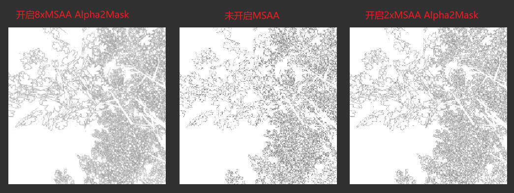
详情参考 Assets/MyTest/URP_SRP/11_AlphaToMask/AlphaToMaskTree.shader 的实现。
- Unity 中开启了 MSAA 后，如何生成后处理 DOF 中需要的 DepthTexture 的？
- 参考资料
- https://learnopengl.com/Advanced-OpenGL/Anti-Aliasing
- 深入剖析 MSAA https://www.cnblogs.com/ghl_carmack/p/8245032.html
- https://en.wikipedia.org/wiki/Multisample_anti-aliasing
- https://docs.microsoft.com/zh-cn/windows/win32/direct3d11/d3d10-graphics-programming-guide-rasterizer-stage-rules
- 对多重采样（MSAA）原理的一些疑问 https://www.zhihu.com/question/58595055/answer/157756410 （如果丢失可以参考有道云笔记备份）
- OpenGL ES 3.0 Specification https://registry.khronos.org/OpenGL/specs/es/3.0/es_spec_3.0.pdf
- OpenGL ES 3.1 Specification https://registry.khronos.org/OpenGL/specs/es/3.1/es_spec_3.1.pdf
- https://learnopengl.com/Advanced-OpenGL/Anti-Aliasing
MLAA and SMAA
- SMAA https://zhuanlan.zhihu.com/p/342211163 网易云笔记备份
Triplanar Mapping
求解 Normal
- TangentNormal

- TangentNormalToWorldNormal WorldNormalToTangentNormal
tangentNormal 向上的方向始终为 z，worldNormal 向上的方向随不同投影面而变化。YZ 平面，worldNormal 向上方向在 x 轴方向；XZ 平面，worldNormal 向上在 y 轴方向；XY 平面，worldNormal 向上在 z 轴方向。
tangentNormalX.xyz = worldNormal.zyx worldNormal 向上的方向为 x 而不是 z，
worldNormal.xyz = tangentNormalX.zyx tangentNormalX 向上的方向为 z 而不是 x
CustomSRP
CustomSRP 1.0
Custom Render Pipeline
- 架构
// CustomRenderPipelineAsset.cs 创建CustomRenderPipeline实例，提供给unity引擎 [CreateAssetMenu(menuName = "Rendering/CustomRenderPipeline")] public class CustomRenderPipelineAsset : RenderPipelineAsset { protected override RenderPipeline CreatePipeline() { return new CustomRenderPipeline(); } } // CustomRenderPipeline.cs 实现CustomRenderPipeline类功能。迭代渲染各个摄像机看到的内容 public class CustomRenderPipeline : RenderPipeline { CameraRenderer renderer = new CameraRenderer(); protected override void Render(ScriptableRenderContext context, Camera[] cameras) { foreach(var camera in cameras) { renderer.Render(context, camera); } } } // CameraRenderer.cs CameraRenderer.Editor.cs 实现CameraRenderer类功能。渲染某个摄像机看到的内容 public partial class CameraRenderer { // ...... }
- CommandBuffer BeginSample EndSample
CommandBuffer 的 BeginSample 和 EndSample 方法也需要调用 context.ExecuteCommandBuffer(buffer);才能生效。
另外 CommandBuffer 的 BeginSample 和 EndSample 需要成对。
- CameraClearFlags
CameraClearFlags 定义的 4 个枚举不是互相独立的，其表示了一个降量清除。例如，除了 CameraClearFlags.Nothing 以外，其他枚举都需要清除深度缓冲区。
CameraClearFlags.Skybox ==> Clear Z+Stencil
CameraClearFlags.Color ==> Clear Color+Z+Stencil
CameraClearFlags.SolidColor
public enum CameraClearFlags { Skybox = 1, Color = 2, SolidColor = 2, Depth = 3, Nothing = 4 }
Draw Calls
- Write a HLSL Shader
- Batching
合批是指将 DrawCall 合并，减少 CPU 和 GPU 沟通消耗的时间。
- SRP batcher
最简单的方式是开启 SRP batcher。但是，选中我们的 Unlit.shader 文件，在 Inspector 面板上提示 not compatible。
SRPBatcher 带来了如下两点优化：
- SRP batcher 并没有减少 draw call 的数量，其会将材质的属性缓存在 GPU，从而避免每次 draw call 都需要从 CPU 发送材质属性到 GPU，这样就减少了 CPU 和 GPU 交互的数据量，也减少了 CPU 执行每个 DrawCall 时的工作。
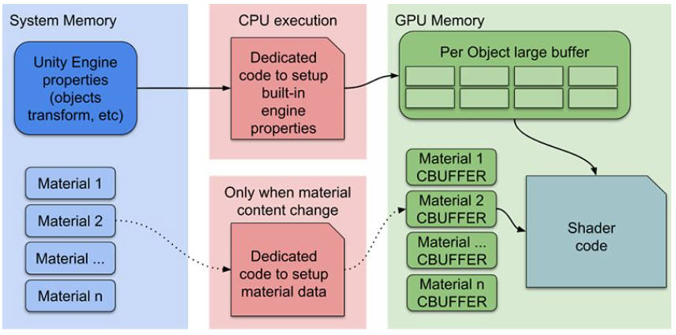 - SRP batcher 将所有 PerObject 数据放到一个大的 StorageBuffer 中，不需要每个 Object 上传一次，而是将所有 PerObject 数据一次上传。DrawCall 之前为 Object 绑定合适的 Offset 就可以了。这极大减少了 CPU 和 GPU 交互频率，性能提升很大。
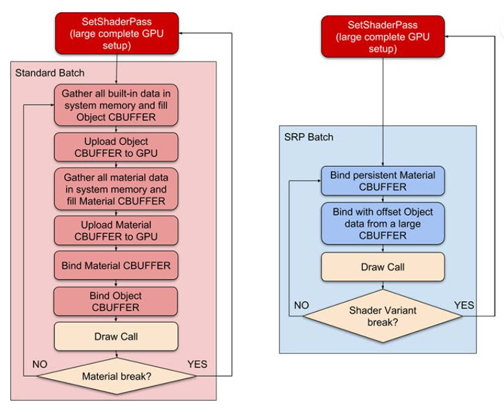
注意：
- 不会减少 draw call 数量
- 支持多个物体使用相同 shader 定义的不同材质，每个材质使用不同的材质属性。
- 支持多个物体使用相同的材质。
- 不支持每个物体使用相同材质而拥有不同的材质属性，即不支持 MaterialPropertyBlock.
- 不支持粒子
- 若 shader Properties 部分除去渲染状态（Blend Mode, ZTest Mode 等）外，没有其他属性，会强制开启 SRP batcher。
通过如下方式支持 SRP batcher：
// UnlitPass.hlsl CBUFFER_START(UnityPerMaterial) float4 _BaseColor; CBUFFER_END // UnityInput.hlsl CBUFFER_START(UnityPerDraw) float4x4 unity_ObjectToWorld; float4x4 unity_WorldToObject; float4 unity_LODFade; real4 unity_WorldTransformParams; CBUFFER_END // CustomRenderPipeline.cs 增加构造函数，设置启用SRP Batching public CustomRenderPipeline () { GraphicsSettings.useScriptableRenderPipelineBatching = true; }
在 CustomURP 实现中，使用的 CBUFFER 如下：
- LitInput.hlsl
// LitInput.hlsl CBUFFER_START(UnityPerMaterial) float4 _BaseMap_ST; float4 _BaseColor; float4 _EmissionColor; float _Cutoff; float _ZWrite; float _Metallic; float _Smoothness; float _Occlusion; float _Fresnel; float4 _DetailMap_ST; float _DetailAlbedo; float _DetailSmoothness; float _NormalScale; float _DetailNormalScale; CBUFFER_END(UnityPerMaterial)
- UnityInput.hlsl
// UnityInput.hlsl CBUFFER_START(UnityPerDraw) float4x4 unity_ObjectToWorld; float4x4 unity_WorldToObject; float4 unity_LODFade; real4 unity_WorldTransformParams; float4 unity_RenderingLayer; real4 unity_LightData; real4 unity_LightIndices[2]; // Unity也会将ShadowMask数据烘培到LightProbes中 float4 unity_ProbesOcclusion; // 反射球相关属性 float4 unity_SpecCube0_HDR; float4 unity_LightmapST; float4 unity_DynamicLightmapST; float4 unity_SHAr; float4 unity_SHAg; float4 unity_SHAb; float4 unity_SHBr; float4 unity_SHBg; float4 unity_SHBb; float4 unity_SHC; float4 unity_ProbeVolumeParams; float4x4 unity_ProbeVolumeWorldToObject; float4 unity_ProbeVolumeSizeInv; float4 unity_ProbeVolumeMin; CBUFFER_END
- Shadow.hlsl
// Shadow.hlsl CBUFFER_START(_CustomShadows) int _CascadeCount; float4 _CascadeCullingSpheres[MAX_CASCADE_COUNT]; float4 _CascadeData[MAX_CASCADE_COUNT]; float4x4 _DirectionalShadowMatrices[MAX_SHADOWED_DIRECTIONAL_LIGHT_COUNT*MAX_CASCADE_COUNT]; float4x4 _OtherShadowMatrices[MAX_SHADOWED_OTHER_LIGHT_COUNT]; float4 _OtherShadowTiles[MAX_SHADOWED_OTHER_LIGHT_COUNT]; float4 _ShadowDistanceFade; float4 _ShadowAtlasSize; CBUFFER_END
- Light.hlsl
// Light.hlsl CBUFFER_START(_CustomLight) float _DirectionalLightCount; float4 _DirectionalLightColors[MAX_DIRECTIONAL_LIGHT_COUNT]; float4 _DirectionalLightDirectionsAndMasks[MAX_DIRECTIONAL_LIGHT_COUNT]; float4 _DirectionalLightShadowData[MAX_DIRECTIONAL_LIGHT_COUNT]; int _OtherLightCount; float4 _OtherLightColors[MAX_OTHER_LIGHT_COUNT]; float4 _OtherLightPositions[MAX_OTHER_LIGHT_COUNT]; float4 _OtherLightDirectionsAndMasks[MAX_OTHER_LIGHT_COUNT]; float4 _OtherLightSpotAngles[MAX_OTHER_LIGHT_COUNT]; float4 _OtherLightShadowData[MAX_OTHER_LIGHT_COUNT]; CBUFFER_END
- 参考资料
- SRPBatcher Doc https://docs.unity3d.com/Manual/SRPBatcher.html
- SRPBatcher 加速渲染 https://connect.unity.com/p/srp-batcher-jia-su-xuan-ran
- 从 DX 角度看 SRPBatcher https://zhuanlan.zhihu.com/p/508206639
- SRPBatcher Doc https://docs.unity3d.com/Manual/SRPBatcher.html
- SRP batcher 并没有减少 draw call 的数量，其会将材质的属性缓存在 GPU，从而避免每次 draw call 都需要从 CPU 发送材质属性到 GPU，这样就减少了 CPU 和 GPU 交互的数据量，也减少了 CPU 执行每个 DrawCall 时的工作。
- GPU Instancing
- MaterialPropertyBlock 实现多个物体使用同一个材质，而拥有不同材质属性
// PerObjectMaterialProperties.cs using UnityEngine; [DisallowMultipleComponent] public class PerObjectMaterialProperties : MonoBehaviour { static int baseColorId = Shader.PropertyToID("_BaseColor"); [SerializeField] Color baseColor = Color.white; static MaterialPropertyBlock block; private void Awake() { OnValidate(); } private void OnValidate() { if(block==null) { block = new MaterialPropertyBlock(); } block.SetColor(baseColorId, baseColor); GetComponent<Renderer>().SetPropertyBlock(block); } }
- GPU Instancing
GPU instancing 适用于每个物体具有不同材质属性的情况。其只需要为多个物体发布一个 draw call，但是这些物体必须使用相同的 mesh。CPU 会收集每个物体的变换矩阵和材质属性，并将他们放到一个数组中，然后发送给 GPU，GPU 按照数据被提供的顺序遍历进行渲染。
注意：GPU instancing 多个物体必须是相同的材质实体。不同的材质实体，就算材质属性完全相同也不能合批。
// 用于开启GPU Instancing #pragma multi_compile_instancing
- MaterialPropertyBlock 实现多个物体使用同一个材质，而拥有不同材质属性
- Dynamic Batching
Dynamic Batching 会将多个共享相同材质的小 mesh 合并为一个大 mesh（Sphere 的 Mesh 比较大，不支持 DynamicBatching，Cube 支持）。该方法不支持每个物体具有不同材质属性的情况。
通常 GPU Instancing 要比 Dynamic Batching 要更好。Dynamic Batching 会有一些陷阱，例如当物体的 scale 不同时，合成的大 mesh 的 normal 向量不保证是归一化的。
事先被标记为 Batching-Static 的物体会执行 Static Batching，其和 Dynamic Batching 工作方式类似，除了需要更多的内存和存储空间外，其没有其他陷阱。
按照下面方式开启 Dynamic Batching:
var drawingSettings = new DrawingSettings(unlitShaderTagId, sortingSettings) { enableDynamicBatching = true, enableInstancing = false };
- Batching Compare
- Static Batching Baching 简介
- Dynamic Batching Baching 简介
- GPU Instancing Baching 简介
- SRP Batching Batching
- Draw call batching https://docs.unity3d.com/Manual/DrawCallBatching.html
- Static Batching https://docs.unity3d.com/Documentation/Manual/static-batching.html
- Dynamic Batching https://docs.unity3d.com/Manual/dynamic-batching.html
- GPUInstancing https://docs.unity3d.com/Manual/GPUInstancing.html
- SRPBatcher https://docs.unity3d.com/Manual/SRPBatcher.html
- Static Batching Baching 简介
- SRP batcher
- Transparency
Directianl Lights
- Lighting
- BRDF
Incoming Light : 光线方向和表面法线没有对齐时，表面接受到的入射光能量会变小。通过为入射光添加 N.L 系数可以实现该规律。
Outgoing Light : 出射光线的分布有三种类型。完美镜面反射（Specular Reflection）、模糊反射（Glossy Reflection）、漫反射（Diffuse）
由于表面光滑，Specular Reflection 会将入射光反射到同一个方向。
由于微表面朝向不同，Glossy Reflection 会将入射光反射到偏离反射方向的方向上。
光线进入物体后，Diffuse 会将入射光向各个方向等概率反射出来。
表面对光的反射是各不相同的，通常金属会将光按照 Specular Reflection 全部反射，其没有 Diffuse。电介质(非金属)也会有 Specular Reflection，不同电介质反射不同，其平均值为 0.04。
../theory/PhysicalTheory.html#org7f134f3
Directional Shadows
- Rendering Shadows
将 RT 分割为多个 Tile，设置 viewPort 来支持将多个方向光的阴影贴图画到同一个 RT 上。
- Sampling Shadows
- 为什么要使用翻转的 ZBuffer（Reversed-ZBuffer）？
使用 0 表示深度为 0，使用 1 表示深度为最大，这样很直观。但是，反向 ZBuffer 再加上浮点型深度值可以增加深度位数的利用率，减少 ZFighting。具体原理如下文：
- 反向 Z(Reversed-Z)的深度缓冲原理 https://zhuanlan.zhihu.com/p/75517534
- 反向 Z(Reversed-Z)的深度缓冲原理 https://zhuanlan.zhihu.com/p/75517534
- ConvertToAtlasMatrix 实现
// 1 执行将[-1,1]转化为[0, 1] 缩放0.5再偏移0.5 /* unity使用的列向量，矩阵需要左乘 scaleM 0.5 0 0 0 0 0.5 0 0 0 0 0.5 0 0 0 0 1 translateM 1 0 0 0.5 0 1 0 0.5 0 0 1 0.5 0 0 0 1 */ // 2 执行 atlas 的偏移和缩放 /* atlasOffsetM 1 0 0 offsetX 0 1 0 offsetY 0 0 1 0 0 0 0 1 atlasScaleM scale 0 0 0 0 scale 0 0 0 0 1 0 0 0 0 1 */ // 下面为最终组合出来的变换矩阵 // atlasScaleM * atlasOffsetM * translateM * scaleM * originM
- 为什么要使用翻转的 ZBuffer（Reversed-ZBuffer）？
- Cascaded Shadow Maps
绘制方向光的阴影贴图时使用的是正交投影，因此阴影贴图上的一个图元对应了世界空间中固定大小的尺寸，如果该尺寸太大，会导致每个阴影贴图图元都占据多个像素，这会导致阴影边缘有锯齿，以及小的阴影会消失。该问题可以通过增加阴影贴图大小来缓解。
当使用透视投影时，场景中越远的物体会变的越小。在某个可视距离阴影贴图上的一个图元只会对应显示器上的一个像素，这是理论上最优的。越靠近摄像机我们需要越高的阴影贴图分辨率，而远处的地方低分辨率的阴影贴图也足够了。理想的情况是，我们依据阴影接受者距离摄像机的距离，动态改变阴影贴图的精度。
Cascaded Shadows maps 的理念是，将投摄阴影的物体渲染多次，这样每个光照在 atlas 上就对应了多个 Tile，这就被称为多个层级。第一个层级只会覆盖靠近摄像机的一小片区域，随后的层级会逐渐放大覆盖的区域。shader 中会采样最合适的层级。
Unity 会创建一个 culling sphere 用于确定每个层级所覆盖的区域。阴影的投影矩阵为正交矩阵，视景体为长方体，其和 Culling Sphere 比较接近，但是还包含了 Sphere 周围的空间。因此 culling 区域外的阴影也可以被看到。光的方向和 Culling Sphere 是无关的（该 CullingSphere 和摄像机位置相关），因此所有的方向光使用相同的 culling spheres。
这些 spheres 也用于确定，从哪个层级的阴影贴图进行采样。
- Shadow Fade
阴影渐变原理如下：

Cascade 渐变原理如下：

- Shadow Quality
- Depth Bias
buffer.SetGlobalDepthBias(50000f, 0f); ExcuteBuffer(); context.DrawShadows(ref shadowSettings); buffer.SetGlobalDepthBias(0f, 0f);
- NormalBias
不正确的自阴影是由于投影的深度贴图图元覆盖了多个片段不正确的自阴影是由于像素以其中心点对应的位置和阴影深度贴图图元对应的位置不一致导致的（即使提高阴影贴图精度，中心点的位置和深度贴图中的图元对应的位置也可能不重合），阴影深度贴图记录的深度为像素中心点旁边一点的深度，导致物体从其表面伸出来。因此如果将物体缩小足够大小，该问题将不会出现。但是，缩放投影体会导致阴影比原来要小。
我们也可以从相反的方向来做：在采样阴影贴图时，将物体表面放大。这样我们就会采样远离表面一段距离的深度值，只要足够远就可以避免不正确的自阴影。这会稍微改变阴影的位置，可能会导致边缘的不对其以及错误的阴影，但是这点瑕疵比 Peter-Panning 要小很多。
- Shadow Pancaking
在为一个方向光渲染阴影投射体时，应该尽量将摄像机近平面往前移，这样可以增加深度精度，但是，这意味着投影体可能会不再摄像机视野内，其可能在近平面之前，这会导致该物体被裁剪，而其本不该被裁剪。

通过下面代码可以处理该问题：
Varyings ShadowCasterPassVertex(Attributes input) { Varyings output; UNITY_SETUP_INSTANCE_ID(input); UNITY_TRANSFER_INSTANCE_ID(input, output); float3 positionWS = TransformObjectToWorld(input.positionOS); // Transform World to Homogeneous Clip output.positionCS = TransformWorldToHClip(positionWS); // 渲染方向光使用的是正交投影, 将近平面前的物体移到近平面 #if UNITY_REVERSED_Z output.positionCS.z = min(output.positionCS.z, output.positionCS.w * UNITY_NEAR_CLIP_VALUE); #else output.positionCS.z = max(output.positionCS.z, output.positionCS.w * UNITY_NEAR_CLIP_VALUE); #endif float4 baseST = UNITY_ACCESS_INSTANCED_PROP(UnityPerMaterial, _BaseMap_ST); output.baseUV = input.baseUV * baseST.xy + baseST.zw; return output; }
上面的处理方式会导致新的问题，因为对于横穿近平面的物体，其只有部分顶点的数据是正确的，如果物体很大，其阴影会变形。下图展示了这种错误：
该问题可以通过支持 light 的 shadowNearPlane 来避免。也可以将大物体划分为小物体。
- Shadow pancaking https://docs.unity3d.com/Manual/ShadowPerformance.html
- Shadow pancaking https://docs.unity3d.com/Manual/ShadowPerformance.html
- PCF Shadow
扩大采样区域后会导致 Shadow Acne 再次出现。需要对应增加 normal biase。
扩大采样区域后意味着，我们可以采样到 cascade culling sphere 外面的区域。通过减小 culling sphere 半径来避免该问题。
- Blending Cascades
- Culling Bias
使用 Cascaded Shadow Maps 的一个缺点是，对于每个灯光，我们需要渲染相同的投影体多次。如果可以为高层级的 Cascade 剔除一些阴影投射体，并保证其内容总是被低层级的 Cascade 所覆盖，则会节省很多 DrawCall。如下参数可以实现该功能：
splitData.shadowCascadeBlendCullingFactor = 1f;
shadowCascadeBlendCullingFactor 会被用于和 culling sphere 半径相乘，其值必须为(0,1)范围，值越大，Unity 会剔除越多的物体，值越低，多层级之间共享的渲染对象越多。使用比较低的值，就可以让不同层级之间在重叠区域做混合。
- Depth Bias
- Shadow Fade
- Transparency
- Q&A
Baked Light
- Baking Static Light
光照可以被提前计算，然后将结果保存到光照贴图和 light probes 中。这种方式，有一个好处是，可以添加无法实时计算的间接光照效果。这种间接光照属于全局照明的一部分，间接光照不是直接从光源发出的光照，其为从环境或者发光表面经过间接反射照亮物体的光。
Fully-Baked Light（Light 组件的 Mode 选择 Baked，Lighting Setting 的 LightingMode 选择 BakedIndirect） 会将直接光照和间接光照都烘培到光照贴图。
环境间接光照 Intensity Multiplier 设置为 0 和 1 的对比：

- GPU Instancing 和烘培
理论上来说，可以使用 TextureArray，让静态烘培物体 lightmap 不同时，依然可以 GPU Instancing。
Shadow Masks
Unity 也会将 ShadowMask 数据烘培到 LightProbes 中，通过如下方式可以采样 LightProbes 中的 ShadowMask 数据。
float4 SampleBakedShadows(float2 lightMapUV, Surface surfaceWS) { #if defined(LIGHTMAP_ON) return SAMPLE_TEXTURE2D(unity_ShadowMask, samplerunity_ShadowMask, lightMapUV); #else if (unity_ProbeVolumeParams.x) { return SampleProbeOcclusion( TEXTURE3D_ARGS(unity_ProbeVolumeSH, samplerunity_ProbeVolumeSH), surfaceWS.position, unity_ProbeVolumeWorldToObject, unity_ProbeVolumeParams.y, unity_ProbeVolumeParams.z, unity_ProbeVolumeMin.xyz, unity_ProbeVolumeSizeInv.xyz ); } else { return unity_ProbesOcclusion; } #endif }
LOD and Reflections
Complex Maps
Point and Spot Lights
Point and Spot Shadows
- Q&A
- TODO 解决 Spot Light Shadow Acne 问题的原理？
- Unity 渲染 Point Light 阴影时会从上往下渲染，导致渲染的物体为背面，如何转化为正面渲染物体？
cullingResults.ComputePointShadowMatricesAndCullingPrimitives( light.visibleLightIndex, (CubemapFace)i, fovBias*0, out Matrix4x4 viewMatrix, out Matrix4x4 projectionMatrix, out ShadowSplitData splitData ); viewMatrix.m11 = -viewMatrix.m11; viewMatrix.m12 = -viewMatrix.m12; viewMatrix.m13 = -viewMatrix.m13;
- Fov Bias 如何求解？
Fov Bias 计算原理如下：

float fovBias = Mathf.Atan(1f + bias + filterSize) * Mathf.Rad2Deg * 2f - 90f;
- TODO 解决 Spot Light Shadow Acne 问题的原理？
Post Processing
- CommandBuffer.DrawProcedural
CommandBuffer.DrawProcedural 该函数会在 GPU 上执行一个 DrawCall，但是没有任何 vertex 或 index buffer。通常在 vertex shader 中，通过使用 SV_VertexID 和 SV_InstanceID 来从某些 buffer 中获取数据。
SV_VertexID 为顶点编号。
- 使用双线性过滤优化高斯模糊的原理是什么？
GPU 对贴图的双线性过滤通过硬件实现，性能非常高。使用双线性过滤，一次采样可以获得 4 个样本点的值，利用 GPU 的双线性过滤，通过对采样点位置进行调整可以实现和高斯 Filter 等价的权重。
- 基于线性采样的高效高斯模糊实现 cn https://zhuanlan.zhihu.com/p/58182228
- 基于线性采样的高效高斯模糊实现 en http://rastergrid.com/blog/2010/09/efficient-gaussian-blur-with-linear-sampling/
- 高斯模糊的几种优化方法 https://cloud.tencent.com/developer/article/1035559
- 基于线性采样的高效高斯模糊实现 cn https://zhuanlan.zhihu.com/p/58182228
HDR
- High Dynamic Range
- HDR Post Processing
HDR 和 LDR bloom 的区别可能是非常大，也可能非常小，这取决于场景的亮度。通常 bloom 的 threshold 被设置为 1，因此只有 HDR 颜色会对 bloom 效果产生贡献。这样画面上闪耀的颜色表示其对于显示器来说太亮了。
因为 bloom 效果的原理是平均颜色，因此即使一个非常亮的像素最终可能影响一大片区域。例如，当 2x2 块的颜色值分别为 0,0,0,1 时，由于 downsampling 的平均，最终的颜色值为 0.25。但是如果是 HDR 版本的平均 0,0,0 和 10，则最终的颜色值为 2.5。
- Fighting Fireflies
HDR 的一个缺点是，其会导致图片上一小片区域的亮度比其周围大很多。当这些区域的大小为一个像素或者更小时，其可以极大地改变相对大小，并在运动过程中突然出现或消失，这会导致闪烁。这些区域被称为萤火虫。当应用 bloom 时，这些区域会出现频闪。
完全消除该问题需要无限大的分辨率，这是不可能的。我们可以在 Pre-Filtering 阶段更激进地对图片进行模糊，将 fireflies 淡出。
在 PreFiltering 阶段，对周围 9 个像素点进行采样，每个采样点的颜色按照 1/(l+1)分配权重，l为该颜色的亮度(luminance)。其原理如下图所示：
因为在 Pre-Filtering 后会执行 GaussianBlur，因此前面对 9 个像素的采样可以优化为对 5 个像素的采样：
- HDR Post Processing
- Scattering Bloom
摄像机不是完美的，其镜头无法正确聚焦所有的光。一部分光会散射到更大的区域，就如目前我们实现的 bloom 效果一样。越好的摄像机会散射越少的光。摄像机镜头对光的散射和目前实现的 additive bloom 效果的最大区别为，摄像机镜头对光的散射不会增加光照，其只会将光照 diffuse 化。人眼也不是完美的，进入人眼的光也会被散射。
- Bloom 流程
下图为迭代三次的 Boom 流程图：

Pre-FilterPass 中将大于 Threshold 的颜色筛选出来。
BlurHorizontalPass BlurVerticalPass 对上一步筛选出来的像素进行高斯模糊，BlurHorizontalPass 还执行 Downsampling 操作。
CombinePass 将模糊后的和模糊前的图片进行合并。
- Scatter Limits
在 BloomSettings 中添加 scatter 变量来控制被散射的光的量。当 scatter=0，表示完全不散射。当 scatter=1，表示完全散射。
float4 BloomCombineScatterPassFragment(Varyings input) : SV_TARGET { float3 lowRes; if (_BloomBicubicUpsampling) { lowRes = GetSourceBicubic(input.fxUV).rgb; } else { lowRes = GetSource(input.fxUV).rgb; } float3 highRes = GetSource2(input.fxUV).rgb; // scatter = 0 则不散射 scatter=1则完全散射 return float4(lerp(highRes, lowRes, _BloomIntensity), 1.0); }
- Threshold
Scattering Bloom 在最终 Combine 阶段需要对 lowRes 进行补偿，因为 lowRes 中只包含了需要 Bloom 的部分(即超过 Threshold 值的颜色)。
float4 BloomScatterFinalPassFragment (Varyings input) : SV_TARGET { float3 lowRes; if (_BloomBicubicUpsampling) { lowRes = GetSourceBicubic(input.fxUV).rgb; } else { lowRes = GetSource(input.fxUV).rgb; } float3 highRes = GetSource2(input.fxUV).rgb; // 对lowRes进行补偿 lowRes += highRes - ApplyBloomThreshold(highRes); return float4(lerp(highRes, lowRes, _BloomIntensity), 1.0); }
- Bloom 流程
- Tone Mapping
尽管我们可以在 HDR 模式下进行渲染，但是对于常规的摄像机，其最终的 frameBuffer 总是 LDR 格式的。这使得颜色通道被裁剪为 1，实际上最终图片上的白点的值为 1。特别亮的颜色最终和完全饱和的颜色看起来是没有差别的。下图的场景中，包含了多个等级的光照，以及多个发光的物体。其中最强的发光体的亮度为 8，最亮的光源光照强度为 200.

没有使用后期效果，很难看出那个物体或者那个光源是亮度最强的。下图为使用了 Bloom 后期特效后的效果：

上图中发光的物体明显是比较亮的，但是依然无法确定其相对于场景中剩余物体有多亮。调整图片的亮度使得最亮的颜色不要超过 1，这样就可以确定物体之间的相对亮度关系了。我们可以统一将整个图片变暗，但是这会导致图片中的大部分颜色变得太暗，以至于无法清晰看到。理想的情况是，我们对于很亮的颜色调节很多，而对于暗的颜色调节很少。因此，我们需要非统一的颜色调节方案。这样的颜色调节并不是光源自身的物理属性改变，而是光源被人感知的变化。例如，我们的眼睛对于暗的色调比亮的色调更加敏感。
将 HDR 转换为 LDR 的操作被称为 Tone Mapping，其源于摄影和电影的发展。传统的照片和电影也是只具有有限的亮度范围，以及非统一的光照敏感度，因此很多技术被开发出来用于执行 ToneMapping。没有唯一正确的 ToneMapping。
- Reinhard
float4 ToneMappingReinhardPassFragment (Varyings input) : SV_TARGET { float4 color = GetSource(input.fxUV); color.rgb /= color.rgb + 1.0; return color; }
- Neutral
Reinhard tone mapping 的 white point 理论上为无穷大。下图中对 Reinhard Tone Mapping 进行改进，可以支持配置 white point 的值。

下图为 Uncharted2 中使用的 ToneMapping：

下图为 Unity 中的 NeutralToneMap：
- ACES
ACES Tonemapping 和其他模式的最大区别在于，ACES 对于特别亮的颜色会执行色域偏移，将其推向白色。
- Reinhard
Color Grading
- Color Adjustments
粗略来算，调节视频、照片和数字图片的颜色分三个步骤:
首先是颜色矫正(color correction)，其目的是为了让图像匹配我们所观察到的场景，以补偿媒介的局限性。
其次是色彩分级(color grading)，其为了得到期望的外观和感觉，这种结果和原始场景不匹配，而且也不需要逼真。这两个步骤通常被合并到同一个 color grading 步骤中。
最后是色调映射(tone Mapping)，其将 HDR 颜色映射到显示器的显示范围。
对图像只使用 tone mapping，会让图像趋向更加缺乏色彩，除非图像非常明亮。ACES 稍微增加了暗颜色的对比，但是其无法代替 color grading。
davinciresolve 是专业的影视后期调色工具, 下面链接中有后期调色相关的教学视频：
- Post Exposure
Post Exposure 用于模拟摄像机的曝光，但是其被用于其他后期效果之后，并在其他 color grading 效果之前。其是一个非真实感的美术工具，可用于微调曝光而不影响其他效果，例如 bloom。
- Constrast Saturate
float3 ColorGradingContrast (float3 color) { color = LinearToLogC(color); // 调节对比度的算法 color = (color - ACEScc_MIDGRAY) * _ColorAdjustments.y + ACEScc_MIDGRAY; return LogCToLinear(color); } float3 ColorGradeSaturation(float3 color) { float luminance = Luminance(color); // 调节饱和度的算法 return (color - luminance) * _ColorAdjustments.w + luminance; }
调节对比度和饱和度的公式类似，saturate 为直线的斜率，saturate 的范围为(0-2)，(1-saturate)*luminance 为直线 y 轴截距。
saturate 为 0 时，最终颜色为 luminance，最终颜色只有明暗没有色彩。
saturate 为 1 时，最终颜色为 color，饱和度和明度都没有变化。
saturate 为 2 时，最终颜色为 color*2 - luminance，最终颜色的明度没有改变，色彩值翻倍。

./UnityCatLikeCoding/03_12cg_saturate.ggb
- Color Filter
float3 ColorGradeColorFilter (float3 color) { // ColorFilter 的算法 return color * _ColorFilter.rgb; }
- Hue Shift
- White Balance
白平衡的目的，是希望在不同光线条件下，都能正确得到物体的固有色；
白平衡本质上是调节两个参数：色温和色调，色温调节蓝-黄偏色，色调调节绿-品红偏色。通过调节两个参数，来设置白点的位置，从而得到正确的色彩转换；
- Split Toning
TODO 原理
- Channel Mixer
TODO 原理
- Shadows Midtones Highlights
TODO 原理
- ACES Color Spaces
Academy Color Encoding System(ACES)是在电影艺术与科学学院的支持下创建的彩色图像编码系统。 ACES 的特点是色彩准确的工作流程，“无论来源如何，都能无缝交换高质量的电影图像”。ACES 主要有下图所示的 3 个流程组成：
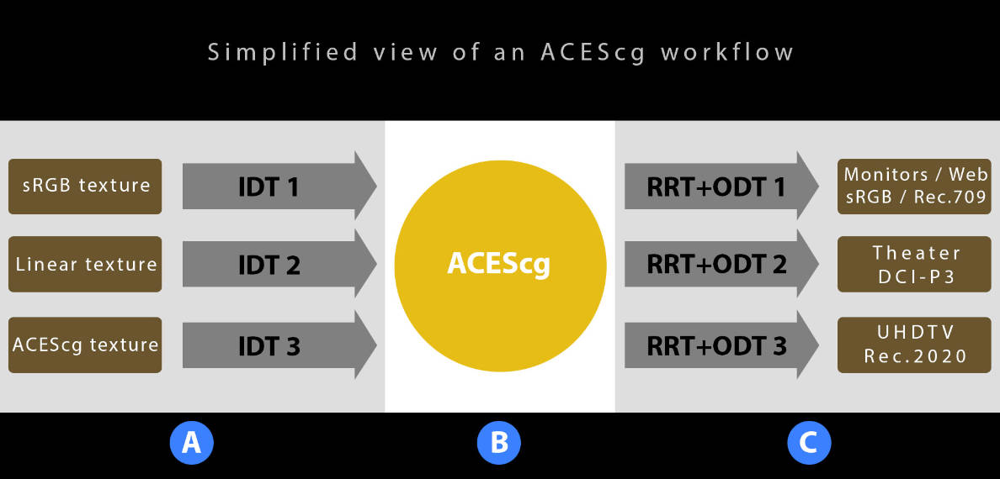
- A: IDT 用于将导入的贴图、图片和渲染结果转化为 ACEScg colorspace
- B: ACEScg 为渲染和工作空间(VFX 和 CG 在该颜色空间下进行)
- C: RRT(Rendering Reference Transform)+ODT(Output Device Transform) 为 Output Transform。RRT 负责把图像从 scene-referred 空间转换到 high dynamic range output-referred 空间，而 ODT 负责继续把 RRT 的结果转换到特定的输出设备的颜色空间下。RRT + ODT 是一次把 scene-referred 图像完整地呈现到特定显示设备的转换操作
ACES Primary and White Point Coordinates
AP0:ACES 2065-1 white point AP1:cg,cc,cct,proxy red green blue red green blue x 0.7347 0.0000 0.0001 0.32168 0.713 0.165 0.128 y 0.2653 1.0000 -0.0770 0.33767 0.293 0.830 0.044 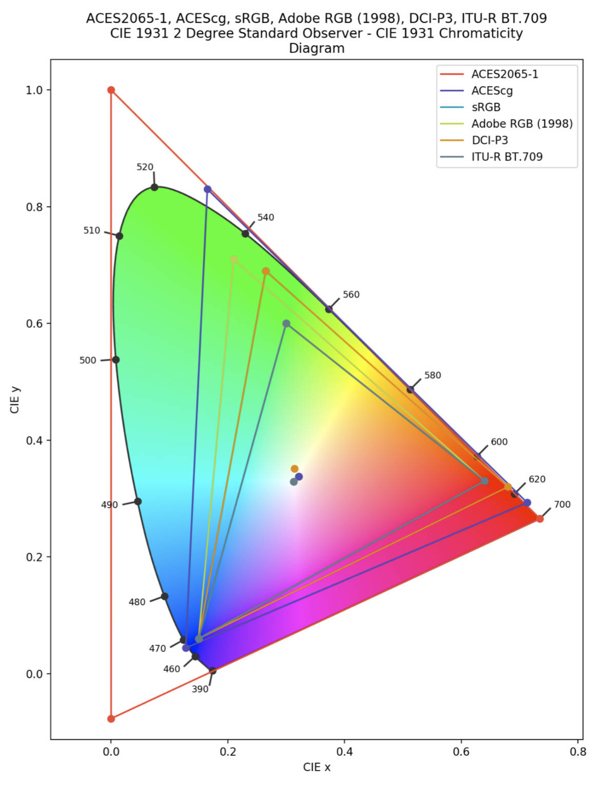
当使用 ACES tone mapping 时，为了得到更好的结果，Unity 在 ACES 颜色空间下执行大多数 color grading。
Post exposure 和 white balance 总是在线性空间下被应用。从 Constrast 开始，将 linear color 转化为 ACEScc 颜色空间。
unity_to_ACES 可以从 linear color 转化为 ACES 颜色空间
ACES_to_ACEScc 可以从 ACES 转化为 ACEScc 颜色空间
ACEScc_to_ACES 可以从 ACEScc 颜色空间转化为 ACES 颜色空间
ACES_to_ACEScg 可以从 ACES 颜色空间转化为 ACEScg 颜色空间
- ACES2065-1
ACES2065-1 是 ACES 色彩空间的核心，也是唯一使用 AP0 RGB 原色的色彩空间。它使用光度线性传输特性（photo-metrically linear transfer characteristics），即 伽马值为 1.0，并且是唯一用于设施之间交换的 ACES 空间，对于存档图像/视频文件非常重要。
ACES2065-1 的代码值是线性值，在输入变换中被缩放，因此：
- 一个完美的白色漫射器将映射为 (1, 1, 1) RGB 代码值。
- 18% 灰卡的照片曝光将映射为 (0.18,0.18,0.18) RGB 代码值。
对于普通场景，ACES2065-1 代码值经常超过 1.0 ，编码时可以保持非常高范围的镜面反射和高光。 ACES2065-1 代码值的内部处理和存储必须采用每通道至少 16 位的浮点运算。 ACES 的 Pre-release 版本（即 1.0 之前的版本）将 ACES2065-1 定义为唯一的色彩空间。 因此，旧应用程序在提及“ACES 色彩空间”时可能会提及 ACES2065-1。 此外，由于其重要性和线性特性，并且是基于 AP0 原色的颜色空间，它也被错误地称为“Linear ACES”、“ACES.lin”、“SMPTE2065-1”甚至“AP0 色彩空间” ”。
SMPTE ST2065-4 定义了 ACES2065-1 静态图像的正确编码，用于 OpenEXR 文件和文件序列以及元数据标志/字段。
SMPTE 2065-5 定义了 ACES2065-1 视频序列编码，用于在 MXF 文件及其元数据字段。
- 一个完美的白色漫射器将映射为 (1, 1, 1) RGB 代码值。
- ACEScg
ACEScg(ACES computer graphics space)颜色空间定义略大于 ITU Rec.2020 颜色空间，并进行线性编码，以改进计算机图形渲染和合成工具中的使用。
ACEScg 是一种场景线性编码，与 ACES2065-1 类似，但 ACEScg 使用 AP1 原色，更接近可感知的原色。ACEScg 是为视觉效果工作而开发的，由于 ACES2065-1 的原色中蓝色原色为负值，且原色在可感知色域之外，所以，ACES2065 显然不是一个可用的工作空间。
AP1 原色更接近可感知颜色的色品图，而且它们都不是负值。 这对于根据视觉效果的需要渲染和合成图像数据非常重要。
- ACEScc & ACEScct
ACEScc(ACES color correction space) 色彩空间定义略大于 ITU Rec.2020 色彩空间，并进行对数编码，以改进色彩校正器和分级工具中的使用。
ACEScct（ACES color correction space with toe）色彩空间定义略大于 ITU Rec.2020 色彩空间，并进行对数编码，以改进在色彩校正器和分级工具中的使用，类似于 Cineon 文件的 toe behavior。
与 ACEScg 一样，ACEScc 和 ACEScct 也使用 AP1 原色。 它们的与众不同之处在于，ACEScc 和 ACEScct 使用对数曲线，而不是场景线性传输编码，这使得它们更适合颜色分级。 分级工作流程传统上使用对数编码图像数据，很大程度上是因为电影摄影中使用的物理胶片对光具有对数响应。
ACEScc 是一个纯对数函数，但 ACEScct 有一个接近黑色的 toe，用于模拟照相负片的最小密度，以及传统的 DPX 或 Cineon 对数曲线。
ACEScc，是完全使用对数进行编码，你基本上可以把它理解成 ACES 的 log 模式，在实际调色时感觉也会非常像。而 ACEScct，则是将 log 曲线的下方末端抬起，形成了一个类似于脚趾的形状，使其更加类似于传统的『对数型』曲线，比如 LogC，S-Log 等。这一变化将使用户在进行 Lift（针对图像阴影区）操作时，会使阴影区有更明显的雾状化，从而与传统胶片扫描结果更为类似。
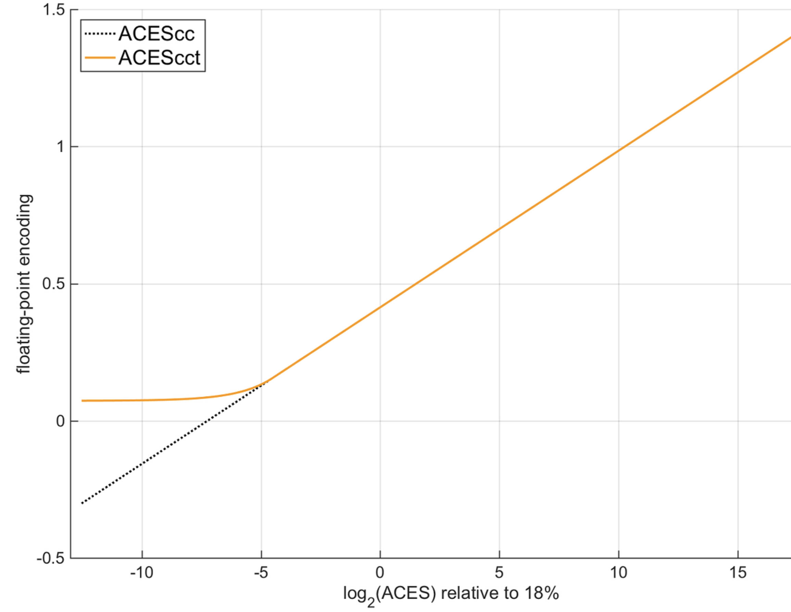
- ACEScc 与 ACEScct 的区别 https://zhuanlan.zhihu.com/p/257103138
- ACEScc 与 ACEScct 的区别 https://zhuanlan.zhihu.com/p/257103138
- ACESproxy
ACESproxy (ACES proxy color space) 色彩空间定义略大于 ITU Rec.2020 色彩空间，采用对数编码（如 ACEScc，而不是 ACEScct），并以 10 位/通道或 12 位/通道、整数算术数字表示形式表示。 此编码专门设计用于在不支持浮点算术编码的数字设备（例如 SDI 电缆、监视器和一般基础设施）之间仅传输代码值。
- 参考资料
- https://chrisbrejon.com/cg-cinematography/chapter-1-5-academy-color-encoding-system-aces/
- 漫谈 HDR 和色彩管理（四）HDR 标准和 ACES https://zhuanlan.zhihu.com/p/144775352
- Academy Color Encoding System https://en.wikipedia.org/wiki/Academy_Color_Encoding_System
- https://acescolorspace.com/
- https://chrisbrejon.com/cg-cinematography/chapter-1-5-academy-color-encoding-system-aces/
- A: IDT 用于将导入的贴图、图片和渲染结果转化为 ACEScg colorspace
- Post Exposure
- LUT
为每个像素执行所有的 color grading 步骤需要很多工作量。我们可以定义一些变体，从而只应用对内容有修改的 color grading，但是这需要很多 Keywords 或 Passes。我们可以将 color grading 烘培到一个 loopup table(LUT)中，通过对该 LUT 进行采样来执行颜色转换。这样的 LUT 为一个 3D 贴图，通常大小为 32x32x32。填充该贴图，运行时对该贴图采样比直接对整张图片执行 color grading 计算要少很多工作量。
LUT 记录的是任何一种颜色经过 ColorGrading 之后对应的颜色。
LUT RT 可以为 LDR（PC Editor 下为 R8G8B8A8-UNorm），也可以为 HDR(PC Editor 下为 R16G16B16A16-SFloat)。
LUT LDR RT 既支持 LDR 渲染，也支持 HDR 渲染。
LUT HDR RT 只支持 HDR 渲染。
- LUT Color Matrix
- LUT Texture 生成时，LUT 如何编码颜色？
对于 2D 的 LUT，lutTexture 的 x 方向对应 R 和 B，y 方向对应 G。最终 LUT 整张图就对应了 (0,0,0) 到 (1,1,1) 的所有颜色
// Returns the default value for a given position on a 2D strip-format color lookup table // lut_height 为LUT rt的ySize, 同时LUT 的方块数量也为该值 // params = (lut_height, 0.5 / lut_width, 0.5 / lut_height, lut_height / lut_height - 1) real3 GetLutStripValue(float2 uv, float4 params) { uv -= params.yz; real3 color; // uv.x[0,1] 对应了lut_height 个R[0-1], 每个方块的x 对应R[0,1] color.r = frac(uv.x * params.x); // uv.x[0,1] 对应了 lut_height 个 B[0-1], 第一个方块对应B=0，最后一个方块对应B=1 color.b = uv.x - color.r / params.x; // uv.y[0,1] 对应了 G[0-1], 每个方块的 y 对应G[0,1] color.g = uv.y; return color * params.w; }
- LUT Texture 生成时，LUT 如何编码颜色？
- Gen LUT
LDR 渲染时，会始终使用 FragLutBuilderLdr 来生成 LUT。
HDR 渲染时，URPA Grading Mode 设置为 LDR 则使用 FragLutBuilderLdr 来生成 LUT; URPA Grading Mode 设置为 HDR 则使用 FragLutBuilderHdr 来生成 LUT
- LDR FragLutBuilderLdr
FragLutBuilderLdr 直接在 LDR 的线性颜色上开始工作。最终，输出时会将结果 clamp to [0, 1]
Tips:
FragLutBuilderLdr 不会执行 Tonemapping 操作。
half4 FragLutBuilderLdr(Varyings input) : SV_Target { float3 colorLinear = GetLutStripValue(input.texcoord, _Lut_Params); // White balance in LMS space // Do contrast in log after white balance // Color filter is just an unclipped multiplier colorLinear *= _ColorFilter.xyz; // Split toning 为了与 Adobe 产品中一致采用 GammaSpace colorLinear = PositivePow(colorGamma, 2.2); // Channel mixing (Adobe style) // Shadows, midtones, highlights // Lift, gamma, gain // HSV operations // Global saturation // YRGB curves return half4(saturate(colorLinear), 1.0); }
- HDR FragLutBuilderHdr
FragLutBuilderHdr 会先利用 LogCToLinear 将 [0,1]的 LDR 颜色变化为[0, 52.7]的 HDR 颜色，在 HDR 的线性颜色上开始工作。
没开启 HDROutput 时，FragLutBuilderHdr 会执行 Tonemapping 操作。
开启 HDROutput 时，FragLutBuilderHdr 不会执行 Tonemapping 操作，会执行 ProcessColorForHDR。
float4 FragLutBuilderHdr(Varyings input) : SV_Target { // Lut space // We use Alexa LogC (El 1000) to store the LUT as it provides a good enough range // (~58.85666) and is good enough to be stored in fp16 without losing precision in the // darks float3 colorLutSpace = GetLutStripValue(input.texcoord, _Lut_Params); // Color grade & tonemap float3 gradedColor = ColorGrade(colorLutSpace); #ifdef HDR_COLORSPACE_CONVERSION // 处理 HDROutput gradedColor = ProcessColorForHDR(gradedColor); #else gradedColor = Tonemap(gradedColor); #endif return float4(gradedColor, 1.0); }
float3 ColorGrade(float3 colorLutSpace) { // Switch back to linear float3 colorLinear = LogCToLinear(colorLutSpace); // White balance in LMS space // Do contrast in log after white balance // Color filter is just an unclipped multiplier // Split toning 为了与 Adobe 产品中一致采用 GammaSpace // Channel mixing (Adobe style) // Shadows, midtones, highlights // Lift, gamma, gain // HSV operations // Global saturation // YRGB curves 从美术工作流程来看，该步骤颜色需要在[0,1], 所以会先执行一个FastTonemap, 结束之后在执行一个FastTonemapInvert colorLinear = FastTonemap(colorLinear); { //...... } colorLinear = FastTonemapInvert(colorLinear); colorLinear = max(0.0, colorLinear); return RotateToColorGradeOutputSpace(colorLinear); }
- Log C LUT
前面 GetLutStripValue 生成的颜色值为(0,1)范围内的。为了支持 HDR 颜色，需要扩大该颜色范围。使用 LogCToLinear 函数来将颜色范围扩展到(0, 52.7)
下图展示了 LogCToLinear 和 LogCToLinear_Precise 的图像：
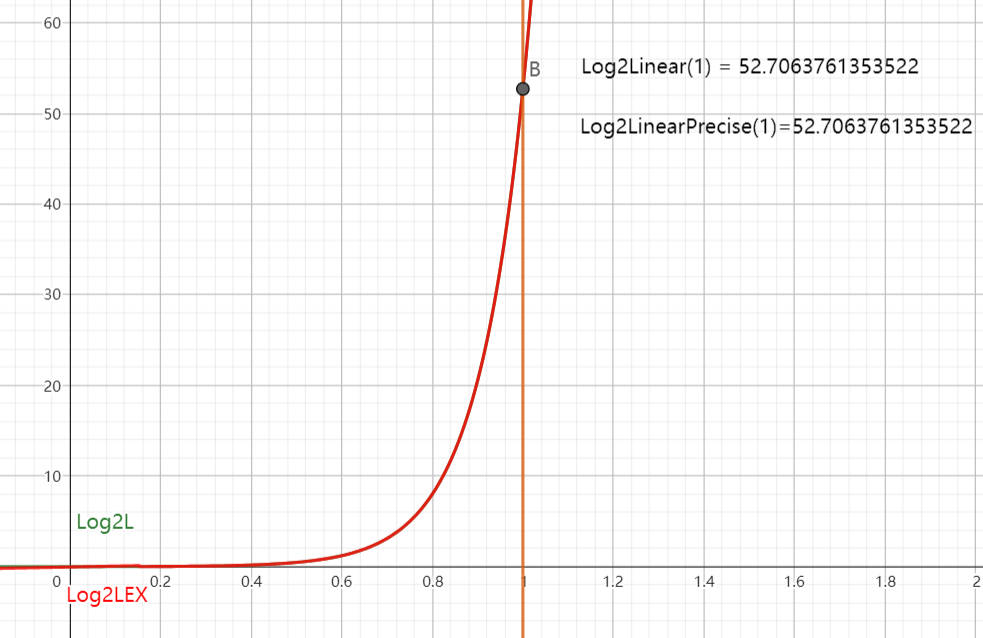
下面文件展示了 LogCToLinear 函数：
./UnityCatLikeCoding/LogCToLinear.ggb
static const ParamsLogC LogC = { 0.011361, // cut 5.555556, // a 0.047996, // b 0.244161, // c 0.386036, // d 5.301883, // e 0.092819 // f }; real LogCToLinear_Precise(real x) { real o; if (x > LogC.e * LogC.cut + LogC.f) o = (pow(10.0, (x - LogC.d) / LogC.c) - LogC.b) / LogC.a; else o = (x - LogC.f) / LogC.e; return o; } // Full float precision to avoid precision artefact when using ACES tonemapping float3 LogCToLinear(float3 x) { #if USE_PRECISE_LOGC return real3( LogCToLinear_Precise(x.x), LogCToLinear_Precise(x.y), LogCToLinear_Precise(x.z) ); #else return (pow(10.0, (x - LogC.d) / LogC.c) - LogC.b) / LogC.a; #endif }
- HDROutput
float3 ProcessColorForHDR(float3 colorLinear) { #ifdef HDR_COLORSPACE_CONVERSION #ifdef _TONEMAP_ACES float3 aces = ACEScg_to_ACES(colorLinear); return HDRMappingACES(aces.rgb, PaperWhite, RangeReductionMode, true); #elif _TONEMAP_NEUTRAL return HDRMappingFromRec2020(colorLinear.rgb, PaperWhite, MinNits, MaxNits, RangeReductionMode, HueShift, true); #else // Grading finished in Rec2020, converting to the expected color space and [0, 10k] nits range return RotateRec2020ToOutputSpace(colorLinear) * PaperWhite; #endif #endif return colorLinear; }
- NONE
float3 RotateRec2020ToOutputSpace(float3 Rec2020Input) { if (_HDRColorspace == HDRCOLORSPACE_REC2020) { return Rec2020Input; } else // HDRCOLORSPACE_REC709 { return RotateRec2020ToRec709(Rec2020Input); } } float3 RotateRec2020ToRec709(float3 Rec2020Input) { static const float3x3 Rec2020ToRec709Mat = float3x3( 1.660496, -0.587656, -0.072840, -0.124547, 1.132895, -0.008348, -0.018154, -0.100597, 1.118751 ); return mul(Rec2020ToRec709Mat, Rec2020Input); }
- ACES
RRT(Reference Rendering Transform) –> ODT(Output Device Transform) –> OETF(opto-electronic transfer function)
float3 HDRMappingACES(float3 aces, float hdrBoost, int reductionMode, bool skipOETF = false) { aces = (aces * hdrBoost * 0.01f); float3 oces = RRT(aces); float3 AP1ODT = 0; // This is a static branch. if (reductionMode == HDRRANGEREDUCTION_ACES1000NITS) { AP1ODT = ODT_1000nits_ToAP1(oces); } else if (reductionMode == HDRRANGEREDUCTION_ACES2000NITS) { AP1ODT = ODT_2000nits_ToAP1(oces); } else if (reductionMode == HDRRANGEREDUCTION_ACES4000NITS) { AP1ODT = ODT_4000nits_ToAP1(oces); } float3 linearODT = 0; if (_HDRColorspace == HDRCOLORSPACE_REC2020) { const float3x3 AP1_2_Rec2020 = mul(XYZ_2_REC2020_MAT, mul(D60_2_D65_CAT, AP1_2_XYZ_MAT)); linearODT = mul(AP1_2_Rec2020, AP1ODT); } else // HDRCOLORSPACE_REC709 { const float3x3 AP1_2_Rec709 = mul(XYZ_2_REC709_MAT, mul(D60_2_D65_CAT, AP1_2_XYZ_MAT)); linearODT = mul(AP1_2_Rec709, AP1ODT); } if (skipOETF) return linearODT; return OETF(linearODT); }
- NEUTRAL
float3 HDRMappingFromRec2020(float3 Rec2020Input, float paperWhite, float minNits, float maxNits, int reductionMode, float hueShift, bool skipOETF = false) { float3 outputSpaceInput = RotateRec2020ToOutputSpace(Rec2020Input); float3 reducedHDR = PerformRangeReduction(outputSpaceInput * paperWhite, minNits, maxNits, reductionMode, hueShift); if (skipOETF) return reducedHDR; return OETF(reducedHDR); } float3 PerformRangeReduction(float3 input, float minNits, float maxNits, int mode, float hueShift) { float3 outputValue = input; bool reduceLuma = hueShift < 1.0f; bool needHueShiftVersion = hueShift > 0.0f; if (mode == HDRRANGEREDUCTION_NONE) { outputValue = input; } else { float3 huePreserving = reduceLuma ? HuePreservingRangeReduction(input, minNits, maxNits, mode) : 0; float3 hueShifted = needHueShiftVersion ? HueShiftingRangeReduction(input, minNits, maxNits, mode) : 0; if (reduceLuma && !needHueShiftVersion) { outputValue = huePreserving; } else if (!reduceLuma && needHueShiftVersion) { outputValue = hueShifted; } else { // We need to combine the two cases outputValue = lerp(huePreserving, hueShifted, hueShift); } } return outputValue; } float3 HuePreservingRangeReduction(float3 input, float minNits, float maxNits, int mode) { float3 ICtCp = RotateOutputSpaceToICtCp(input); float lumaPreRed = ICtCp.x; float linearLuma = PQToLinear(ICtCp.x, MAX_PQ_VALUE); linearLuma = LumaRangeReduction(linearLuma, minNits, maxNits, mode); ICtCp.x = LinearToPQ(linearLuma); ICtCp = DesaturateReducedICtCp(ICtCp, lumaPreRed, maxNits); return RotateICtCpToOutputSpace(ICtCp); } float3 HueShiftingRangeReduction(float3 input, float minNits, float maxNits, int mode) { float3 hueShiftedResult = input; if (mode == HDRRANGEREDUCTION_REINHARD) { hueShiftedResult.x = ReinhardTonemap(input.x, maxNits); hueShiftedResult.y = ReinhardTonemap(input.y, maxNits); hueShiftedResult.z = ReinhardTonemap(input.z, maxNits); } else if(mode == HDRRANGEREDUCTION_BT2390) { hueShiftedResult.x = BT2390EETF(input.x, minNits, maxNits); hueShiftedResult.y = BT2390EETF(input.y, minNits, maxNits); hueShiftedResult.z = BT2390EETF(input.z, minNits, maxNits); } return hueShiftedResult; }
- NONE
- Log C LUT
- LDR FragLutBuilderLdr
- Final Pass
- 如何利用 LUT Texture 计算 ColorGrading？
将 inputColor 转化为 LUT 的 uv 坐标，采样该点的值就可以得到 inputColor 经过 ColorGrading 后的颜色。
// 2D LUT grading // uvw 就是 inputColor // scaleOffset = (1 / lut_width, 1 / lut_height, lut_height - 1) real3 ApplyLut2D(TEXTURE2D_PARAM(tex, samplerTex), float3 uvw, float3 scaleOffset) { // Strip format where `height = sqrt(width)` uvw.z *= scaleOffset.z; float shift = floor(uvw.z); uvw.xy = uvw.xy * scaleOffset.z * scaleOffset.xy + scaleOffset.xy * 0.5; uvw.x += shift * scaleOffset.y; uvw.xyz = lerp( SAMPLE_TEXTURE2D_LOD(tex, samplerTex, uvw.xy, 0.0).rgb, SAMPLE_TEXTURE2D_LOD(tex, samplerTex, uvw.xy + float2(scaleOffset.y, 0.0), 0.0).rgb, uvw.z - shift ); return uvw; }
- 如何利用 LUT Texture 计算 ColorGrading？
- LUT Banding
因为 LUT 只有有限的分辨率，我们使用双线性插值对 LUT 进行采样将原本平滑的颜色转换为了线性带。通常对于 32 分辨率的 LUT，该问题是不容易被察觉到的，但是，在极其高动态范围的颜色渐变处，该问题就会明显。
将采样器从 sampler_linear_clamp 变为 sampler_point_clamp，带会变得很明显。
- GPU GEMS2 LUT
- Shader Analysis
void main(in float2 sUV : TEXCOORD0, out half4 cOut : COLOR0, const uniform samplerRECT imagePlane, const uniform sampler3D lut, const uniform float3 lutSize) { // Get the image color half3 rawColor = texRECT(imagePlane, sUV).rgb; // Compute the 3D LUT lookup scale/offset factor half3 scale = (lutSize - 1.0) / lutSize; half3 offset = 1.0 / (2.0 * lutSize); // ****** Apply 3D LUT color transform! ************** // This is our dependent texture read; The 3D texture's // lookup coordinates are dependent on the // previous texture read's result cOut.rgb = tex3D(lut, scale * rawColor + offset); }
为什么在上面的代码中要对 UV 进行偏移和缩放？
具体而言，硬件纹理采样算法会从数据集的起始边界采样到结束边界。尽管在对图像数据进行纹理化处理时这是完全合理的，但不适合对数值数据集进行采样，因为它会在纹理边缘附近引入非线性值。因此，我们只在最外层样本的中心区域内进行采样。
- Shader Analysis
- LUT Color Matrix
Multiple Cameras
- Combining Cameras
当两个摄像机叠加在一起，为了移除上面摄像机的天空盒子，可以使用 CameraClearFlags.Color 清除标记。但是，当摄像机使用后期特效后，CameraClearFlags 会被强制设置为 CameraClearFlags.Color，此时上面摄像机显示的内容会包含背景颜色。可以将后期效果 shader 的混合方式改为 Blend SrcAlpha OneMinusSrcAlpha 来去除背景颜色。
当 Bloom 效果在天空背景上时，Blend SrcAlpha OneMinusSrcAlpha 模式混合后 Bloom 效果会变弱。需要将混合模式调整为 Blend One OneMinusSrcAlpha。
可以使用下面方式，分别控制 RGB 和 Alpha 的混合因子：
Blend SrcFactor DstFactor, AlphaSrcFactor AlphaDstFactor
- Rendering Layers
每个物体都属于唯一一个 Layer，每个 Camera 都有一个 CullingMask 属性，其可以包含多个 Layer，用来标识哪些 Layer 对该摄像机可见。
Light 也有 CullingMask，如果物体所在 Layer 没被 Light 包含，则该 Light 对该物体相当于不存在，即 Light 不会照亮物体，也不会让物体投射阴影。但是，方向光是个例外，其 CullingMask 只影响物体的阴影，而依然可以照亮物体。
使用现在的方式无法完整支持 Light 的 CullingMask，HDRP 也不支持。Unity 为 SRPs 提供了 Rendering Layers 作为一种替代方案。使用 Rendering Layers 代替 game-object layers 有两个好处：
- renderers 不必限制为只属于单个 layer，这意味着 rendering-layers 更灵活。
- rendering-layers 不会被用于做其他事情(默认的 game-object layers 也会被物理模块使用)。
注意： 只有 CullingMask 会被用于 Culling，Rendering-Layers 不会执行 Culling，因此 Renderer 的 RenderingLayer 不被摄像机包含时，依然会渲染该 Renderer 的阴影。
- renderers 不必限制为只属于单个 layer，这意味着 rendering-layers 更灵活。
Particles
- Unlit Particles
- 修改粒子发射器形状
勾选 ParticleSystem/Shape，在该分组下进行修改
- 粒子帧动画
勾选 ParticleSystem/TextureSheetAnimation，在该分组下进行修改
- 粒子渲染模式
ParticleSystem/Renderer/Render Mode
Billboard
StrechedBillboard
HBillboard
VBillboard
Mesh
None
- 粒子颜色变化
ParticleSystem/Color over Lifetime
- 自定义 Shader Vertex Steam
ParticleSystem/Renderer/Custom Vertex Streams
- 修改粒子发射器形状
- Fading Near Camera
当摄像机在一个粒子系统中时，粒子会非常靠近摄像机近平面，也会闯过近平面从一侧到达另一侧。Renderer/MaxParticleSize 属性可以避免单独的粒子占据屏幕上很大的空间。当粒子靠近近平面时，一旦其达到可视最大尺寸，该粒子将会停止增大。
另一种处理靠近近平面粒子的方法是，基于粒子的片段深度来淡出(fade out)粒子。这种方式对于通过代表气体效果的粒子系统时效果比较好。
- Fragment Depth
下面代码用于实现求解视觉空间下的 Depth
bool IsOrthographicCamera () { return unity_OrthoParams.w; } float OrhtographicDepthBufferToLinear(float rawDepth) { #if UNITY_REVERSED_Z rawDepth = 1.0 - rawDepth; #endif return (_ProjectionParams.z - _ProjectionParams.y) * rawDepth + _ProjectionParams.y; } Fragment GetFragment(float4 positionSS) { Fragment f; f.positionSS = positionSS.xy; f.depth = IsOrthographicCamera() ? OrthographicDepthBufferToLinear(positionSS.z) : positionSS.w; return f; }
- Fragment Depth
- Soft Particles
当 Billboard 粒子和场景中几何体有交叉时，尖锐的转变会很不和谐而且使得 Billboard 粒子平坦的本质显得很明显。使用 Soft Particles 可以解决该问题，其原理为，当有不透明的物体在粒子后面时，将粒子淡出。可以比较粒子和之前渲染的不透明物体的视觉空间 depth 来实现该功能。
- Distortion
实现热气导致的大气折射效果的原理为，根据粒子的 normal 对 uv 进行偏移，使用偏移后的 uv 对 color buffer 进行采样。
TODO FXAA
CustomSRP 2.0
CustomRenderPipeline 中管理 RenderGraph
所有 Pass 共用一个 RenderGraph，所以在 CustomRenderPipeline 中创建 RenderGraph，清理 RenderGraph
// 创建 RenderGraph readonly RenderGraph renderGraph = new("Custom SRP Render Graph"); protected override void Dispose(bool disposing) { renderGraph.Cleanup(); } protected override void Render(ScriptableRenderContext context, List<Camera> cameras) { for (int i = 0; i < cameras.Count; i++) { // 将 renderGraph 传递给 CameraRenderer renderer.Render( renderGraph, context, cameras[i], cameraBufferSettings, useDynamicBatching, useGPUInstancing, useLightsPerObject, shadowSettings, postFXSettings, colorLUTResolution); } // 调用 renderGraph 的 EndFrame 方法 renderGraph.EndFrame(); }
使用 RenderGraph 方式来录制执行一个渲染 Pass
// CameraRenderer.Render public void Render(/**/) { // ...... DrawGizmosAfterFX(); // 创建 RenderGraphParameters 来 var renderGraphParameters = new RenderGraphParameters { commandBuffer = CommandBufferPool.Get(), currentFrameIndex = Time.frameCount, executionName = "Render Camera", scriptableRenderContext = context }; // 录制并执行一个渲染Pass renderGraph.RecordAndExecute(renderGraphParameters) { // 向 renderGraph 中添加一个Pass using RenderGraphBuilder builder = renderGraph.AddRenderPass("Test Pass", out CameraSettings data); builder.SetRenderFunc((CameraSettings data, RenderGraphContext context) => { }); } Cleanup(); Submit(); // 结束后需要释放 commandBuffer CommandBufferPool.Release(renderGraphParameters.commandBuffer); }
MyTest
TestReplaceShader
SetReplacementShader VS RenderWithShader
SetReplacementShader 修改相机渲染物体时对应物体的 shader
RenderWithShader 使用相机进行额外的一次渲染，渲染时修改渲染物体对应的 shader
这两个函数的参数：(Shader shader, string replacementTag)
shader 即将使用的新的 shader.
replacementTag 指定替换条件，具体分如下两种情况：
如果 replacementTag="" 表示直接使用新的 shader。
如果 replacementTag="XX" 表示，假设新 shader 的 Tag 为 Tag{ …… XX="xx" …… }，那么旧 shader 中 Tag 有相同的 XX="xx" 键值对则使用新 shader 渲染物体，否则不渲染该物体。
Q&A
Warnning: Attempting to render from camera 'Main Camera' that is currently being used to render. Create a copy of the camera (Camera.CopyFrom) if you wish to do this. UnityEngine.Camera:RenderWithShader(Shader, String)
在 OnPreRender OnPostRender 中调用 RenderWithShader 时会提示如上警告信息。这是因为引擎对相机的渲染调用还没结束，又对同一相机发出渲染的请求。
在 OnGUI 中调用 RenderWithShader 不会提示如上警告信息。
BilinearFiltering
Color BilinearFilter(Color c00, Color c10, Color c01, Color c11, float tx, float ty) { #if false Color a = c00 * (1 - tx) + c10 * tx; Color b = c10 * (1 - tx) + c11 * tx; return (a * (1 - ty) + b * ty); #else return (1 - tx) * (1 - ty) * c00 + tx * (1 - ty) * c10 + (1 - tx) * ty * c01 + tx * ty * c11; #endif }
MipMap 生成利用了将高分辨率映射为低分辨率的 Down-Sampling 操作
../graphics/PhysicallyBasedRendering.html#org4f01310
Down-Sampling 会消耗更多性能，直接使用高分辨率贴图会导致画面闪烁，因此需要使用 mipmap，通过 Down-Sampling 来生成 mipmaps。
- 双线性过滤近似高斯模糊 https://blog.csdn.net/seizeF/article/details/90543797
- 图像的 down-samplig 和 up-sampling https://www.cnblogs.com/jngwl/articles/image_sampling.html
- Mipmap 生成 https://blog.csdn.net/qjh5606/article/details/89040887
SphereMapping
参考资料
- 环境贴图 http://www.twinklingstar.cn/2014/1322/environment-mapping/
- 详解球面环境映射 https://zhuanlan.zhihu.com/p/84494845
- Unity Shader-Matcap(材质捕获)使用解析 https://gameinstitute.qq.com/community/detail/128771#commit
- 详解双抛物面环境映射 https://zhuanlan.zhihu.com/p/40784734
- http://cdn.imgtec.com/sdk-documentation/Dual+Paraboloid+Environment+Mapping.Whitepaper.pdf
Unity Universal SRP
uiSample.rgb = uiSample.rgb / (uiSample.a == 0.0f ? 1.0 : uiSample.a);
uiSample.rgb = RotateRec709ToOutputSpace(uiSample.rgb);
uiSample.rgb *= paperWhite;
return uiSample.rgb * uiSample.a + sceneColor.rgb * (1.0f - uiSample.a);
Q&A
为什么 GameView 下摄像机的后处理效果没有生效？
Camera 上的 PostProcessing 勾选框需要勾选。
Q&A
如何判断投影矩阵是否为透视投影？
正交投影没有透视除法，所以其最后一行数据为 (0,0,0,1)。因此在游戏引擎中，只要判断投影矩阵是否为正交投影矩阵，如果不是正交投影矩阵，就是透视投影矩阵。
OpenGL API 接受的矩阵需要列主序。
Unity 中矩阵是列主序的，正交投影最后一列数据为(0,0,0,1)。底层使用一个 float matrixData[16] 数组存储。
matrix[0] matrix[1] matrix[2] matrix[3]
matrix[4] matrix[5] matrix[6] matrix[7]
matrix[8] matrix[9] matrix[10] matrix[11]
matrix[12] matrix[13] matrix[13] matrix[15]
判断是否为透视投影矩阵的方法为：
bool isPerspectiveMatrix() { return matixData[3]!=0 || matrixData[7]!=0 || matrixData[11]!=0 || matrixData[15]!=1; }
FrameDebug 中显示的矩阵是行主序的：

- OpenGL 中矩阵的行主序与列主序 https://blog.51cto.com/31329846/2345432
为什么 Unity 标准材质中只有点光源可以在顶点着色器中计算？
因为 unity 就是这样实现的。其实任何光照都可以在顶点着色器中计算，在片段着色器中插值获得片段颜色。
Unity 球谐光照函数中只需要传递 normal，那么物体到光源的距离引起的光照差异是如何实现的？
为什么渲染方向光的阴影贴图时需要使用正交矩阵，而点光源需要使用透视矩阵？
对于物体来说方向光的方向都是相同的，和方向光垂直的同一平面内的点，他们对应的阴影贴图中的值应该相同，使用正交投影按照方向光方向，渲染场景中物体，将深度写入阴影贴图刚好可以满足这个要求。
点光源的情况则刚好和透视投影相对应。
为什么点光源阴影需要绘制场景 6 次？
因为点光源各个方向的光照方向都不同，必须从前后左右和上下六个方向分别绘制场景，生成 Cube 阴影贴图。
Renderer.receiveShadows 是如何控制关闭接收阴影的？
half UnityComputeForwardShadows(float2 lightmapUV, float3 worldPos, float4 screenPos) { //fade value float zDist = dot(_WorldSpaceCameraPos - worldPos, UNITY_MATRIX_V[2].xyz); float fadeDist = UnityComputeShadowFadeDistance(worldPos, zDist); half realtimeToBakedShadowFade = UnityComputeShadowFade(fadeDist); //baked occlusion if any half shadowMaskAttenuation = UnitySampleBakedOcclusion(lightmapUV, worldPos); // 说明： // Renderer.receiveShadows=false 时，Unity 引擎会取消 SHADOWS_SCREEN Keyword 的定义，从而让 shadowAttenuation=1 half realtimeShadowAttenuation = 1.0f; //directional realtime shadow #if defined (SHADOWS_SCREEN) #if defined(UNITY_NO_SCREENSPACE_SHADOWS) && !defined(UNITY_HALF_PRECISION_FRAGMENT_SHADER_REGISTERS) realtimeShadowAttenuation = unitySampleShadow(mul(unity_WorldToShadow[0], unityShadowCoord4(worldPos, 1))); #else //Only reached when LIGHTMAP_ON is NOT defined (and thus we use interpolator for screenPos rather than lightmap UVs). See HANDLE_SHADOWS_BLENDING_IN_GI below. realtimeShadowAttenuation = unitySampleShadow(screenPos); #endif #endif #if defined(UNITY_FAST_COHERENT_DYNAMIC_BRANCHING) && defined(SHADOWS_SOFT) && !defined(LIGHTMAP_SHADOW_MIXING) //avoid expensive shadows fetches in the distance where coherency will be good UNITY_BRANCH if (realtimeToBakedShadowFade < (1.0f - 1e-2f)) { #endif //spot realtime shadow #if (defined (SHADOWS_DEPTH) && defined (SPOT)) #if !defined(UNITY_HALF_PRECISION_FRAGMENT_SHADER_REGISTERS) unityShadowCoord4 spotShadowCoord = mul(unity_WorldToShadow[0], unityShadowCoord4(worldPos, 1)); #else unityShadowCoord4 spotShadowCoord = screenPos; #endif realtimeShadowAttenuation = UnitySampleShadowmap(spotShadowCoord); #endif //point realtime shadow #if defined (SHADOWS_CUBE) realtimeShadowAttenuation = UnitySampleShadowmap(worldPos - _LightPositionRange.xyz); #endif #if defined(UNITY_FAST_COHERENT_DYNAMIC_BRANCHING) && defined(SHADOWS_SOFT) && !defined(LIGHTMAP_SHADOW_MIXING) } #endif return UnityMixRealtimeAndBakedShadows(realtimeShadowAttenuation, shadowMaskAttenuation, realtimeToBakedShadowFade); }
为什么 FrameDebug 中显示 unity_SpecCube0 为 UnityBlackCube？
- 检查是否烘培了当前场景
- 检查间接光照强度 Lighting/Environment/EnvironmentReflections/IntensityMultiplier
- 开启 SRP Batcher 后，unity_SpecCube0 会显示为 UnityBlackCube，但实际效果是正确的。
参考资料
官网
- https://catlikecoding.com/
- https://catlikecoding.com/unity/tutorials/rendering/
- https://catlikecoding.com/unity/tutorials/advanced-rendering/
- https://catlikecoding.com/unity/tutorials/custom-srp/
- https://catlikecoding.com/unity/tutorials/noise-derivatives/
- https://docs.unity3d.com/Manual/ScriptableRenderPipeline.html
- https://docs.unity3d.com/Packages/com.unity.render-pipelines.universal@latest
- DistanceField https://prideout.net/blog/distance_fields/